Drawlib クイックスタートガイド
純粋 Python による「Illustration as Code」&「Illustrated Documentation as Code」
Drawlib は、宣言的な Python 作図コードと Markdown 技術文書を単一の Git リポジトリ（Single Source of Truth）に統合し、ドキュメントサイト（site）・検索可能な API リファレンス辞書（catalog）・技術白書（doc）・16:9 プレゼンテーション（slide）・単体画像／アニメーション群（images）・ベクター PDF・編集可能な Microsoft Office 文書（.docx / .pptx）を一括生成するライブラリです。
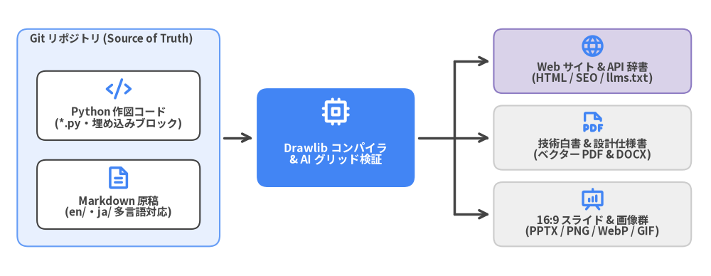
本書の構成とロードマップ
本書は、ソフトウェアエンジニア・テクニカルライター・AI コーディングエージェント向けに Drawlib の基礎から実践的なドキュメント出版までを全 16 章で解説する入門ハンドブックです。
- 第1〜3章（基礎編）: Drawlib の設計思想、
uv/uvxによるゼロ設定導入、左下(0, 0)のデカルト座標系とアンカー設計。 - 第4〜6章（基本図形・スタイル・アイコン編）: 43 種の基本図形と接続線、
GoogleStylesのニュートラル配色規律と多言語フォント、34 種のベクターアイコンスイート。 - 第7〜11章（高レベル描画エンジン編）: 18 種の SmartArts、10 種の定量チャート（
BoxChart・HeatmapChart含む）、ArchitectureDiagram、UML ソフトウェア設計図、5 種の自動グラフレイアウトソルバー（drawlib.graph）。 - 第12〜15章（アニメーション・出版・AI 協業編）:
APNG/WebP/GIFアニメーションと 16:9 スライド、5 つのプロジェクト種別（site/catalog/doc/slide/images）、CLI キャッシュ、AI エージェントの 3 段階自律検証ループ。
| ドキュメント情報 | 内容 |
|---|---|
| 対象バージョン | 0.3.10 |
| ビジュアルテーマ | GoogleStyles & GoogleColors (style = "google") |
対応言語 ([i18n]) |
英語 (en)・日本語 (ja) |
| 公式サイト | https://www.drawlib.com/ |
| ソースリポジトリ | https://github.com/yuichi110/drawlib |
| ライセンス | Apache License 2.0 |
1. なぜ Drawlib なのか？
現代のソフトウェア開発では、プルリクエスト・CI/CD パイプライン・AI コーディングエージェント（Claude Code, Cursor, Gemini CLI, GitHub Copilot 等）の普及によって実装コードが驚異的なスピードで進化する一方、開発のボトルネックは**「設計・アーキテクチャの可視化とドキュメントの同期（Documentation Rot の防止）」**へと移っています。システム構成図やシーケンス図・DB スキーマ図が手作業の別ツールに置き去りにされると、実装との乖離によってドキュメントが形骸化し、新規メンバーや AI セッションの全体把握が遅れ、最新の設計意図がチャット履歴やコミットログに埋もれてしまいます。
Drawlib は、**純粋 Python による宣言的な作図（Illustration as Code）と図解がファーストクラスで統合された技術文書出版（Illustrated Documentation as Code / IDaC）**を単一の Git リポジトリで実現し、エンジニアと AI エージェントがコードとまったく同じ開発体験で作図・差分レビュー・視覚検証・自動出版を行える基盤を提供します。
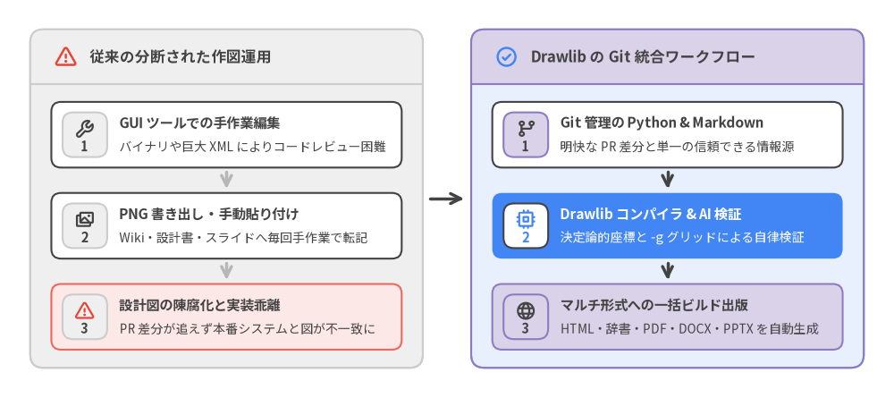
Source Code
from drawlib.canvas import save, setup
from drawlib.icons import phosphor
from drawlib.lines import line
from drawlib.smartarts import CardList, Panel
from drawlib.styles import Styles
setup(width=148, height=66)
left_panel = Panel(
"従来の分断された作図運用",
style=Styles.Neutral.patch(shape_r=2.2),
header_style=Styles.MutedNeutral,
text_style=Styles.DarkBold.patch(text_size=12.0),
icon=phosphor.warning,
icon_style=Styles.DangerBold,
header_height=9.0,
)
left_panel.draw((5.0, 5.0), width=65.0, height=56.0)
legacy_cards = CardList(
style=Styles.White.patch(shape_r=1.6),
text_style=Styles.DarkBold.patch(text_size=11.0),
description_style=Styles.Dark.patch(text_size=10.0),
badge_style=Styles.MutedNeutral,
badge_text_style=Styles.DarkBold.patch(text_size=10.5),
icon_style=Styles.DarkBold,
spacing=2.2,
show_arrows=True,
arrow_style=Styles.MutedBold,
)
legacy_cards.add(
"GUI ツールでの手作業編集",
"バイナリや巨大 XML によりコードレビュー困難",
badge_text="1",
icon=phosphor.wrench,
)
legacy_cards.add(
"PNG 書き出し・手動貼り付け",
"Wiki・設計書・スライドへ毎回手作業で転記",
badge_text="2",
icon=phosphor.images,
)
legacy_cards.add(
"設計図の陳腐化と実装乖離",
"PR 差分が追えず本番システムと図が不一致に",
badge_text="3",
icon=phosphor.warning,
style=Styles.DangerNeutral.patch(shape_r=1.6),
icon_style=Styles.DangerBold,
)
legacy_cards.draw((8.5, 8.0), width=58.0, height=41.0)
line((71.2, 33.0), (76.8, 33.0), arrow_head="->", style=Styles.DarkBold)
right_panel = Panel(
"Drawlib の Git 統合ワークフロー",
style=Styles.PrimaryNeutral.patch(shape_r=2.2),
header_style=Styles.SecondaryNeutral,
text_style=Styles.DarkBold.patch(text_size=12.0),
icon=phosphor.check_circle,
icon_style=Styles.PrimaryBold,
header_height=9.0,
)
right_panel.draw((78.0, 5.0), width=65.0, height=56.0)
drawlib_cards = CardList(
style=Styles.White.patch(shape_r=1.6),
text_style=Styles.DarkBold.patch(text_size=11.0),
description_style=Styles.Dark.patch(text_size=10.0),
badge_style=Styles.SecondaryNeutral,
badge_text_style=Styles.DarkBold.patch(text_size=10.5),
icon_style=Styles.DarkBold,
spacing=2.2,
show_arrows=True,
arrow_style=Styles.DarkBold,
)
drawlib_cards.add(
"Git 管理の Python & Markdown",
"明快な PR 差分と単一の信頼できる情報源",
badge_text="1",
icon=phosphor.git_branch,
)
drawlib_cards.add(
"Drawlib コンパイラ & AI 検証",
"決定論的座標と -g グリッドによる自律検証",
badge_text="2",
icon=phosphor.cpu,
style=Styles.PrimaryFlat.patch(shape_r=1.6),
text_style=Styles.WhiteBold.patch(text_size=11.0),
description_style=Styles.White.patch(text_size=10.0),
badge_style=Styles.White,
badge_text_style=Styles.PrimaryBold.patch(text_size=10.5),
icon_style=Styles.PrimaryBold,
)
drawlib_cards.add(
"マルチ形式への一括ビルド出版",
"HTML・辞書・PDF・DOCX・PPTX を自動生成",
badge_text="3",
icon=phosphor.globe,
style=Styles.SecondaryNeutral.patch(shape_r=1.6),
)
drawlib_cards.draw((81.5, 8.0), width=58.0, height=41.0)
save()
1.1 既存ツールと AI 直接生成の限界
これまでソフトウェア開発現場では主に以下の 4 つのアプローチが試みられてきましたが、AI コーディング時代の実運用においてそれぞれ構造的な限界を抱えています。
- GUI 作図ツールとバイナリ画像管理（
draw.io・Figma・Visio・Slides）: 画面上で直感的に配置できる反面、保存形式がバイナリ画像（PNG/JPEG）や膨大な XML となるため、Git のプルリクエスト上で意味のある差分レビューができません。AI エージェントがバイナリ画像の中身を直接編集することもできず、作成者ごとにフォント・色・余白が不統一になり、変更のたびに画像を手動エクスポートして Wiki・Word 仕様書・スライドへ貼り直す運用が設計図の形骸化を招きます。 - テキスト DSL 系ツール（
Mermaid・PlantUML・Graphviz）: Markdown との親和性は高いものの、配置計算がブラックボックスな自動レイアウトエンジンに委ねられます。エッジを 1 本追加しただけで図全体の配置が崩れることが多く、細やかなタイポグラフィや余白制御、定量的な統計チャート（BoxChart・HeatmapChart等）やリッチな SmartArts の表現には対応できません。 - AI による生 SVG の直接生成: AI エージェントに生
<svg>コードを直接出力させると、日本語（CJK）を含むテキストの折り返しやフォント幅の計測が困難なため枠からの文字はみ出しが多発します。さらに矢印やコネクタの座標計算ミスによる線の交差・位置ずれが起きやすく、何百行もの低レベルな<path>や<rect>タグは人間がレビュー・保守できません。 - 数値プロットライブラリの流用（
Matplotlib・Seaborn）: 学術計算グラフには優れていますが、システム構成図のノード・グループ枠・矢印ルーティング・34 種標準アイコンスイート・UML/ER 図・SmartArts・ドキュメント出版のための高レベル部品が存在しません。整った構成図を描くだけでも数百行のボイラープレートコードが必要となり、AI も構文エラーや座標崩れを起こしやすくなります。
| 評価軸 | GUI ツール (draw.io / Visio) |
テキスト DSL (Mermaid / PlantUML) |
生 SVG / Matplotlib |
Drawlib (v0.3.10) |
|---|---|---|---|---|
| Git PR 差分の可読性 | 低（バイナリ・冗長な XML） | 高（簡潔なテキスト） | 低（大量の <path>・冗長コード） |
高（宣言的な Python コード） |
| レイアウト制御性 | 手動マウス操作のみ | ブラックボックス自動配置のみ | 軸・ピクセル座標の手動計算 | 精密なデカルト座標 + 5種自動ソルバー |
| 表現領域の広さ | 構成図・ワイヤーフレーム | 基本的なフロー・シーケンス | 低レベル図形または数値グラフのみ | アイコン・SmartArts・チャート・構成図・アニメ |
| ドキュメント出版先 | 画像の手動書き出し | Web 上の埋め込み表示のみ | 単体画像ファイルのみ | HTML・辞書・PDF・.docx・スライド・.pptx |
| AI 自律修正との親和性 | コーディング AI から操作不可 | 描画後の重なりを微調整困難 | 日本語はみ出し・座標崩れが多発 | -g グリッドによるマルチモーダル自律修正 |
1.2 Drawlib を支える 3 つの柱
Drawlib v0.3.10 は、技術的なビジュアル表現を再現可能なソフトウェア工学へと昇華させる 3 つの柱を中心に設計されています。
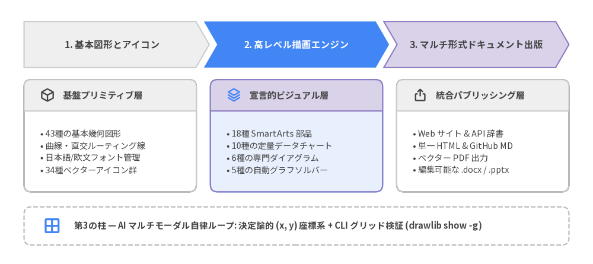
Source Code
from drawlib.canvas import save, setup
from drawlib.icons import phosphor
from drawlib.shapes import rectangle
from drawlib.smartarts import ChevronProcess, Panel
from drawlib.styles import Styles
from drawlib.text import text
setup(width=148, height=66)
stages = ChevronProcess(
style=Styles.Neutral,
text_style=Styles.DarkBold.patch(text_size=11.2),
description_style=Styles.Dark.patch(text_size=10.0),
spacing=2.0,
flat_left_end=True,
)
stages.add("1. 基本図形とアイコン")
stages.add(
"2. 高レベル描画エンジン",
style=Styles.PrimaryFlat,
text_style=Styles.WhiteBold.patch(text_size=11.2),
)
stages.add("3. マルチ形式ドキュメント出版", style=Styles.SecondaryNeutral)
stages.draw((6.0, 49.0), width=136.0, height=11.5)
p1 = Panel(
"基盤プリミティブ層",
style=Styles.White.patch(shape_r=1.8),
header_style=Styles.Neutral,
text_style=Styles.DarkBold.patch(text_size=11.0),
icon=phosphor.cube,
icon_style=Styles.DarkBold,
header_height=7.8,
)
p1.draw((6.0, 18.0), width=43.0, height=28.0)
text(
(10.0, 28.0),
"• 43種の基本幾何図形\n• 曲線・直交ルーティング線\n• 日本語/欧文フォント管理\n• 34種ベクターアイコン群",
style=Styles.Dark.patch(text_size=10.2, halign="left", text_line_spacing=1.45),
)
p2 = Panel(
"宣言的ビジュアル層",
style=Styles.PrimaryNeutral.patch(shape_r=1.8),
header_style=Styles.SecondaryNeutral,
text_style=Styles.DarkBold.patch(text_size=11.0),
icon=phosphor.stack,
icon_style=Styles.PrimaryBold,
header_height=7.8,
)
p2.draw((52.5, 18.0), width=43.0, height=28.0)
text(
(56.5, 28.0),
"• 18種 SmartArts 部品\n• 10種の定量データチャート\n• 6種の専門ダイアグラム\n• 5種の自動グラフソルバー",
style=Styles.Dark.patch(text_size=10.2, halign="left", text_line_spacing=1.45),
)
p3 = Panel(
"統合パブリッシング層",
style=Styles.White.patch(shape_r=1.8),
header_style=Styles.Neutral,
text_style=Styles.DarkBold.patch(text_size=11.0),
icon=phosphor.export,
icon_style=Styles.DarkBold,
header_height=7.8,
)
p3.draw((99.0, 18.0), width=43.0, height=28.0)
text(
(103.0, 28.0),
"• Web サイト & API 辞書\n• 単一 HTML & GitHub MD\n• ベクター PDF 出力\n• 編集可能な .docx / .pptx",
style=Styles.Dark.patch(text_size=10.2, halign="left", text_line_spacing=1.45),
)
rectangle((74.0, 9.5), width=136.0, height=9.5, style=Styles.MutedDashed.patch(shape_r=1.8))
phosphor.grid_four((13.0, 9.5), width=5.0, style=Styles.PrimaryBold)
text(
(18.5, 9.5),
"第3の柱 — AI マルチモーダル自律ループ: 決定論的 (x, y) 座標系 + CLI グリッド検証 (drawlib show -g)",
style=Styles.DarkBold.patch(text_size=10.5, halign="left"),
)
save()
1.2.1 第1の柱：Illustration as Code（コードとしての作図）
Drawlib のすべての図解は、Pydantic による厳格な型検証と統一テーマプリセット（GoogleStyles・DefaultStyles・MonochromeStyles）を備えた純粋な Python コードとして記述されます。
- 豊富な高レベル表現コンポーネント: 43 種の基本図形、曲線・直交コネクタ、34 種のベクターアイコンスイート（
phosphor・gcp・aws・azure・15 種のドメイン別スイート等）に加え、18 種の SmartArts、10 種の定量チャート、6 種の構成図・ソフトウェア設計図、5 種の自動グラフレイアウトソルバー（drawlib.graph）、マルチフレームアニメーション（APNG・WebP・GIF）を組み合わせられます。 - Python 言語の表現力をそのまま活用: JSON スキーマ、OpenAPI 定義、ベンチマーク CSV、あるいは
utils.pyに定義した共通マクロ関数から直接ダイアグラムを生成でき、手作業の転記ミスを根絶できます。
1.2.2 第2の柱：Illustrated Documentation as Code（図解ドキュメントのコード化）
Drawlib は単体画像の生成にとどまらず、Markdown 本文と埋め込み ```drawlib コードブロックを単一のコンパイル単位として統合します。
- 1 つのツールチェインで 5 つのプロジェクト種別に対応: マルチページのドキュメントポータル（
site）、検索可能な API/CLI リファレンス辞書（catalog）、章立ての技術白書（doc）、16:9ワイドスクリーンのプレゼンテーション（slide）、単体画像・アニメーション集（images）を標準搭載しています。 - 多言語・マルチ形式への一括ビルド:
en/とja/の構造パリティ（章立て・図表対応）を自動検証しながら、レスポンシブ HTML（SEO メタデータ・llms.txt対応）、GitHub 用 Markdown、ヘッドレス Chromium によるベクター PDF、編集可能な Word 文書（.docx）、ネイティブ PowerPoint（.pptx）を一括出力し、.drawlib/cache.dbで高速に差分ビルドします。
1.2.3 第3の柱：AI マルチモーダル自律検証ループ
Drawlib は、人間のエンジニアとマルチモーダル AI コーディングエージェントの協業を前提としてゼロから設計されています。
- 決定論的座標系と
-gグリッド検証: 配置がブラックボックス化された DSL では AI が文字重なりをピンポイントで直せませんが、Drawlib のデカルト座標系とdrawlib show ... -g（10単位・5単位の座標グリッド重畳出力）を使えば、AI が正確な座標値を読み取って修正できます。 - 自律的な視覚フィードバックループ: AI エージェントはリポジトリの実装コードを読み取り、宣言的な作図ブロックを記述し、
-gグリッド画像を視覚確認して文字切れや余白の偏りを自己修正する一連のループを数秒で完結できます（drawlib rules showによる内蔵リファレンスも完備しています）。
2. インストールとゼロ設定ツールチェイン
Drawlib v0.3.10 は Python 3.11+（3.11・3.12・3.13・3.14） で動作する自己完結型の純粋 Python ツールチェインであり、Linux・macOS・Windows のいずれの環境でも Graphviz 本体や LaTeX 環境、Node.js バンドラを別途インストールする必要はありません。
既存の Python プロジェクトへ uv add drawlib で依存追加する運用はもちろん、Go・Rust・TypeScript・Java などの多言語リポジトリで設定ファイルを一切作らず uvx drawlib から即時実行する運用にも同じ CLI とキャッシュ機構で対応します。
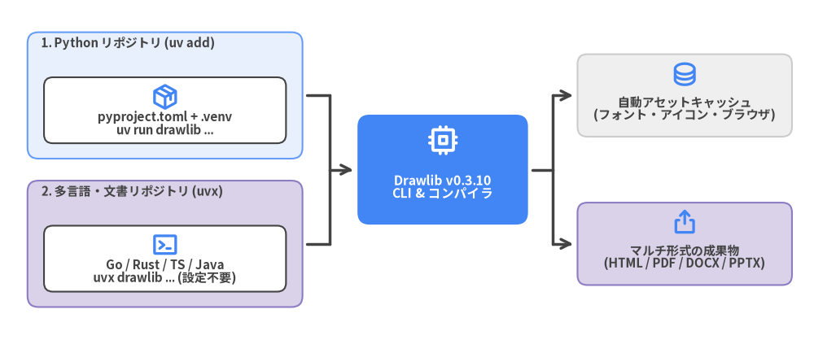
Source Code
from drawlib.canvas import save, setup
from drawlib.diagrams.architecture import ArchitectureDiagram, Node, NodeGroup, PhosphorIcon
from drawlib.styles import Styles
setup(width=148, height=62)
d = ArchitectureDiagram(
node_style=Styles.PrimaryBold,
node_text_style=Styles.DarkBold.patch(text_size=10.8),
edge_style=Styles.DarkBold,
edge_text_style=Styles.DarkBold.patch(text_size=10.0),
node_card_style=Styles.Neutral,
)
g_py = d.add(
NodeGroup(
title="1. Python リポジトリ (uv add)",
width=50.0,
height=23.0,
style=Styles.PrimaryNeutral.patch(shape_r=2.0),
text_style=Styles.DarkBold.patch(text_size=10.8, halign="left"),
),
xy=(3.0, 31.0),
)
g_py.add(
Node(
"pyproject.toml + .venv\nuv run drawlib ...",
width=44.0,
height=12.0,
icon=PhosphorIcon.PACKAGE,
icon_size=5.0,
card_style=Styles.White.patch(shape_r=1.6),
),
xy=(25.0, 8.8),
)
g_uvx = d.add(
NodeGroup(
title="2. 多言語・文書リポジトリ (uvx)",
width=50.0,
height=23.0,
style=Styles.SecondaryNeutral.patch(shape_r=2.0),
text_style=Styles.DarkBold.patch(text_size=10.8, halign="left"),
),
xy=(3.0, 4.0),
)
g_uvx.add(
Node(
"Go / Rust / TS / Java\nuvx drawlib ... (設定不要)",
width=44.0,
height=12.0,
icon=PhosphorIcon.TERMINAL_WINDOW,
icon_size=5.0,
card_style=Styles.White.patch(shape_r=1.6),
),
xy=(25.0, 8.8),
)
cli_node = d.add(
Node(
"Drawlib v0.3.10\nCLI & コンパイラ",
width=31.0,
height=20.0,
icon=PhosphorIcon.CPU,
icon_size=5.8,
style=Styles.WhiteBold,
text_style=Styles.WhiteBold.patch(text_size=11.2),
card_style=Styles.PrimaryFlat.patch(shape_r=2.2),
),
xy=(78.5, 29.0),
)
cache_node = d.add(
Node(
"自動アセットキャッシュ\n(フォント・アイコン・ブラウザ)",
width=39.0,
height=15.0,
icon=PhosphorIcon.DATABASE,
icon_size=5.0,
card_style=Styles.Neutral.patch(shape_r=1.8),
),
xy=(122.5, 42.5),
)
out_node = d.add(
Node(
"マルチ形式の成果物\n(HTML / PDF / DOCX / PPTX)",
width=39.0,
height=15.0,
icon=PhosphorIcon.EXPORT,
icon_size=5.0,
card_style=Styles.SecondaryNeutral.patch(shape_r=1.8),
),
xy=(122.5, 15.5),
)
j_in_top = d.junction((58.0, 42.5))
j_in_mid = d.junction((58.0, 29.0))
j_in_bot = d.junction((58.0, 15.5))
d.connect(g_py, j_in_top, arrow="-", routing="direct", padding=(0.8, 0.0))
d.connect(g_uvx, j_in_bot, arrow="-", routing="direct", padding=(0.8, 0.0))
d.connect(j_in_top, j_in_mid, arrow="-", routing="direct")
d.connect(j_in_bot, j_in_mid, arrow="-", routing="direct")
d.connect(j_in_mid, cli_node, arrow="->", routing="direct", padding=(0.0, 0.8))
j_out_mid = d.junction((98.5, 29.0))
j_out_top = d.junction((98.5, 42.5))
j_out_bot = d.junction((98.5, 15.5))
d.connect(cli_node, j_out_mid, arrow="-", routing="direct", padding=(0.8, 0.0))
d.connect(j_out_mid, j_out_top, arrow="-", routing="direct")
d.connect(j_out_mid, j_out_bot, arrow="-", routing="direct")
d.connect(j_out_top, cache_node, arrow="->", routing="direct", padding=(0.0, 0.8))
d.connect(j_out_bot, out_node, arrow="->", routing="direct", padding=(0.0, 0.8))
d.draw(xy=(2.0, 2.0))
save()
2.1 動作要件と 2 つの実行モード
Drawlib は現行の CPython ランタイムをサポートしており、高速なパッケージマネージャである uv と組み合わせることでロックファイル管理もゼロインストール実行もシームレスに行えます。
| 要件項目 | サポート仕様 | 備考 |
|---|---|---|
| Python バージョン | Python 3.11+（3.11・3.12・3.13・3.14） |
Linux（x86_64 / aarch64）・macOS・Windows 対応 |
| 推奨ランナー | uv（uv add / uv run / uvx） |
仮想環境の高速構築および多言語リポジトリでの即時実行に対応 |
| 標準代替手段 | pip（venv + pip install drawlib） |
追加の extra 指定なしで全機能が標準インストール可能 |
2.1.1 方法 1：Python プロジェクトへの導入（uv add drawlib）
Python アプリケーションやデータ分析基盤、あるいは pyproject.toml と uv.lock でバージョンを厳密に固定したいドキュメント専用リポジトリでは、uv add drawlib による導入を推奨します。
# 新規 uv プロジェクトの作成と drawlib の追加（既存 Python リポジトリ内でも同様）
uv init my_project
uv add drawlib
uv run drawlib --version
# uv を使用しない環境での標準 venv + pip フォールバック
python3 -m venv .venv
.venv/bin/pip install drawlib
.venv/bin/drawlib --version
プロジェクト依存として追加すると、エディタ（Pyright・Pylance・Ruff）上で drawlib.shapes・drawlib.smartarts・drawlib.charts・drawlib.diagrams の型補完が完全に効き、CI でも uv sync --frozen で再現性の高いビルドが可能になります。
2.1.2 方法 2：多言語リポジトリでのゼロインストール実行（uvx drawlib）
Go・Rust・TypeScript・Java・C++ リポジトリや純粋な Markdown 文書リポジトリでは、ルート直下に pyproject.toml や .venv/ を作る必要はありません。uvx を付けて実行するだけで、隔離されたツールキャッシュ環境から Drawlib CLI を即座に呼び出せます。
# ローカル設定ファイル一切不要でバージョン確認
uvx drawlib --version
# Go / Rust / TS リポジトリ内に多言語ドキュメント基盤を初期化して HTML ビルド
uvx drawlib init project site docs -l en,ja -s google
uvx drawlib build html docs_src/ -o docs_html/
2.2 同梱ランタイム基盤と自動アセットキャッシュ
図表描画・PDF 変換・Word/PowerPoint 出力ごとに別々のプラグイン導入を強いる従来のツールとは異なり、drawlib v0.3.10 は単一パッケージにすべての描画・出版エンジンを標準同梱しています（drawlib[pdf] のようなオプション指定は不要です）。
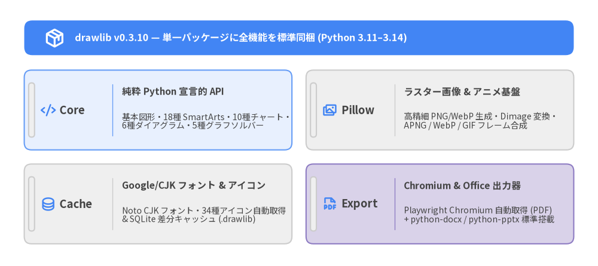
Source Code
from drawlib.canvas import save, setup
from drawlib.icons import phosphor
from drawlib.shapes import rectangle
from drawlib.smartarts import KpiCards
from drawlib.styles import Styles
from drawlib.text import text
setup(width=148, height=66)
rectangle((74.0, 56.5), width=136.0, height=8.6, style=Styles.PrimaryFlat.patch(shape_r=2.0))
phosphor.package((13.5, 56.5), width=5.0, style=Styles.WhiteBold)
text(
(18.5, 56.5),
"drawlib v0.3.10 — 単一パッケージに全機能を標準同梱 (Python 3.11–3.14)",
style=Styles.WhiteBold.patch(text_size=11.5, halign="left"),
)
stack = KpiCards(
style=Styles.White.patch(shape_r=1.8),
metric_style=Styles.DarkBold.patch(text_size=13.0),
text_style=Styles.DarkBold.patch(text_size=11.2),
description_style=Styles.Dark.patch(text_size=10.0),
accent_style=Styles.Neutral,
icon_style=Styles.PrimaryBold,
accent_position="left_pill",
metric_layout="left_column",
metric_width_ratio=0.22,
spacing=3.5,
)
stack.add(
"Core",
"純粋 Python 宣言的 API",
"基本図形・18種 SmartArts・10種チャート・\n6種ダイアグラム・5種グラフソルバー",
icon=phosphor.code,
style=Styles.PrimaryNeutral.patch(shape_r=1.8),
)
stack.add(
"Pillow",
"ラスター画像 & アニメ基盤",
"高精細 PNG/WebP 生成・Dimage 変換・\nAPNG / WebP / GIF フレーム合成",
icon=phosphor.images,
style=Styles.Neutral.patch(shape_r=1.8),
)
stack.add(
"Cache",
"Google/CJK フォント & アイコン",
"Noto CJK フォント・34種アイコン自動取得\n& SQLite 差分キャッシュ (.drawlib)",
icon=phosphor.database,
style=Styles.Neutral.patch(shape_r=1.8),
)
stack.add(
"Export",
"Chromium & Office 出力器",
"Playwright Chromium 自動取得 (PDF)\n+ python-docx / python-pptx 標準搭載",
icon=phosphor.file_pdf,
style=Styles.SecondaryNeutral.patch(shape_r=1.8),
)
stack.draw((6.0, 5.5), width=136.0, height=43.0, columns=2)
save()
drawlib をインストールすると、以下の 4 つのランタイム基盤が追加設定なしで連携して動作します。
- Pillow ラスター描画・アニメーション基盤（
pillow）: ベクター描画コアと連携し、高解像度なPNG/WebP画像出力、Dimageによるトリミング・合成処理、およびマルチフレームのアニメーション生成（APNG・アニメーションWebP・GIF）を担います。 - Playwright ヘッドレス Chromium（
playwright）: 高精細なベクターPDF（drawlib build pdf）および16:9スライド出力（drawlib build pptx）のために標準依存として組み込まれています。初回の PDF / PPTX ビルド時にchromium-headless-shellが自動ダウンロードされるため手動セットアップは不要です。 - Microsoft Office ネイティブ出力器（
python-docx/python-pptx）: 技術文書プロジェクト（doc）から編集可能な Word 文書（.docx）、プレゼンプロジェクト（slide）から編集可能な PowerPoint（.pptx）を直接出力します。 - Google / CJK フォント・アイコン自動取得と SQLite キャッシュ: OS 固有フォントに依存せず Noto Sans CJK 日本語フォントや Google Fonts、全 34 種のアイコンスイートを初回利用時に自動キャッシュして文字化け（豆腐化）を防止し、さらに
.drawlib/cache.dbが変更のない図表ブロックの再描画を自動的にスキップします。
オフライン環境や CI ランナー、および共有ライブラリを含まない最小構成の Linux コンテナ（python:3.12-slim 等）では、以下のコマンドで事前取得を行えます。
# ローカルのフォント・アイコン・地図・ブラウザのキャッシュ状態を確認
uv run drawlib cache list
# 日本語/欧文フォント・34種アイコン・地図・ヘッドレス Chromium を一括事前取得
uv run drawlib cache download --all
# PDF / PPTX ビルド用のヘッドレス Chromium のみを事前取得
uv run drawlib cache download --browser
# 最小 Linux コンテナ等で OS 共有ライブラリ (libnss3, libgbm1 等) が不足している場合
uv run playwright install-deps chromium
2.3 クイックテスト：最初のプロジェクト作成
Drawlib では裸の .py スクリプトを手作業で作るのではなく、必ず drawlib init project でプロジェクト雛形を生成してから執筆を始めます。これにより drawlib.toml・styles.py・utils.py・_assets/・各種 build*.sh が一括で構成されます。
# 1. CLI バージョンの確認
uv run drawlib --version
# 2. 日英バイリンガル (en,ja) かつ Google テーマの技術文書プロジェクトを初期化
uv run drawlib init project doc my_docs -l en,ja -s google
# 3. HTML・ベクター PDF・GitHub Markdown・単体画像を一括ビルド
./my_docs_src/build.sh
drawlib init project doc my_docs -l en,ja -s google を実行すると、my_docs_src/ 配下に drawlib.toml（[project] と [i18n] 設定）・styles.py（GoogleStyles）・ja/styles.py（FontJapanese オーバーライド）・utils.py・_assets/・en/ と ja/ の初期章ファイル、そして用途別のビルドスクリプト（build.sh・build_html.sh・build_pdf.sh・build_docx.sh・serve.sh）が即座に生成されます。
3. デカルト座標キャンバスとアンカー設計
Drawlib のすべての図解は、左下隅を原点 (0, 0) とし、X 軸が右方向（0 -> width）、Y 軸が上方向（0 -> height）へ増加する決定論的な 2 次元デカルト座標平面上に描画されます。
左下原点のデカルト座標系・720pt タイポグラフィ計算式・コンポーネント別の基準アンカー規則の 3 点を押さえることで、人間のエンジニアも AI コーディングエージェントも文字重なりや配置ズレのない美しい図解を一発で設計できるようになります。
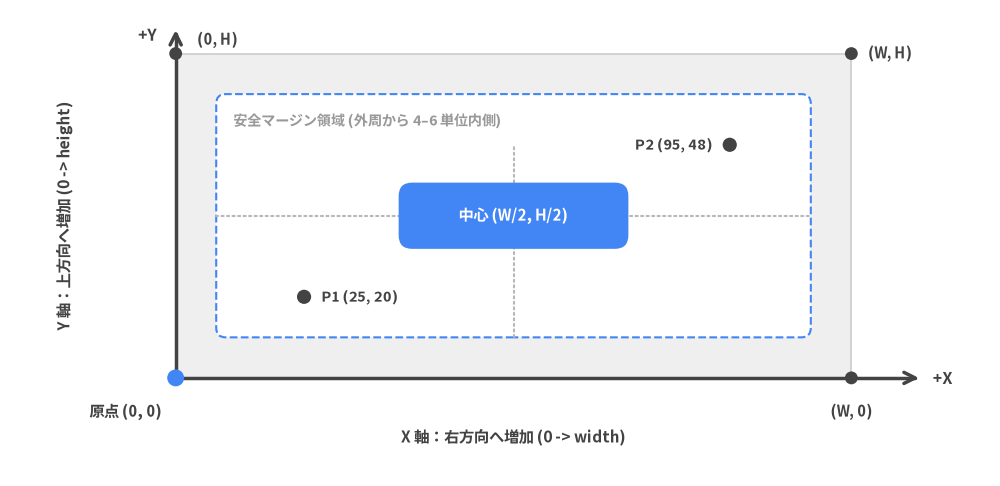
Source Code
from drawlib.canvas import save, setup
from drawlib.lines import line
from drawlib.shapes import circle, rectangle
from drawlib.styles import Colors, Styles
from drawlib.text import text
setup(width=148, height=72)
# 仮想キャンバス外枠 [26..126] x [16..64] と外周 6 単位内側の安全マージン領域
rectangle((76.0, 40.0), width=100.0, height=48.0, style=Styles.Neutral.patch(shape_line_width=1.2))
rectangle(
(76.0, 40.0),
width=88.0,
height=36.0,
style=Styles.PrimaryDashed.patch(shape_fill_color=Colors.White, shape_r=1.4),
)
text(
(34.5, 55.2),
"安全マージン領域 (外周から 4–6 単位内側)",
style=Styles.MutedBold.patch(text_size=10.2, halign="left", valign="top"),
)
# 中心座標の補助クロスヘア（中央バッジの背面に描画）
line((32.0, 40.0), (120.0, 40.0), style=Styles.MutedDotted)
line((76.0, 22.0), (76.0, 50.5), style=Styles.MutedDotted)
# デカルト X 軸（右向き）と Y 軸（上向き）
line((26.0, 16.0), (136.0, 16.0), arrow_head="->", style=Styles.DarkBold)
text((138.0, 16.0), "+X", style=Styles.DarkBold.patch(text_size=11.5, halign="left", valign="center"))
text((76.0, 7.2), "X 軸：右方向へ増加 (0 -> width)", style=Styles.DarkBold.patch(text_size=11.0))
line((26.0, 16.0), (26.0, 67.5), arrow_head="->", style=Styles.DarkBold)
text((23.2, 66.8), "+Y", style=Styles.DarkBold.patch(text_size=11.5, halign="right", valign="center"))
text(
(9.5, 40.0),
"Y 軸：上方向へ増加 (0 -> height)",
style=Styles.DarkBold.patch(text_size=11.0, angle=90),
)
# 四隅のマーカーとオフセット配置ラベル（軸線やドットとの重なりゼロ）
circle((26.0, 16.0), radius=1.25, style=Styles.PrimaryFlat)
text((24.0, 12.2), "原点 (0, 0)", style=Styles.DarkBold.patch(text_size=10.8, halign="right", valign="top"))
circle((126.0, 16.0), radius=0.95, style=Styles.DarkFlat)
text((126.0, 12.2), "(W, 0)", style=Styles.DarkBold.patch(text_size=10.5, halign="center", valign="top"))
circle((26.0, 64.0), radius=0.95, style=Styles.DarkFlat)
text((29.2, 64.8), "(0, H)", style=Styles.DarkBold.patch(text_size=10.5, halign="left", valign="bottom"))
circle((126.0, 64.0), radius=0.95, style=Styles.DarkFlat)
text((128.5, 64.0), "(W, H)", style=Styles.DarkBold.patch(text_size=10.5, halign="left", valign="center"))
# 中心アンカーバッジと 2 つのサンプル座標点
rectangle(
(76.0, 40.0),
width=34.0,
height=9.8,
style=Styles.PrimaryFlat.patch(shape_r=2.0),
text="中心 (W/2, H/2)",
text_style=Styles.WhiteBold.patch(text_size=10.8),
)
circle((45.0, 28.0), radius=1.05, style=Styles.DarkFlat)
text((47.6, 28.0), "P1 (25, 20)", style=Styles.DarkBold.patch(text_size=10.4, halign="left", valign="center"))
circle((108.0, 50.5), radius=1.05, style=Styles.DarkFlat)
text((105.4, 50.5), "P2 (95, 48)", style=Styles.DarkBold.patch(text_size=10.4, halign="right", valign="center"))
save()
3.1 デカルト座標系とブラウザ DOM / SVG 座標系の違い
HTML5 の <canvas> や CSS 配置、生の <svg> に慣れているエンジニアは、Y 座標の上下反転を防ぐために以下の違いを最初に確認してください。
| 座標特性 | Drawlib デカルト座標系 | ブラウザ DOM / HTML <svg> |
|---|---|---|
原点 (0, 0) の位置 |
左下隅（Bottom-Left） | 左上隅（Top-Left） |
水平 +X 方向 |
左から右へ増加（0 -> width） |
左から右へ増加（0 -> width） |
垂直 +Y 方向 |
下から上へ増加（0 -> height） |
上から下へ増加（0 -> height） |
| 上部タイトルの配置 | 大きい Y 値（height - 6 付近） |
小さい Y 値（16px 付近） |
| 外周の安全マージン | [5, W - 5] × [5, H - 5] の内側に配置 |
CSS padding / viewBox |
数学のグラフや建築立面図と同じく +Y が上を向いているため、**「Y の値が大きいほど画面の上方に配置される」**という直感的なメンタルモデルで統一されています。図タイトルは height - 6 付近、メインの構成要素は height / 2 前後、注釈や凡例は y = 6..10 付近に置きます。また、枠線や角丸の見切れを防ぐため、キャンバス四辺には必ず 4〜6 単位の外周マージンを確保してください。
3.2 キャンバスのライフサイクル：setup()・描画・save()
単体スクリプトでも Markdown 埋め込みブロックでも、Drawlib の作図コードは常に 3 ステップのライフサイクルで構成されます。
setup(width=..., height=..., dpi=..., background_color=..., grid=...): キャンバスの幅と高さを抽象的な仮想座標単位（width/height、既定値100 × 100）で定義し、出力画像のピクセル解像度をdpi（既定値100）で指定します。座標計算と解像度が分離されているため、dpi=100をdpi=200に引き上げても(x, y)座標を一切書き換えることなく出力ピクセル数だけを 2 倍に高精細化できます。また、配色テーマやフォント設定（from drawlib.styles import Colors, Styles）はプロジェクトのstyles.py（drawlib.tomlのstyle = "google"等）から自動適用されます。- 宣言的な描画呼び出し: 背面の境界枠や接続線から前面のノード・ラベルへと奥から手前（Back-to-Front）の順で基本図形・アイコン・SmartArts・チャートを配置します。
save(): キャンバスの描画内容を確定して出力します。単体.pyスクリプトでも Markdown 内の```drawlibブロックでも、必ず末尾をsave()で締めくくってください。単体スクリプトでは<スクリプト名>.png（または指定パス）への書き出しを実行し、Markdown 埋め込みブロックでもsave()を明記することでそのままコピー＆ペーストして単体実行できる自己完結性が保たれます（※1 つの.pyファイル内で複数画像を連続生成する場合は、各save(...)の直後にclear()を呼び出してキャンバスを初期化します）。
from drawlib.canvas import save, setup
from drawlib.lines import line
from drawlib.shapes import rectangle
from drawlib.styles import Styles
# 1. 仮想座標 136x50 単位・解像度 150 DPI（出力サイズ 2040x750 px）で初期化
setup(width=136, height=50, dpi=150)
# 2. 奥から手前の順で描画（ニュートラル基調 + 主役ノード 1 個のみ PrimaryFlat）
line((44, 25), (54, 25), arrow_head="->", style=Styles.DarkBold)
line((82, 25), (92, 25), arrow_head="->", style=Styles.DarkBold)
rectangle((26, 25), width=36, height=18, style=Styles.Neutral, text="クライアント")
rectangle(
(68, 25),
width=28,
height=18,
style=Styles.PrimaryFlat,
text="API コア",
text_style=Styles.WhiteBold,
)
rectangle((110, 25), width=36, height=18, style=Styles.SecondaryNeutral, text="PostgreSQL")
# 3. ライフサイクル確定のため必ず save() を呼び出す
save()
3.3 720pt タイポグラフィ計算式とキャンバスサイズ設計
Drawlib の内部レンダラは図全体の基準幅を 720pt 固定としてフォントサイズを正規化します。そのため、dpi の値にかかわらず、HTML・PDF・スライド上で画像が Display Width（表示幅ピクセル）で描画された際の見た目上の文字サイズは以下の式で厳密に決まります。
Rendered Font Size (px) = text_size × (Display Width (px) / 720)
この比例関係を理解しておくと、ドキュメントに埋め込んだ際に図中の文字だけ極端に小さくなる問題を防げます。
text_size >= 10.0を厳守する: 技術文書（doc・site・catalog）の本文カラム幅はおよそ820px〜900px（Display Width / 720 ≈ 1.15〜1.25）です。ノード本文に10.5〜12.0、見出しに12.0〜14.0を指定すれば画面上で12px〜17px相当となり、周囲の16pxHTML 本文と自然に調和します（目盛り補助ラベル等の最小下限でも9.5未満には下げないでください）。- ドキュメント埋め込み図の最適幅は
width=120..150:setup(width=140, height=60)のように幅を120〜150単位に設定すると、10単位刻みのグリッド計算がしやすく、ファーストビューに収まりの良い横長比率になります。 - フェンス属性で狭いピクセル幅を指定しない:
```drawlibフェンスにwidth=500pxや600pxを指定すると、Display Width / 720が0.69まで縮小し、図内のすべての文字が 30% 以上小さくなってしまいます。
| 用途・出力先 | 推奨 setup(width, height) |
標準表示幅 | 推奨 text_size |
画面上の実表示文字サイズ |
|---|---|---|---|---|
| 技術文書・Web サイトの図解 | 140 × 60（幅 120..150） |
~840px |
10.5〜12.0（見出し 12.0〜14.0） |
~12.5px〜16.5px（16px 本文と調和） |
| 情報密度の高い全体構成図 | 148 × 72 |
~840px |
10.0〜11.5（見出し 12.0〜13.5） |
~11.7px〜15.8px |
| 16:9 フル幅スライド図解 | 160 × 80 |
~1760px |
11.0〜13.0（見出し 14.0〜16.0） |
~27px〜39px（26px スライド本文と調和） |
3.4 テキスト配置（halign / valign）とコンポーネントのアンカー設計
単体テキスト text(xy, label, style=...) の基準点 xy に対する揃え位置は、既存の Styles.* トークンに .patch(halign=..., valign=...) を適用して制御します（Style(...) を直接インスタンス化せず、常に .patch(...) を使用します）。
halign="left" | "center" | "right":xを左端にして右へ伸ばす（"left"）、xを水平中央にする（"center"、既定値）、またはxを右端にして左へ伸ばす（"right"）かを指定します。valign="bottom" | "center" | "top":yのベースライン上に載せる（"bottom"）、yを垂直中央にする（"center"、既定値）、またはyを上端にして下へ伸ばす（"top"）かを指定します。
さらに、Drawlib の全コンポーネントは以下の 3 種類の座標アンカー規則のいずれかに明確に分類されます。
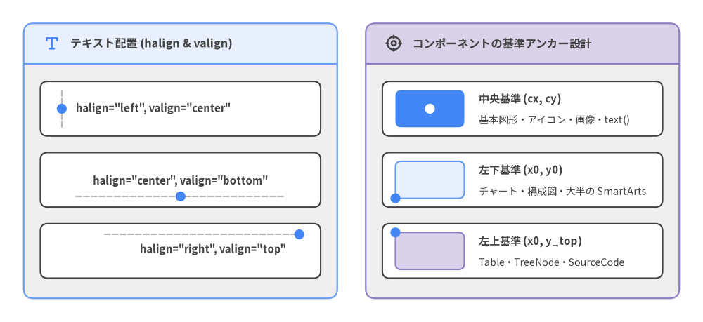
Source Code
from drawlib.canvas import save, setup
from drawlib.icons import phosphor
from drawlib.lines import line
from drawlib.shapes import circle, rectangle
from drawlib.smartarts import Panel
from drawlib.styles import Styles
from drawlib.text import text
setup(width=148, height=68)
# 左パネル: halign / valign の基準点デモ（アンカードットと文字の重なりゼロ）
p_left = Panel(
"テキスト配置 (halign & valign)",
style=Styles.Neutral.patch(shape_r=2.0),
header_style=Styles.PrimaryNeutral,
text_style=Styles.DarkBold.patch(text_size=11.5),
icon=phosphor.text_t,
icon_style=Styles.PrimaryBold,
header_height=8.5,
)
p_left.draw((5.0, 5.0), width=66.0, height=58.0)
# 1段目: halign="left", valign="center"
rectangle((38.0, 45.0), width=59.0, height=11.5, style=Styles.White.patch(shape_r=1.5))
line((13.0, 41.2), (13.0, 48.8), style=Styles.MutedDashed)
circle((13.0, 45.0), radius=1.05, style=Styles.PrimaryFlat)
text(
(16.0, 45.0),
'halign="left", valign="center"',
style=Styles.DarkBold.patch(text_size=10.5, halign="left", valign="center"),
)
# 2段目: halign="center", valign="bottom"
rectangle((38.0, 30.0), width=59.0, height=11.5, style=Styles.White.patch(shape_r=1.5))
line((16.0, 26.5), (60.0, 26.5), style=Styles.MutedDashed)
circle((38.0, 26.5), radius=1.05, style=Styles.PrimaryFlat)
text(
(38.0, 28.5),
'halign="center", valign="bottom"',
style=Styles.DarkBold.patch(text_size=10.5, halign="center", valign="bottom"),
)
# 3段目: halign="right", valign="top"
rectangle((38.0, 15.0), width=59.0, height=11.5, style=Styles.White.patch(shape_r=1.5))
line((22.0, 18.5), (63.0, 18.5), style=Styles.MutedDashed)
circle((63.0, 18.5), radius=1.05, style=Styles.PrimaryFlat)
text(
(60.2, 16.5),
'halign="right", valign="top"',
style=Styles.DarkBold.patch(text_size=10.5, halign="right", valign="top"),
)
# 右パネル: コンポーネントの 3 大基準アンカーモデル
p_right = Panel(
"コンポーネントの基準アンカー設計",
style=Styles.Neutral.patch(shape_r=2.0),
header_style=Styles.SecondaryNeutral,
text_style=Styles.DarkBold.patch(text_size=11.5),
icon=phosphor.crosshair,
icon_style=Styles.DarkBold,
header_height=8.5,
)
p_right.draw((77.0, 5.0), width=66.0, height=58.0)
# 分類 1: 中央基準 Center (cx, cy) — 主役ノード PrimaryFlat 1個
rectangle((110.0, 45.0), width=59.0, height=11.5, style=Styles.White.patch(shape_r=1.5))
rectangle((90.5, 45.0), width=14.5, height=7.8, style=Styles.PrimaryFlat.patch(shape_r=1.2))
circle((90.5, 45.0), radius=1.05, style=Styles.WhiteFlat)
text((100.8, 47.0), "中央基準 (cx, cy)", style=Styles.DarkBold.patch(text_size=10.8, halign="left"))
text((100.8, 42.6), "基本図形・アイコン・画像・text()", style=Styles.Dark.patch(text_size=10.0, halign="left"))
# 分類 2: 左下基準 Bottom-Left (x0, y0)
rectangle((110.0, 30.0), width=59.0, height=11.5, style=Styles.White.patch(shape_r=1.5))
rectangle((90.5, 30.0), width=14.5, height=7.8, style=Styles.PrimaryNeutral.patch(shape_r=1.2))
circle((83.25, 26.1), radius=1.05, style=Styles.PrimaryFlat)
text((100.8, 32.0), "左下基準 (x0, y0)", style=Styles.DarkBold.patch(text_size=10.8, halign="left"))
text((100.8, 27.6), "チャート・構成図・大半の SmartArts", style=Styles.Dark.patch(text_size=10.0, halign="left"))
# 分類 3: 左上基準 Top-Left (x0, y_top)
rectangle((110.0, 15.0), width=59.0, height=11.5, style=Styles.White.patch(shape_r=1.5))
rectangle((90.5, 15.0), width=14.5, height=7.8, style=Styles.SecondaryNeutral.patch(shape_r=1.2))
circle((83.25, 18.9), radius=1.05, style=Styles.PrimaryFlat)
text((100.8, 17.0), "左上基準 (x0, y_top)", style=Styles.DarkBold.patch(text_size=10.8, halign="left"))
text((100.8, 12.6), "Table・TreeNode・SourceCode", style=Styles.Dark.patch(text_size=10.0, halign="left"))
save()
基本プリミティブと複合コンポーネント（SmartArts・Charts・Diagrams）を組み合わせる際は、常に以下の 3 分類を意識してください。
- 中央基準
Center (cx, cy): 基本図形（shapes.*）・text()・アイコン群（phosphor.*・gcp.*・aws.*・azure.*）・images.image()・MindMapNode・Cycle・およびArchitectureDiagram内の個別Node配置で使用されます。要素は水平[cx - w/2, cx + w/2]、垂直[cy - h/2, cy + h/2]の範囲を占めます。 - 左下基準
Bottom-Left (x0, y0): すべての定量チャート（charts.*）・ダイアグラム全体の描画（d.draw(xy=(x0, y0))やNodeGroup(..., xy=(x0, y0))）・および大半の SmartArts（Panel・CardList・ChevronProcess・GridLayout・KpiCards・BoxList・Pyramid・Roadmap・GeoMap・*Calendar）で使用されます。幅Wのキャンバス中央に幅wの部品を置く場合はx0 = (W - w) / 2を渡します（W / 2を渡すと右半分へはみ出すため注意してください）。 - 左上基準
Top-Left (x0, y_top): 文書構造系の SmartArts であるTable・TreeNode・BulletPoints・SourceCodeで使用され、固定した上端ラインy_topから下方向へ向かって行やツリーが自然に伸びる設計になっています。
4. 基本図形・接続線・幾何計算ヘルパー
複数ノードの全体配置を自動化する高レベル描画エンジン（ArchitectureDiagram・SmartArts・Charts）に対し、drawlib.shapes・drawlib.lines・drawlib.math はカスタムバッジや吹き出し、3D コンテナ、滑らかな曲線コネクタをミリ単位の精度で自在に制御するためのベクター描画プリミティブを提供します。
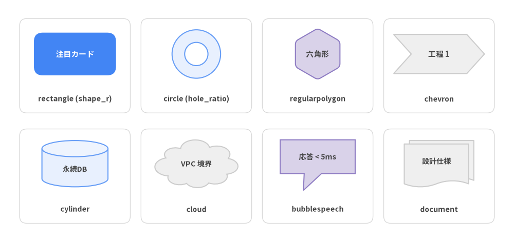
Source Code
from drawlib.canvas import save, setup
from drawlib.shapes import (
bubblespeech,
chevron,
circle,
cloud,
cylinder,
document,
rectangle,
regularpolygon,
)
from drawlib.styles import Colors, Styles
from drawlib.text import text
setup(width=144, height=68)
xs = [21.0, 55.0, 89.0, 123.0]
ys = [49.5, 18.5]
slot_style = Styles.White.patch(
shape_r=2.0,
shape_line_color=Colors.Gray3,
shape_line_width=1.0,
)
for ry in ys:
for cx in xs:
rectangle((cx, ry), width=31.0, height=26.5, style=slot_style)
label_style = Styles.DarkBold.patch(text_size=10.0)
body_dark = Styles.DarkBold.patch(text_size=10.5)
# 1段目: 角丸矩形・中抜きリング・正多角形・シェブロン矢印
rectangle(
(xs[0], 52.8),
width=23.0,
height=12.0,
style=Styles.PrimaryFlat.patch(shape_r=2.5),
text="注目カード",
text_style=Styles.WhiteBold.patch(text_size=10.8),
)
text((xs[0], 40.2), "rectangle (shape_r)", style=label_style)
circle(
(xs[1], 52.8),
radius=6.8,
hole_ratio=0.48,
style=Styles.PrimaryNeutral,
)
text((xs[1], 40.2), "circle (hole_ratio)", style=label_style)
regularpolygon(
(xs[2], 52.8),
6,
7.2,
style=Styles.SecondaryNeutral.patch(shape_r=0.9),
text="六角形",
text_style=body_dark,
)
text((xs[2], 40.2), "regularpolygon", style=label_style)
chevron(
(xs[3], 52.8),
width=20.5,
height=11.0,
corner_angle=48,
style=Styles.Neutral,
text="工程 1",
text_style=body_dark,
)
text((xs[3], 40.2), "chevron", style=label_style)
# 2段目: 円柱ストレージ・クラウド境界・吹き出し・積層ドキュメント
cylinder(
(xs[0], 22.0),
width=18.5,
height=13.0,
disks=1,
style=Styles.PrimaryNeutral,
text="永続DB",
text_style=Styles.DarkBold.patch(text_size=10.2, xy_abs_shift=(0, -1.5)),
)
text((xs[0], 9.2), "cylinder", style=label_style)
cloud(
(xs[1], 22.0),
width=23.5,
height=13.5,
style=Styles.Neutral,
text="VPC 境界",
text_style=Styles.DarkBold.patch(text_size=10.2),
)
text((xs[1], 9.2), "cloud", style=label_style)
bubblespeech(
(xs[2] - 10.5, 19.2),
width=21.0,
height=9.5,
tail_edge="bottom",
tail_start_ratio=0.32,
tail_vertex_xy=(85.0, 14.5),
tail_end_ratio=0.55,
style=Styles.SecondaryNeutral,
text="応答 < 5ms",
text_style=Styles.DarkBold.patch(text_size=10.0),
)
text((xs[2], 9.2), "bubblespeech", style=label_style)
document(
(xs[3], 22.0),
width=19.5,
height=13.0,
stacked=2,
style=Styles.Neutral,
text="設計仕様",
text_style=Styles.DarkBold.patch(text_size=10.2, xy_abs_shift=(0, 0.8)),
)
text((xs[3], 9.2), "document", style=label_style)
save()
4.1 drawlib.shapes が提供する全 43 種の基本図形
drawlib.shapes は用途別に整理された 6 ファミリー・全 43 種のベクター図形関数を提供します。すべての図形関数はキーワード専用の必須引数 *, style: Style を受け取り、座標ジオメトリと視覚スタイルを明確に分離します。
| ファミリー | 数 | drawlib.shapes の関数名 |
主なエンジニアリング用途 |
|---|---|---|---|
| 基本図形 (Basic) | 6 | rectangle, circle, ellipse, arc, fan, wedge |
サービスカード（rectangle + shape_r）、ノード、ドーナツ／リング（circle の hole_ratio や wedge の width）、扇形 |
| 多角形・自由パス (Polygons) | 9 | triangle, rhombus, parallelogram, trapezoid, regularpolygon, star, plaque, polygon, shape |
条件分岐（rhombus）・入出力（parallelogram）、五角形／六角形／八角形（regularpolygon(xy, n, r)）、任意の中抜き多角形（polygon + holes） |
| ブロック矢印・シェブロン (Arrows) | 6 | arrow, arrow_polyline, arrow_arc, arrow_l, arrow_u, chevron |
フェーズ見出し（chevron）、片方向／双方向ブロック矢印（arrow(..., head="<->")）、L 字・U 字ターン矢印 |
| 3D コンテナ・境界 (Containers) | 6 | cylinder, cube, document, funnel, cloud, brace |
データベース（cylinder の disks=2）、3D ノード（cube）、波形／折り返し文書（document）、クラウド境界、波括弧（brace） |
| バッジ・吹き出し (Badges) | 8 | bubblespeech, ribbon, shield, tag, pin, checkmark, forbidden, explosion |
注釈コールアウト（bubblespeech）、セキュリティ盾（shield）、リリースタグ（tag・ribbon）、位置ピン（pin）、合否ステータス |
| 記号・フロー演算子 (Symbols) | 8 | clock, face, gear, heart, lightning, math_symbol, moon, sun |
スケジューラ／遅延（clock）、ワーカー処理（gear）、十字／四則演算記号（math_symbol）、イベント発火（lightning） |
システム構成図や業務フローチャートで頻出する標準記号も、これらのプリミティブにそのまま対応します（分岐判定は rhombus、データ入出力は parallelogram、帳票・仕様書は document、永続ストレージは cylinder、処理ステップは角丸 rectangle）。大規模なフロー図は drawlib.diagrams.flow.FlowDiagram で自動レイアウトすることも可能です。
4.2 中心アンカー (cx, cy)・インラインテキスト・角丸・回転
HTML/DOM の左上基準やチャートの左下基準とは異なり、drawlib.shapes の平面図形は幾何学的な中心座標 xy = (cx, cy) をアンカーとします（始点・頂点列を指定する arrow(xy1, xy2, ...)・arrow_polyline(xys, ...)・polygon(xys, ...) および吹き出し本体の左下 (x0, y0) を指定する bubblespeech(xy, ...) が例外です）。幅や高さの半分を引き算する必要がなく、共通の y = 20 を指定するだけで異種図形の中心軸がピタリと揃います。
さらに以下の 3 つの仕組みにより、ボイラープレートのない簡潔な記述が可能です。
- 図形内蔵のインラインラベル（
text&text_style）: 43 種中 39 種の図形がtext="..."とtext_style=...を直接受け取るため、別途text()を呼び出す手間が省けます。pinやgearなどの小アイコン下にラベルを添える際はtext_style=Styles.DarkBold.patch(xy_abs_shift=(0, -12))が便利です。 - 滑らかな角丸フィレット（
shape_r）:style.patch(shape_r=2.5)を指定すると、rectangle・triangle・rhombus・parallelogram・trapezoid・regularpolygon・star・polygonの頂点が二次ベジェ曲線で滑らかに丸められます。 - 反時計回りの回転（
angle）と中抜き（hole_ratio）:style.patch(angle=30)で中心(cx, cy)まわりに反時計回りで回転でき（文字を水平に保つにはtext_style側でangle=0を上書き）、hole_ratio=0.5で背景を透過させたドーナツ状のリングを切り抜けます。
from drawlib.canvas import save, setup
from drawlib.shapes import circle, rectangle, regularpolygon
from drawlib.styles import Styles
setup(width=120, height=40)
# すべて y=20 の中心アンカーで一列に整列し、テキスト・角丸・回転を宣言的に適用
rectangle(
(25, 20),
width=30,
height=16,
style=Styles.PrimaryFlat.patch(shape_r=2.5),
text="入口GW",
text_style=Styles.WhiteBold.patch(text_size=11.0),
)
regularpolygon(
(65, 20),
6,
10.0,
style=Styles.PrimaryNeutral.patch(angle=15, shape_r=1.0),
text="ルーター",
text_style=Styles.DarkBold.patch(text_size=10.5, angle=0),
)
circle(
(100, 20),
radius=9.5,
hole_ratio=0.5,
style=Styles.Neutral,
text="50%",
text_style=Styles.DarkBold.patch(text_size=10.5),
)
save()
4.3 ベクター接続線（drawlib.lines）と幾何計算（drawlib.math）
配置した図形同士を美しく結ぶため、drawlib.lines は多彩な 1 次元ストローク接続線を提供し、drawlib.math は三角関数の手計算を不要にする幾何計算ヘルパーを提供します。
- 直線・折れ線・角丸ルーティング（
line,lines,lines_curved）:line(xy1, xy2, *, style, arrow_head="->")は 2 点間の直線、lines(xys, ...)は直角マンハッタン折れ線、lines_curved(xys, r=3.5, ...)は折れ線の各頂点を半径rで自動的に丸めたフィレット経路を描画します（$r < \frac{1}{2}\min |P_{i+1} - P_i|$ を満たす値を指定）。すべての線関数でarrow_head（"","-","->","<-","<->"）を利用できます。 - 円弧スプライン・ベジェ曲線（
line_curved,line_bezier1,line_bezier2,lines_bezier,line_arc）:line_curved(xy1, xy2, bend=0.22, ...)は進行方向に対して左（bend > 0）または右（bend < 0）へ緩やかな弧を描き、リクエスト／レスポンスの往復表現に最適です。lines_bezier(xy, path_points, ...)は直線(x, y)・二次ベジェ(cp, end)・三次ベジェ(cp1, cp2, end)を 1 本のパスに自在に連結できます。 - 座標補間・放射配置ヘルパー（
drawlib.math）:get_intermediate_point(xy1, xy2)&get_intermediate_points(xy1, xy2, num=3): 線分上の等間隔ウェイポイント座標を算出します（折れ線全体の弧長に沿うget_intermediate_path_points(xys, num=...)も完備）。rotate_point(xy, angle, center)&get_point_on_ellipse(center, width, height, angle):sin/cosを手書きせずに放射状ノード配置や楕円外周上の接続点を正確に求められます。get_angle(xy1, xy2)・get_distance(xy1, xy2)・get_center_and_size(xys)・compute_orthogonal_path(...): 傾斜角・距離の計測やクラスタ外枠の自動算出、直交経路の自動生成を担います。
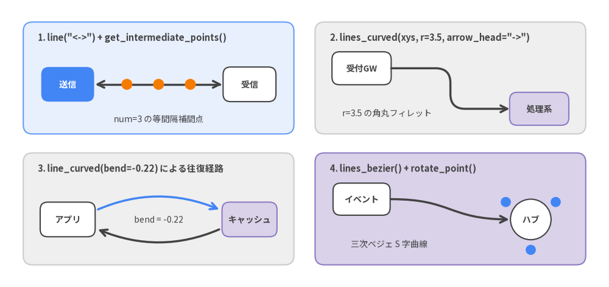
Source Code
from drawlib.canvas import save, setup
from drawlib.lines import line, line_curved, lines_bezier, lines_curved
from drawlib.math import get_intermediate_points, rotate_point
from drawlib.shapes import circle, rectangle
from drawlib.styles import Styles
from drawlib.text import text
setup(width=144, height=68)
hdr = Styles.DarkBold.patch(text_size=10.5, halign="left")
note = Styles.Dark.patch(text_size=10.0)
node_light = Styles.White.patch(shape_r=1.8)
node_sec = Styles.SecondaryNeutral.patch(shape_r=1.8)
lbl_dark = Styles.DarkBold.patch(text_size=10.2)
# ゆとりある 4 分割ニュートラルパネル
rectangle((37.5, 49.5), width=64.0, height=26.5, style=Styles.PrimaryNeutral.patch(shape_r=2.2))
rectangle((106.5, 49.5), width=64.0, height=26.5, style=Styles.Neutral.patch(shape_r=2.2))
rectangle((37.5, 18.5), width=64.0, height=26.5, style=Styles.Neutral.patch(shape_r=2.2))
rectangle((106.5, 18.5), width=64.0, height=26.5, style=Styles.SecondaryNeutral.patch(shape_r=2.2))
# パネル 1: 双方向直線 "<->" + get_intermediate_points()
text((9.0, 59.0), '1. line("<->") + get_intermediate_points()', style=hdr)
rectangle(
(16.0, 48.0),
width=12.5,
height=8.2,
style=Styles.PrimaryFlat.patch(shape_r=1.8),
text="送信",
text_style=Styles.WhiteBold.patch(text_size=10.2),
)
rectangle((59.0, 48.0), width=12.5, height=8.2, style=node_light, text="受信", text_style=lbl_dark)
line((22.5, 48.0), (52.5, 48.0), arrow_head="<->", style=Styles.DarkBold)
for pt in get_intermediate_points((22.5, 48.0), (52.5, 48.0), num=3):
circle(pt, radius=1.3, style=Styles.AccentFlat)
text((37.5, 39.8), "num=3 の等間隔補間点", style=note)
# パネル 2: lines_curved(r=3.5) による角丸マンハッタン経路
text((78.0, 59.0), '2. lines_curved(xys, r=3.5, arrow_head="->")', style=hdr)
rectangle((85.5, 51.8), width=14.0, height=7.8, style=node_light, text="受付GW", text_style=lbl_dark)
rectangle((127.5, 42.2), width=14.0, height=7.8, style=node_sec, text="処理系", text_style=lbl_dark)
route = [(92.5, 51.8), (106.5, 51.8), (106.5, 42.2), (120.5, 42.2)]
lines_curved(route, r=3.5, arrow_head="->", style=Styles.DarkBold)
text((91.5, 41.2), "r=3.5 の角丸フィレット", style=note)
# パネル 3: line_curved(bend=...) による往復円弧スプライン
text((9.0, 28.0), "3. line_curved(bend=-0.22) による往復経路", style=hdr)
rectangle((16.0, 16.0), width=13.0, height=8.2, style=node_light, text="アプリ", text_style=lbl_dark)
rectangle((59.0, 16.0), width=13.0, height=8.2, style=node_sec, text="キャッシュ", text_style=lbl_dark)
line_curved((22.8, 18.2), (52.2, 18.2), bend=-0.22, arrow_head="->", style=Styles.PrimaryBold)
line_curved((52.2, 13.8), (22.8, 13.8), bend=-0.22, arrow_head="->", style=Styles.DarkBold)
text((37.5, 16.0), "bend = -0.22", style=note)
# パネル 4: lines_bezier() の S 字曲線 + rotate_point() の放射配置
text((78.0, 28.0), "4. lines_bezier() + rotate_point()", style=hdr)
rectangle((85.5, 20.8), width=13.5, height=7.6, style=node_light, text="イベント", text_style=lbl_dark)
hub = (125.5, 16.0)
circle(hub, radius=4.8, style=Styles.White, text="ハブ", text_style=lbl_dark)
for deg in [35, 145, 270]:
sat = rotate_point((hub[0] + 7.2, hub[1]), deg, center=hub)
circle(sat, radius=1.2, style=Styles.PrimaryFlat)
lines_bezier(
(92.5, 20.8),
[((107.0, 20.8), (106.0, 16.0), (120.4, 16.0))],
arrow_head="->",
style=Styles.DarkBold,
)
text((92.0, 10.2), "三次ベジェ S 字曲線", style=note)
save()
5. スタイルシステム・デザイントークン・多言語フォント
Drawlib は、イミュータブルな Style / Color モデル、セマンティックなデザイントークン（Styles.*・Colors.*）、およびオンデマンド自動キャッシュ対応の多言語フォントエンジン（drawlib.fonts）によって、座標ロジックと視覚デザインを完全に分離します。
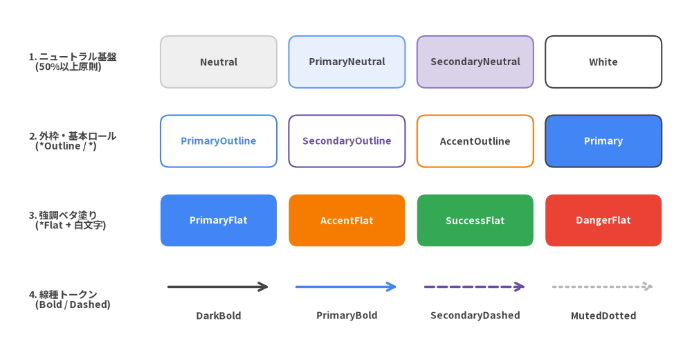
Source Code
from drawlib.canvas import save, setup
from drawlib.lines import line
from drawlib.shapes import rectangle
from drawlib.styles import Styles
from drawlib.text import text
setup(width=144, height=74)
row_hdr = Styles.DarkBold.patch(text_size=10.2, halign="left")
dark_lbl = Styles.DarkBold.patch(text_size=10.0)
white_lbl = Styles.WhiteBold.patch(text_size=10.0)
xs = [45.5, 72.2, 98.9, 125.6]
sw_w, sw_h = 24.2, 10.8
# 1段目: ニュートラル基盤（全図の 50% 以上を構成）
text((6.0, 61.0), "1. ニュートラル基盤\n (50%以上原則)", style=row_hdr)
r1 = [
("Neutral", Styles.Neutral),
("PrimaryNeutral", Styles.PrimaryNeutral),
("SecondaryNeutral", Styles.SecondaryNeutral),
("White", Styles.White),
]
for cx, (name, st) in zip(xs, r1):
rectangle((cx, 61.0), width=sw_w, height=sw_h, style=st.patch(shape_r=1.8), text=name, text_style=dark_lbl)
# 2段目: 外枠線（Outline）と基本ロール
text((6.0, 44.5), "2. 外枠・基本ロール\n (*Outline / *)", style=row_hdr)
r2 = [
("PrimaryOutline", Styles.PrimaryOutline, Styles.PrimaryBold.patch(text_size=10.0)),
("SecondaryOutline", Styles.SecondaryOutline, Styles.SecondaryBold.patch(text_size=10.0)),
("AccentOutline", Styles.AccentOutline, Styles.DarkBold.patch(text_size=10.0)),
("Primary", Styles.Primary, white_lbl),
]
for cx, (name, st, ts) in zip(xs, r2):
rectangle((cx, 44.5), width=sw_w, height=sw_h, style=st.patch(shape_r=1.8), text=name, text_style=ts)
# 3段目: 強調ベタ塗りトークン（*Flat + WhiteBold）
text((6.0, 28.0), "3. 強調ベタ塗り\n (*Flat + 白文字)", style=row_hdr)
r3 = [
("PrimaryFlat", Styles.PrimaryFlat),
("AccentFlat", Styles.AccentFlat),
("SuccessFlat", Styles.SuccessFlat),
("DangerFlat", Styles.DangerFlat),
]
for cx, (name, st) in zip(xs, r3):
rectangle((cx, 28.0), width=sw_w, height=sw_h, style=st.patch(shape_r=1.8), text=name, text_style=white_lbl)
# 4段目: 接続線・境界線種バリエーション
text((6.0, 11.5), "4. 線種トークン\n (Bold / Dashed)", style=row_hdr)
r4 = [
("DarkBold", Styles.DarkBold),
("PrimaryBold", Styles.PrimaryBold),
("SecondaryDashed", Styles.SecondaryDashedBold),
("MutedDotted", Styles.MutedDottedBold),
]
for cx, (name, st) in zip(xs, r4):
line((cx - 10.5, 14.2), (cx + 10.5, 14.2), arrow_head="->", style=st)
text((cx, 8.2), name, style=dark_lbl)
save()
5.1 動的テーマ注入: drawlib.styles と preset_styles の分離
作図スクリプトおよび Markdown の drawlib ブロック内では、常に drawlib.styles から PascalCase の Colors と Styles をインポートします。
from drawlib.styles import Colors, Styles
モジュール名と衝突する小文字の styles / colors は使わず、また各図のコード内で GoogleStyles などの具象プリセットを直接インポートしないのが鉄則です。drawlib.styles はプロジェクト直下の styles.py（および多言語構成における ja/styles.py などの言語別スタイル定義）から動的に注入されるファサードとして機能します。
DefaultStyles/DefaultColors: 6 段階の明度スケール（DefaultStyles1〜DefaultStyles6）を備える標準技術ドキュメント向けテーマ。GoogleStyles/GoogleColors: Google スライド／Workspace 準拠のプレゼンテーション配色（drawlib.tomlのstyle = "google"、本書で採用）。MonochromeStyles/MonochromeColors: モノクロ印刷・学術論文・特許図面に適した 8 階調グレースケールテーマ（さらに W3C 標準 140 色を網羅するCssColorsも利用可能）。
すべてのテーマが同一のトークン名を備えているため、styles.py を 1 箇所変更するだけで全ページの図表テーマを一括で切り替えられます。
5.2 セマンティックトークン体系と「50%+ ニュートラル」原則
読みやすいアーキテクチャ図は、虹色の乱用を避けた明確な視覚階層から生まれます。各テーマは意味的ロールと直交サフィックスの組み合わせで構成されています。
| トークン種別・サフィックス | 代表トークン | 視覚効果とコントラスト規律 |
|---|---|---|
| ニュートラル基盤 | Neutral, PrimaryNeutral, SecondaryNeutral, White |
落ち着いた淡色背景と控えめな枠線。全ノード・カードの 50% 以上をこの層で構成します。 Styles.White 上の文字には必ず text_style=Styles.DarkBold を指定します。 |
| セマンティックロール | Primary, Secondary, Accent, Warning, Success, Danger, Muted |
青（Primary）・紫／藍（Secondary）・橙（Accent）・緑（Success）・赤（Danger）・灰（Muted）に加え、淡色 Primary1〜濃色 Primary6 の明度段階を提供します。 |
外枠線（*Outline / *Solid） |
PrimaryOutline, SecondaryOutline, AccentOutline |
塗りつぶしなしの透過内部＋色付き実線枠（線幅 1.5）。論理ゾーンや軽量バッジに最適です。 |
強調ベタ塗り（*Flat） |
PrimaryFlat, AccentFlat, SuccessFlat, DangerFlat |
枠線なしの高彩度ベタ塗り（shape_line_width=0）。図内で 1〜2 個の主役要素に限定し、必ず Styles.WhiteBold の白太字と組み合わせます。 |
| 太さ・線種サフィックス | *Bold, *Thin, *Dashed, *Dotted |
線幅とフォントウェイト（Bold=2.5・Thin=0.75、単体ロール Styles.Light もあり）や破線・点線（MutedDashed・SecondaryDashedBold・PrimaryDotted）を切り替えます。 |
5.3 イミュータブルな .patch()・.patch_font() と多言語フォント
すべての Style および Color インスタンスは**完全にイミュータブル（不変）**です。角丸・線幅・文字サイズ・揃え位置・不透明度を調整する際は、素の Style(...) をゼロから生成するのではなく、必ず既存の Styles.* トークンに対して .patch(...) を呼び出します。これにより、フォントファミリーやアイコンウェイト、テーマ切り替え時の互換性が安全に継承されます。
from drawlib.canvas import save, setup
from drawlib.fonts import FontFile, FontJapanese, FontMonoSpace
from drawlib.preset_styles import GoogleStyles
from drawlib.shapes import rectangle
from drawlib.styles import Colors, Styles
# ja/styles.py で用いられる言語別フォント一括差し替えパターン:
JaStyles = GoogleStyles().patch_font(
regular=FontJapanese.SANSSERIF_REGULAR,
bold=FontJapanese.SANSSERIF_BOLD,
thin=FontJapanese.SANSSERIF_THIN,
)
# ローカルの .ttf / .otf ファイルも FontFile("_assets/brand.ttf") で読み込み可能
_ = FontFile
setup(width=120, height=36)
card_style = Styles.PrimaryNeutral.patch(
shape_r=2.8,
shape_line_width=2.0,
alpha=0.95,
)
mono_label = Styles.DarkBold.patch(
text_font=FontMonoSpace.ROBOTO_MONO_BOLD,
text_size=11.0,
halign="center",
valign="center",
)
glass_tint = Colors.Primary.patch(alpha=0.15)
_ = (JaStyles, glass_tint)
rectangle((60, 18), width=56, height=18, style=card_style, text="api.internal:8443", text_style=mono_label)
save()
drawlib.fonts の内蔵フォント群は初回参照時に自動ダウンロード＆ローカルキャッシュされ、OS ごとのフォント差異による文字化け（豆腐化）を根絶します（オフライン環境では uv run drawlib cache download --all で事前取得可能）。
- ユニバーサル・欧文フォント:
Font（欧文＋CJK を網羅する Noto Sans / Serif）、FontSansSerif（Lato・Montserrat・Poppins 等）、FontSerif（Merriweather・Playfair Display 等）、FontRoboto（Roboto・Condensed・Slab）。 - 等幅コード・数値フォント:
FontMonoSpace（ROBOTO_MONO_REGULAR・SOURCECODEPRO_REGULAR・日本語等幅SOURCEHANCODEJP_REGULAR）およびFontSourceCode。 - CJK・地域言語・カスタムフォント:
FontJapanese・FontChinese（簡体字／繁体字／香港）・FontKorean・FontArabic・FontThai・FontBrahmic、および任意の.ttf/.otfを読み込むFontFile("_assets/custom.ttf")。
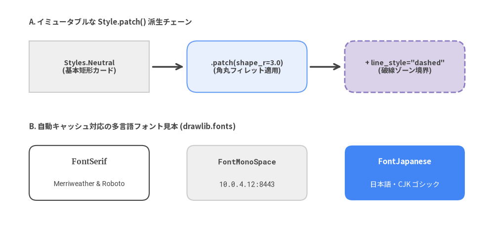
Source Code
from drawlib.canvas import save, setup
from drawlib.fonts import FontJapanese, FontMonoSpace, FontRoboto, FontSerif
from drawlib.lines import line
from drawlib.shapes import rectangle
from drawlib.styles import Styles
from drawlib.text import text
setup(width=144, height=66)
sec_hdr = Styles.DarkBold.patch(text_size=10.8, halign="left")
xs = [26.0, 72.0, 118.0]
# 上段: .patch() による段階的スタイル変換
text((8.5, 59.5), "A. イミュータブルな Style.patch() 派生チェーン", style=sec_hdr)
rectangle(
(xs[0], 46.5),
width=35.0,
height=15.0,
style=Styles.Neutral,
text="Styles.Neutral\n(基本矩形カード)",
text_style=Styles.DarkBold.patch(text_size=10.2),
)
line((44.5, 46.5), (53.5, 46.5), arrow_head="->", style=Styles.DarkBold)
rectangle(
(xs[1], 46.5),
width=35.0,
height=15.0,
style=Styles.PrimaryNeutral.patch(shape_r=3.0),
text=".patch(shape_r=3.0)\n(角丸フィレット適用)",
text_style=Styles.DarkBold.patch(text_size=10.2),
)
line((90.5, 46.5), (99.5, 46.5), arrow_head="->", style=Styles.DarkBold)
rectangle(
(xs[2], 46.5),
width=35.0,
height=15.0,
style=Styles.SecondaryNeutral.patch(
shape_r=3.0,
shape_line_style="dashed",
shape_line_width=2.0,
),
text='+ line_style="dashed"\n(破線ゾーン境界)',
text_style=Styles.DarkBold.patch(text_size=10.2),
)
# 下段: 内蔵フォント見本
text((8.5, 29.0), "B. 自動キャッシュ対応の多言語フォント見本 (drawlib.fonts)", style=sec_hdr)
rectangle((xs[0], 15.5), width=35.0, height=16.0, style=Styles.White.patch(shape_r=2.2))
text((xs[0], 18.8), "FontSerif", style=Styles.DarkBold.patch(text_font=FontSerif.MERRIWEATHER_BOLD, text_size=11.0))
text((xs[0], 12.2), "Merriweather & Roboto", style=Styles.Dark.patch(text_font=FontRoboto.ROBOTO_REGULAR, text_size=10.0))
rectangle((xs[1], 15.5), width=35.0, height=16.0, style=Styles.Neutral.patch(shape_r=2.2))
text((xs[1], 18.8), "FontMonoSpace", style=Styles.DarkBold.patch(text_font=FontMonoSpace.ROBOTO_MONO_BOLD, text_size=10.8))
text((xs[1], 12.2), "10.0.4.12:8443", style=Styles.Dark.patch(text_font=FontMonoSpace.ROBOTO_MONO_REGULAR, text_size=10.0))
rectangle((xs[2], 15.5), width=35.0, height=16.0, style=Styles.PrimaryFlat.patch(shape_r=2.2))
text((xs[2], 18.8), "FontJapanese", style=Styles.WhiteBold.patch(text_font=FontJapanese.SANSSERIF_BOLD, text_size=11.0))
text((xs[2], 12.2), "日本語・CJK ゴシック", style=Styles.White.patch(text_font=FontJapanese.SANSSERIF_REGULAR, text_size=10.2))
save()
6. 34種のアイコンスイートと画像アセット処理
システム構成図や技術ドキュメントに直感的な UI アイコン・公式クラウドサービスロゴ・鮮明なラスター画像を組み合わせることで、図解の情報伝達力は飛躍的に高まります。Drawlib はオンデマンド自動キャッシュ対応の全 34 種の内蔵アイコンスイート（drawlib.icons）と、非破壊画像変換およびサブキャンバス合成エンジン（drawlib.images）を標準搭載しています。
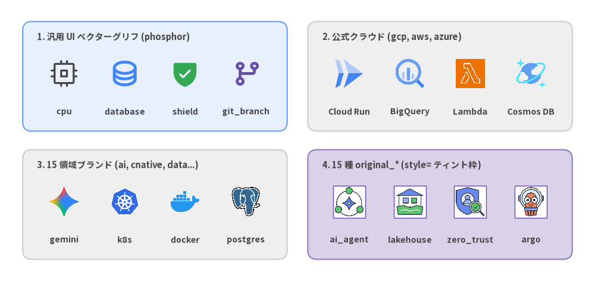
Source Code
from drawlib.canvas import save, setup
from drawlib.icons import (
ai,
aws,
azure,
cnative,
data,
gcp,
original_ai,
original_cnative,
original_data,
original_security,
phosphor,
)
from drawlib.shapes import rectangle
from drawlib.styles import Colors, Styles
from drawlib.text import text
setup(width=144, height=68)
hdr = Styles.DarkBold.patch(text_size=10.5, halign="left")
lbl = Styles.DarkBold.patch(text_size=10.0)
xs_l = [15.5, 30.2, 44.8, 59.5]
xs_r = [84.5, 99.2, 113.8, 128.5]
# 4 つのニュートラル分類カード
rectangle((37.5, 49.5), width=64.0, height=26.5, style=Styles.PrimaryNeutral.patch(shape_r=2.2))
rectangle((106.5, 49.5), width=64.0, height=26.5, style=Styles.Neutral.patch(shape_r=2.2))
rectangle((37.5, 18.5), width=64.0, height=26.5, style=Styles.Neutral.patch(shape_r=2.2))
rectangle((106.5, 18.5), width=64.0, height=26.5, style=Styles.SecondaryNeutral.patch(shape_r=2.2))
# 1. Phosphor 汎用 UI ベクターグリフ
text((9.0, 59.0), "1. 汎用 UI ベクターグリフ (phosphor)", style=hdr)
phosphor.cpu((xs_l[0], 50.2), width=7.2, style=Styles.Dark)
phosphor.database((xs_l[1], 50.2), width=7.2, style=Styles.PrimaryBold)
phosphor.shield_check((xs_l[2], 50.2), width=7.2, style=Styles.Success.patch(icon_style="fill"))
phosphor.git_branch((xs_l[3], 50.2), width=7.2, style=Styles.SecondaryBold)
for cx, name in zip(xs_l, ["cpu", "database", "shield", "git_branch"]):
text((cx, 41.0), name, style=lbl)
# 2. 公式クラウドスイート (gcp, aws, azure)
text((78.0, 59.0), "2. 公式クラウド (gcp, aws, azure)", style=hdr)
gcp.cloud_run((xs_r[0], 50.2), width=7.8, style=Styles.Primary)
gcp.bigquery((xs_r[1], 50.2), width=7.8, style=Styles.Primary)
aws.aws_lambda((xs_r[2], 50.2), width=7.8, style=Styles.Primary)
azure.cosmos_db((xs_r[3], 50.2), width=7.8, style=Styles.Primary)
for cx, name in zip(xs_r, ["Cloud Run", "BigQuery", "Lambda", "Cosmos DB"]):
text((cx, 41.0), name, style=lbl)
# 3. 15 領域のマルチブランドスイート (ai .. workspace)
text((9.0, 28.0), "3. 15 領域ブランド (ai, cnative, data...)", style=hdr)
ai.gemini((xs_l[0], 19.2), width=7.8, style=Styles.Primary)
cnative.kubernetes((xs_l[1], 19.2), width=7.8, style=Styles.Primary)
cnative.docker((xs_l[2], 19.2), width=7.8, style=Styles.Primary)
data.postgresql((xs_l[3], 19.2), width=7.8, style=Styles.Primary)
for cx, name in zip(xs_l, ["gemini", "k8s", "docker", "postgres"]):
text((cx, 10.0), name, style=lbl)
# 4. style= による背景ティント＆枠線付き 15 種 original_* スイート
text((78.0, 28.0), "4. 15 種 original_* (style= ティント枠)", style=hdr)
tinted = Styles.Secondary.patch(
image_tint_color=Colors.White,
image_border_color=Colors.Secondary,
image_border_width=1.0,
)
original_ai.ai_agent((xs_r[0], 19.2), width=7.8, style=tinted)
original_data.data_lakehouse((xs_r[1], 19.2), width=7.8, style=tinted)
original_security.zero_trust((xs_r[2], 19.2), width=7.8, style=tinted)
original_cnative.argo((xs_r[3], 19.2), width=7.8, style=tinted)
for cx, name in zip(xs_r, ["ai_agent", "lakehouse", "zero_trust", "argo"]):
text((cx, 10.0), name, style=lbl)
save()
6.1 全 34 種の内蔵アイコンスイート体系
drawlib.icons のすべてのアイコン関数は、基本図形と共通の中心アンカー xy = (cx, cy)・1:1 正方形サイズ width=・必須キーワード引数 *, style: Style に統一されています。各スイートは初回使用時に自動ダウンロード＆キャッシュされます（オフライン CI 用に uv run drawlib cache download --all で一括事前取得も可能）。
| ティア | スイート構成（全 34 種） | 描画方式と style= カスタマイズ |
|---|---|---|
| 1. 汎用 UI ベクターアイコン (1) | phosphor（1,500 種以上＋低レベル font_icon） |
style.icon_style（"thin", "light", "regular", "bold", "fill" または Styles.*Bold / *Flat）の 5 ウェイトに対応する鮮明なベクターフォントグリフ。style.icon_color で直接着色可能。 |
| 2. 公式クラウドスイート (3) | gcp, aws, azure |
Google Cloud・AWS・Microsoft Azure の公式サービスアイコン（512x512 RGBA）。 |
| 3. 領域別マルチブランド (15) | ai, business, client, cloud, cnative, code, data, devops, facility, itservice, network, security, server, social, workspace |
生成 AI・CI/CD＆DevOps・コンテナ／Kubernetes（cnative）・DB／データ基盤（data）・フロントエンド（client）・サーバー／設備・ネットワーク・セキュリティ等の主要製品ロゴを網羅。 |
4. original_* 2D スイート (15) |
original_ai 〜 original_workspace |
各ブランドを統一トーンのフラット 2D パステル調に揃えたツイン版に加え、ベンダー中立な概念アイコン（original_ai.ai_agent・original_data.data_lakehouse・original_security.zero_trust 等）を収録。style= で背景ティント（image_tint_color）・外枠（image_border_*）・回転・透過を指定でき、Dimage.colorize() で単色リカラーも可能。 |
6.2 単体アイコン描画関数と高レベル Enum トークンの使い分け
アイコンの利用方法は、自由配置キャンバスか高レベル構成図かに応じて 2 通りのイディオムを使い分けます。
- 単体関数の直接呼び出し（
drawlib.icons.<suite>.<name>）:phosphor.cpu((25, 20), width=8.0, style=Styles.PrimaryBold)（またはStyles.Accent.patch(icon_style="fill")）やgcp.cloud_run((60, 20), width=9.0, style=Styles.Primary)のように、キャンバス上の中心座標(cx, cy)へ直接描画します。 - 型安全な Enum トークン（
PhosphorIcon・GcpIcon・AwsIcon・CnativeIcon等）: 高レベル構成図モジュール（drawlib.diagrams.architecture・drawlib.diagrams.sequence）やアイコン対応SmartArtsでは、StrEnumトークンをNode(..., icon=GcpIcon.CLOUD_RUN)のように渡すだけでアイコンとラベルの余白・整列が自動計算されます。
from drawlib.canvas import save, setup
from drawlib.diagrams.architecture import ArchitectureDiagram, GcpIcon, Node, PhosphorIcon
from drawlib.icons import phosphor
from drawlib.styles import Styles
setup(width=120, height=40)
# 1. 中心座標 (cx, cy) を指定する単体アイコン描画
phosphor.sparkle((16, 20), width=7.5, style=Styles.Accent.patch(icon_style="fill"))
# 2. 高レベル ArchitectureDiagram への Enum トークン指定
arch = ArchitectureDiagram(
node_style=Styles.PrimaryBold,
node_text_style=Styles.DarkBold.patch(text_size=11.0),
edge_style=Styles.DarkBold,
edge_text_style=Styles.DarkBold.patch(text_size=10.0),
node_card_style=Styles.Neutral,
)
gw = arch.add(Node("境界ゲートウェイ", width=34, height=16, icon=PhosphorIcon.SHIELD_CHECK), xy=(52, 20))
svc = arch.add(
Node(
"Cloud Run API",
width=34,
height=16,
icon=GcpIcon.CLOUD_RUN,
card_style=Styles.PrimaryNeutral,
),
xy=(98, 20),
)
arch.connect(gw, svc, arrow="->")
arch.draw()
save()
6.3 ラスター画像（image）・Dimage 変換・サブキャンバス合成
画面キャプチャやマスコット画像、入れ子のミニ図解を扱うために、drawlib.images は 3 つの機能を提供します。
image(xy, width=..., image="_assets/linux.png", style=...): アスペクト比を維持したまま中心座標xy = (cx, cy)に画像を配置します。移植性を保つため、画像ファイルは常に_assets/配下に置き相対パス（"_assets/linux.png"）で参照します。style.patch(angle=..., alpha=..., image_tint_color=..., image_border_width=..., image_border_color=..., image_border_style=...)で回転・透過背景の塗りつぶし・枠線装飾を行えます。- イミュータブルな
Dimage変換チェーン:Dimage("_assets/linux.png")で画像をラップすると、元画像を破壊せずにメソッドチェーンで加工できます。- 幾何変換・透過処理:
.resize(width, height)、左下ピクセルを(0, 0)とする.crop(x, y, width, height)、左右反転.mirror()、上下反転.flip()、余白自動除去.trim()、背景透過化.make_transparent(color="auto", tolerance=15)、透過部塗りつぶし.fill(color)、不透明度上限.alpha(0.8)。 - 色調・フィルタ処理:
.grayscale()・.sepia()・.colorize(from_black_to=..., from_white_to=...)・.brightness(0.9)・.invert()・.posterize(num_colors=4)・.mosaic(block_size=16)・.blur()・輪郭抽出.line_extraction()。
- 幾何変換・透過処理:
- インメモリ・サブキャンバス合成（
get_dimage_from_code）: 独立した Python 作図コード文字列を隔離プロセスでレンダリングし、メモリ上のDimageとして取得します。親キャンバスの状態に影響を与えずにミニバッジや Picture-in-Picture 図解を自在に合成できます。
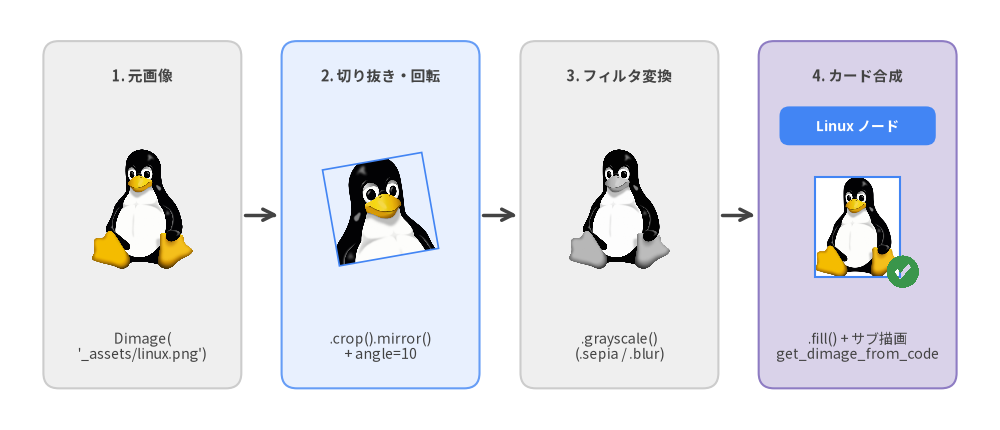
Source Code
from drawlib.canvas import save, setup
from drawlib.images import Dimage, get_dimage_from_code, image
from drawlib.lines import line
from drawlib.shapes import rectangle
from drawlib.styles import Colors, Styles
from drawlib.text import text
setup(width=144, height=62)
base = Dimage("_assets/linux.png")
xs = [20.5, 54.8, 89.2, 123.5]
card_w, card_h, cy = 28.5, 50.0, 31.0
title_st = Styles.DarkBold.patch(text_size=10.5)
code_st = Styles.Dark.patch(text_size=10.0)
# ステップ 1: 元のラスター画像アセット
rectangle((xs[0], cy), width=card_w, height=card_h, style=Styles.Neutral.patch(shape_r=2.2))
text((xs[0], 51.0), "1. 元画像", style=title_st)
image((xs[0], 31.8), width=14.5, image=base)
text((xs[0], 12.0), "Dimage(\n'_assets/linux.png')", style=code_st)
# ステップ 2: 左下基準 crop + 左右反転 mirror + 角度付き配置
rectangle((xs[1], cy), width=card_w, height=card_h, style=Styles.PrimaryNeutral.patch(shape_r=2.2))
text((xs[1], 51.0), "2. 切り抜き・回転", style=title_st)
cropped = base.crop(110, 340, 455, 440).mirror()
image(
(xs[1], 31.8),
width=14.5,
image=cropped,
style=Styles.Primary.patch(
angle=10,
image_border_width=1.2,
image_border_color=Colors.Primary,
),
)
text((xs[1], 12.0), ".crop().mirror()\n+ angle=10", style=code_st)
# ステップ 3: グレースケール等の色調フィルタ
rectangle((xs[2], cy), width=card_w, height=card_h, style=Styles.Neutral.patch(shape_r=2.2))
text((xs[2], 51.0), "3. フィルタ変換", style=title_st)
image((xs[2], 31.8), width=14.5, image=base.grayscale())
text((xs[2], 12.0), ".grayscale()\n(.sepia / .blur)", style=code_st)
# ステップ 4: スタイル付きカードへの埋め込み + サブキャンバス合成
rectangle((xs[3], cy), width=card_w, height=card_h, style=Styles.SecondaryNeutral.patch(shape_r=2.2))
text((xs[3], 51.0), "4. カード合成", style=title_st)
rectangle(
(xs[3], 43.8),
width=22.5,
height=5.6,
style=Styles.PrimaryFlat.patch(shape_r=1.4),
text="Linux ノード",
text_style=Styles.WhiteBold.patch(text_size=10.0),
)
framed = base.resize(270, 320).fill(Colors.White)
image(
(xs[3], 29.2),
width=12.2,
image=framed,
style=Styles.Primary.patch(
image_border_width=1.5,
image_border_color=Colors.Primary,
),
)
sub_badge = get_dimage_from_code("""
from drawlib.canvas import setup
from drawlib.shapes import checkmark, circle
from drawlib.styles import Styles
setup(width=36, height=36)
circle((18, 18), radius=15, style=Styles.SuccessFlat)
checkmark((18, 18), width=15, style=Styles.WhiteFlat)
""").make_transparent(color="auto", tolerance=15)
image((xs[3] + 6.5, 22.8), width=5.6, image=sub_badge)
text((xs[3], 12.0), ".fill() + サブ描画\nget_dimage_from_code", style=code_st)
# 各ステージ間の矢印コネクタ
for i in range(3):
line((xs[i] + 14.8, cy), (xs[i + 1] - 14.8, cy), arrow_head="->", style=Styles.DarkBold)
save()
7. SmartArts：18種の構造化ビジュアルコンポーネント
業務フロー図や比較表のたびに矩形やテキストの座標を手計算する必要はありません。drawlib.smartarts は、余白・整列・枠線・タイポグラフィを自動計算する 全18種の高レベル構造化コンポーネント を提供します。すべての SmartArt が GoogleStyles のデザイントークンと同一キャンバスを共有するため、KPI サマリー・パイプライン・SLA 比較表・ディレクトリツリーを1枚の図内で自在に組み合わせられます。
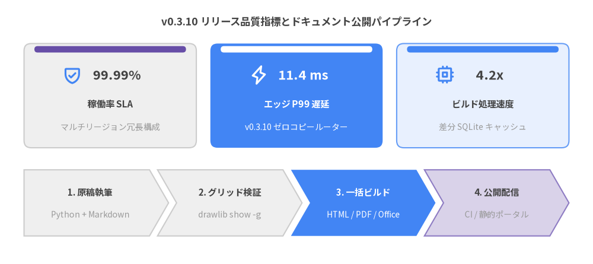
Source Code
from drawlib.canvas import save, setup
from drawlib.icons import phosphor
from drawlib.smartarts import ChevronProcess, KpiCards
from drawlib.styles import Styles
from drawlib.text import text
setup(width=148, height=66)
text(
(74.0, 60.5),
"v0.3.10 リリース品質指標とドキュメント公開パイプライン",
style=Styles.DarkBold.patch(text_size=12.5),
)
kpi = KpiCards(
style=Styles.Neutral.patch(shape_r=1.8),
metric_style=Styles.DarkBold.patch(text_size=15.5),
text_style=Styles.DarkBold.patch(text_size=11.0),
description_style=Styles.Muted.patch(text_size=10.0),
accent_style=Styles.SecondaryFlat,
icon_style=Styles.PrimaryBold,
accent_position="top_bar",
metric_layout="top_stack",
spacing=3.5,
)
kpi.add(
"99.99%",
"稼働率 SLA",
"マルチリージョン冗長構成",
icon=phosphor.shield_check,
)
kpi.add(
"11.4 ms",
"エッジ P99 遅延",
"v0.3.10 ゼロコピールーター",
icon=phosphor.lightning,
style=Styles.PrimaryFlat.patch(shape_r=1.8),
metric_style=Styles.WhiteBold.patch(text_size=15.5),
text_style=Styles.WhiteBold.patch(text_size=11.0),
description_style=Styles.White.patch(text_size=10.0),
accent_style=Styles.WhiteFlat,
icon_style=Styles.WhiteBold,
)
kpi.add(
"4.2x",
"ビルド処理速度",
"差分 SQLite キャッシュ",
icon=phosphor.cpu,
style=Styles.PrimaryNeutral.patch(shape_r=1.8),
accent_style=Styles.PrimaryFlat,
)
kpi.draw(xy=(6.0, 29.0), width=136.0, height=26.0, columns=3)
pipeline = ChevronProcess(
style=Styles.Neutral,
text_style=Styles.DarkBold.patch(text_size=10.8),
description_style=Styles.Muted.patch(text_size=10.0),
corner_angle=60.0,
spacing=2.0,
flat_left_end=True,
)
pipeline.add("1. 原稿執筆", description="Python + Markdown")
pipeline.add("2. グリッド検証", description="drawlib show -g")
pipeline.add(
"3. 一括ビルド",
description="HTML / PDF / Office",
style=Styles.PrimaryFlat,
text_style=Styles.WhiteBold.patch(text_size=10.8),
description_style=Styles.White.patch(text_size=10.0),
)
pipeline.add(
"4. 公開配信",
description="CI / 静的ポータル",
style=Styles.SecondaryNeutral,
)
pipeline.draw(xy=(6.0, 7.0), width=136.0, height=16.5)
save()
7.1 全18種 SmartArts カタログと基準座標（アンカー）
Drawlib は左下 (0, 0)・上向き +Y のデカルト座標系を採用しているため、各 SmartArt の .draw(xy=...) がどの基準点（アンカー）を受け取るかを把握しておけば、試行錯誤なしで一発で正確な位置に配置できます。
- 左下アンカー
Bottom-Left (x0, y0): 大半のボックス型コンポーネント（ChevronProcess、KpiCards、GeoMap、*Calendarなど）は左下(x0, y0)を起点に右方向（+X）・上方向（+Y）へ展開します。 - 左上アンカー
Top-Left (x0, y_top): 上から下へ読む構造のコンポーネント（Table、BulletPoints、SourceCode、TreeNode）は左上(x0, y_top)を起点に下方向（-Y）へ伸びるため、上側のy_top座標を渡します。 - 中央アンカー
Center (cx, cy): 放射状コンポーネント（Cycle、MindMapNode）は中心(cx, cy)から周囲へ展開します。
7.1.1 プロセス・サイクル・タイムライン
| コンポーネント | 要素・補助モデル | .draw(xy=...) 既定アンカー |
主なエンジニアリング用途 |
|---|---|---|---|
ChevronProcess |
ChevronItem |
Bottom-Left (align="bottom_left") |
CI/CD パイプライン、ETL 処理段階、段階的移行フロー（flat_left_end=True） |
Cycle |
CycleItem, CycleCenter |
Center (align="center") |
PDCA 改善ループ、トークン更新サイクル、SRE 運用フィードバック |
Roadmap |
RoadmapItem |
Bottom-Left (align="bottom_left") |
四半期リリースマイルストーン、移行ロードマップ、障害時系列の記録 |
7.1.2 カード・グリッド・サマリー
| コンポーネント | 要素・補助モデル | .draw(xy=...) 既定アンカー |
主なエンジニアリング用途 |
|---|---|---|---|
KpiCards (KpiCard) |
KpiCardItem |
Bottom-Left (align="bottom_left") |
SLA 目標値、レイテンシ指標、ベンチマーク結果のエグゼクティブサマリー |
CardList |
CardListItem |
Bottom-Left (align="bottom_left") |
縦並び・横並びの機能カード一覧（オプションで -> 接続矢印付き） |
BoxList |
BoxListItem |
Bottom-Left (align="bottom_left") |
密着配置のサービス群、プロトコルヘッダ構造、ステータスバッジ列 |
GridLayout |
GridItem |
Bottom-Left (align="bottom_left") |
行・列結合に対応した多層アーキテクチャマトリクス（row=0 が最下段） |
Pyramid |
PyramidItem |
Bottom-Left (align="bottom_left") |
テストピラミッド、記憶階層モデル、多層防御セキュリティ構造 |
Panel |
— | Bottom-Left (align="bottom_left") |
タイトル付き枠コンテナ（"filled" / "underline" / "floating" / "window"） |
7.1.3 テーブル・箇条書き・ソースコード
| コンポーネント | 要素・補助モデル | .draw(xy=...) 既定アンカー |
主なエンジニアリング用途 |
|---|---|---|---|
Table |
— | Top-Left (align="top_left") |
サービス SLA 一覧表、機能比較マトリクス、クォータ仕様表（draw_flexible） |
BulletPoints |
BulletPointItem |
Top-Left (固定 (x, y)) |
設計レビュー要点、チェックリスト、スライド内の構造化箇条書き |
SourceCode |
SourceCodeStyles, sourcecode |
Top-Left (align="top_left") |
図内に直接埋め込む構文ハイライト付き Python / YAML / JSON コード枠 |
7.1.4 ツリー階層・マインドマップ
| コンポーネント | 要素・補助モデル | .draw(xy=...) 既定アンカー |
主なエンジニアリング用途 |
|---|---|---|---|
TreeNode |
— | Top-Left (固定 (x, y)) |
モノレポのディレクトリ構成、パッケージ階層、CLI サブコマンド体系 |
MindMapNode |
— | Center (固定 (cx, cy)) |
上下左右4方向に展開するシステム分類図、ドメイン分割、組織図 |
7.1.5 地図・カレンダースケジュール
| コンポーネント | 要素・補助モデル | .draw(xy=...) 既定アンカー |
主なエンジニアリング用途 |
|---|---|---|---|
GeoMap |
— | Bottom-Left (align="bottom_left") |
マルチリージョン拠点マップ（World / Countries / Cities、lonlat_to_xy） |
MonthCalendar |
CalendarItem |
Bottom-Left (align="bottom_left") |
7列の月間・複数週リリース計画カレンダー（ISO 8601 "YYYY-MM-DD"） |
WeekCalendar |
CalendarItem |
Bottom-Left (align="bottom_left") |
時間軸付きのスプリント計画・メンテナンス枠（"YYYY-MM-DD HH:MM"） |
DayCalendar |
CalendarItem |
Bottom-Left (align="bottom_left") |
1日単位のタイムライン、障害対応・切り替え作業ランブック |
ヒント — Top-Left 系と Bottom-Left 系を横並びで揃える計算式: 高さ
HのTableやTreeNodeを、下端y_bottomの Bottom-Left コンポーネントと上端揃えにするには、xy=(x0, y_bottom + H)を渡します（TableとSourceCodeではalign="bottom_left"の直接指定も可能です）。
7.2 左上アンカーの組み合わせ：Table と TreeNode の並列配置
Table と TreeNode はどちらも 左上 Top-Left (x0, y_top) を起点とするため、仕様表とディレクトリ構成を横並びに配置する設計図で抜群の相性を発揮します。
Tableのセルスタイル適用順序ルール:Tableは登録順にセル装飾を上書き評価します。0行目（ヘッダー）は偶数インデックスであるため、ゼブラ配色を行うset_style_cell_evenodd(...)を 先に 呼び出し、その後にset_style_cell_header(...)でヘッダー行を再設定し、最後にset_style_cell(..., rows=[r], columns=[c])で注目セルを強調します。TreeNodeのルート継承とアイコン登録: ルートTreeNodeに5つのレイアウト設定（text_style、line_style、line_horizontal_margin、line_horizontal_length、line_vertical_margin）を指定すると子孫ノードへ自動継承されます。TreeNode.register_drawing_item(...)と.set_drawing_item(name)でphosphorアイコンを付与でき、構築済みノードはchildren=[...]、文字列からの動的追加はnode.add("filename.py")を使います。
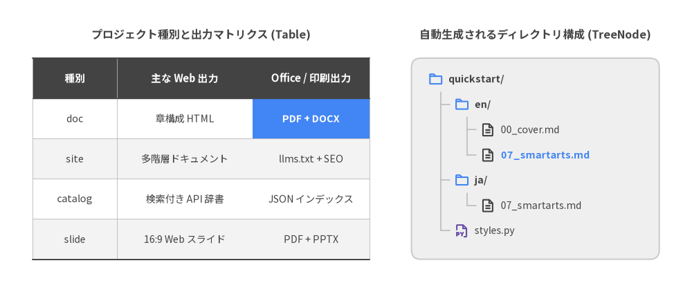
Source Code
from drawlib.canvas import save, setup
from drawlib.icons import phosphor
from drawlib.shapes import rectangle
from drawlib.smartarts import Table, TreeNode
from drawlib.styles import Colors, Styles
from drawlib.text import text
setup(width=148, height=64)
text(
(43.0, 56.5),
"プロジェクト種別と出力マトリクス (Table)",
style=Styles.DarkBold.patch(text_size=11.5),
)
text(
(114.5, 56.5),
"自動生成されるディレクトリ構成 (TreeNode)",
style=Styles.DarkBold.patch(text_size=11.5),
)
table = Table(
cell_style=Styles.White,
text_style=Styles.Dark.patch(text_size=10.2),
header_cell_style=Styles.DarkFlat,
header_text_style=Styles.WhiteBold.patch(text_size=10.5),
border_style=Styles.MutedThin,
)
table.set_style_cell_evenodd(
even_color=Colors.Gray1,
even_text_style=Styles.Dark.patch(text_size=10.2),
odd_color=Colors.White,
odd_text_style=Styles.Dark.patch(text_size=10.2),
)
table.set_style_cell_header(
background_color=Colors.Gray8,
text_style=Styles.WhiteBold.patch(text_size=10.5),
)
table.set_style_cell(
background_color=Colors.Primary,
text_style=Styles.WhiteBold.patch(text_size=10.2),
rows=[1],
columns=[2],
)
table.set_style_border(
top=Styles.DarkBold.patch(line_width=1.4),
top2=Styles.DarkBold.patch(line_width=1.0),
bottom=Styles.DarkBold.patch(line_width=1.4),
between_rows=Styles.MutedThin.patch(line_width=0.6),
)
matrix = [
["種別", "主な Web 出力", "Office / 印刷出力"],
["doc", "章構成 HTML", "PDF + DOCX"],
["site", "多階層ドキュメント", "llms.txt + SEO"],
["catalog", "検索付き API 辞書", "JSON インデックス"],
["slide", "16:9 Web スライド", "PDF + PPTX"],
]
table.draw_flexible(
xy=(7.0, 51.5),
column_widths=[18.0, 29.0, 25.0],
row_heights=[8.6, 8.6, 8.6, 8.6, 8.6],
data=matrix,
align="top_left",
)
rectangle(
(114.5, 30.0),
width=53.0,
height=43.0,
style=Styles.Neutral.patch(shape_r=2.0),
)
TreeNode.register_drawing_item(
name="ch07_dir_ja",
location="before",
padding_width=4.4,
function=phosphor.folder,
style=Styles.PrimaryBold,
args={"width": 3.2},
)
TreeNode.register_drawing_item(
name="ch07_py_ja",
location="before",
padding_width=4.4,
function=phosphor.file_py,
style=Styles.SecondaryBold,
args={"width": 3.2},
)
TreeNode.register_drawing_item(
name="ch07_md_ja",
location="before",
padding_width=4.4,
function=phosphor.file_text,
style=Styles.DarkBold,
args={"width": 3.2},
)
root = TreeNode(
"quickstart/",
text_style=Styles.DarkBold.patch(text_size=10.2),
line_style=Styles.Muted.patch(line_width=1.1),
line_horizontal_margin=2.8,
line_horizontal_length=2.8,
line_vertical_margin=5.4,
children=[
TreeNode(
"en/",
text_style=Styles.DarkBold.patch(text_size=10.2),
children=[
TreeNode("00_cover.md", text_style=Styles.Dark.patch(text_size=10.0)).set_drawing_item("ch07_md_ja"),
TreeNode("07_smartarts.md", text_style=Styles.PrimaryBold.patch(text_size=10.0)).set_drawing_item("ch07_md_ja"),
],
).set_drawing_item("ch07_dir_ja"),
TreeNode(
"ja/",
text_style=Styles.DarkBold.patch(text_size=10.2),
children=[
TreeNode("07_smartarts.md", text_style=Styles.Dark.patch(text_size=10.0)).set_drawing_item("ch07_md_ja"),
],
).set_drawing_item("ch07_dir_ja"),
],
).set_drawing_item("ch07_dir_ja")
root.add("styles.py", text_style=Styles.Dark.patch(text_size=10.0)).set_drawing_item("ch07_py_ja")
root.draw(xy=(91.5, 47.0))
save()
7.3 show=False による段階的ビルドとアニメーション対応
状態を持つすべての SmartArt は4段階のライフサイクル（インスタンス生成 -> .add() で要素登録 -> .items / .children の状態変更 -> .draw() で描画）に従います。登録された各アイテムおよびノード（ChevronItem、KpiCardItem、CardListItem、BoxListItem、CycleItem、GridItem、PyramidItem、RoadmapItem、BulletPointItem、CalendarItem、TreeNode、MindMapNode）は共通して show: bool = True 属性を備えています。
item.show = False を設定（または .add(..., show=False) を指定）すると、他の兄弟要素の幅・列位置・円周角度・行間隔を一切変化させずに該当要素だけを非表示にできます。これにより、16:9 スライドの段階表示や drawlib.anim によるマルチフレームアニメーションでも、前段の要素がガタつくことなく滑らかにステップを追加できます。
from drawlib.canvas import save, setup
from drawlib.smartarts import ChevronProcess
from drawlib.styles import Styles
setup(width=120, height=32)
flow = ChevronProcess(
style=Styles.Neutral,
text_style=Styles.DarkBold.patch(text_size=10.5),
description_style=Styles.Muted.patch(text_size=10.0),
flat_left_end=True,
)
flow.add("1. 収集", description="Parquet ストリーム")
flow.add(
"2. 検証",
description="スキーマ検査",
style=Styles.PrimaryFlat,
text_style=Styles.WhiteBold.patch(text_size=10.5),
description_style=Styles.White.patch(text_size=10.0),
)
# フレーム1では非表示にしても、ステップ1・2は4列分の正確な幅と座標を維持
step3 = flow.add("3. 変換", description="ベクトル結合", show=False)
step4 = flow.add("4. 配信", description="低遅延 API", show=False)
flow.draw(xy=(8.0, 8.0), width=104.0, height=16.0)
save()
各 SmartArt の詳細なコンストラクタ引数は、uv run drawlib rules show lib-smartarts-overview（または lib-smartarts-calendar、lib-smartarts-geomap、lib-smartarts-source-code などの個別トピック）でいつでも参照できます。
8. 定量チャート：10種の純粋 Python グラフ
技術白書・ベンチマークレポート・設計レビューでは、構成図だけでなく定量的なデータによる裏付けが不可欠です。drawlib.charts は Drawlib の描画エンジン上に構築された 全10種の純粋 Python チャート を提供します。すべてのチャートが 左下アンカー Bottom-Left (x0, y0)（align="bottom_left"）を既定としているため、SmartArts・アイコン・注釈矢印と同一キャンバス上で精密に組み合わせて配置できます。
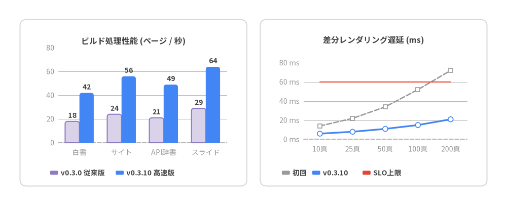
Source Code
from drawlib.canvas import save, setup
from drawlib.charts.bar import BarChart
from drawlib.charts.line import LineChart
from drawlib.shapes import rectangle
from drawlib.styles import Colors, Styles
setup(width=152, height=62)
card_bg = Styles.White.patch(shape_r=2.0, shape_line_color=Colors.Gray3)
rectangle((40.0, 31.0), width=68.0, height=50.0, style=card_bg)
rectangle((112.0, 31.0), width=68.0, height=50.0, style=card_bg)
bar = BarChart(
axis_line_style=Styles.MutedDashed,
categories=["白書", "サイト", "API辞書", "スライド"],
width=62.0,
height=38.0,
bar_mode="group",
bar_width_ratio=0.68,
bar_r=0.8,
axis_text_style=Styles.Muted.patch(text_size=10.0),
grid_style=Styles.MutedThin,
value_text_style=Styles.DarkBold.patch(text_size=10.0),
value_format="{:.0f}",
title="ビルド処理性能 (ページ / 秒)",
title_style=Styles.DarkBold.patch(text_size=11.5),
)
bar.add_series("v0.3.0 従来版", [18.0, 24.0, 21.0, 29.0], style=Styles.SecondaryNeutral)
bar.add_series("v0.3.10 高速版", [42.0, 56.0, 49.0, 64.0], style=Styles.PrimaryFlat)
bar.configure_y_axis(min_value=0.0, max_value=80.0, tick_step=20.0)
bar.draw(xy=(9.0, 14.0))
bar.draw_legend(
xy=(15.0, 10.0),
text_style=Styles.DarkBold.patch(text_size=10.0),
orientation="horizontal",
item_gap=4.5,
)
line = LineChart(
axis_line_style=Styles.MutedDashed,
categories=["10頁", "25頁", "50頁", "100頁", "200頁"],
width=62.0,
height=38.0,
smooth=False,
show_points=True,
point_size=0.75,
axis_text_style=Styles.Muted.patch(text_size=10.0),
grid_style=Styles.MutedThin,
title="差分レンダリング遅延 (ms)",
title_style=Styles.DarkBold.patch(text_size=11.5),
)
line.add_series(
"初回",
[14.0, 22.0, 34.0, 52.0, 72.0],
style=Styles.Muted6Flat,
line_width=1.9,
line_style="dashed",
point_shape="square",
)
line.add_series(
"v0.3.10",
[6.0, 8.0, 11.0, 15.0, 21.0],
style=Styles.PrimaryFlat,
line_width=2.4,
point_shape="circle",
)
line.add_series(
"SLO上限",
[60.0, 60.0, 60.0, 60.0, 60.0],
style=Styles.Danger,
line_width=1.5,
line_style="dotted",
point_shape="none",
)
line.configure_y_axis(min_value=0.0, max_value=80.0, tick_step=20.0, format="{:.0f}", unit="ms")
line.draw(xy=(81.0, 14.0))
line.draw_legend(
xy=(84.5, 10.0),
text_style=Styles.DarkBold.patch(text_size=10.0),
orientation="horizontal",
item_gap=3.5,
)
save()
8.1 技術文書において drawlib.charts が Matplotlib に勝る理由
多言語対応の技術文書に外部の Matplotlib スクリプトを持ち込むと、フォントの不統一・煩雑な rcParams ボイラープレート・日本語の文字化け（豆腐 □□□）・他の構成図と組み合わせられない単体画像化といった問題が発生します。drawlib.charts はこれら4つの課題を根本から解決します。
- 完全に統一されたデカルト座標系: すべてのチャートが同じキャンバス上の
xy=(x0, y0)に直接描画されるため、複数チャートの並列ダッシュボードやKpiCards・注釈カードとの統合レイアウトが1つの座標グリッド上で完結します。 GoogleStylesデザイントークンと日本語フォントの自動継承: プロジェクト共通のStyles・Colorsおよび言語別フォント設定（ja/styles.py）をそのまま継承するため、rcParamsの設定コードは一切不要です。- Presence-Based スタイル設計と分離型凡例: オプションのスタイル引数（
grid_style、value_text_style、background_style）をNoneのままにすれば不要な装飾が自動的に省略され、chart.draw_legend(xy=...)やchart.draw_colorbar(xy=...)によってデータ領域と重ならない正確な位置へ凡例を配置できます。 - 軸スケールを固定したアニメーション対応（
show&draw_ratio）:series.show = Falseやseries.draw_ratio（0.0〜1.0）を変化させても全データセット基準の軸目盛りが固定されるため、棒の伸長や折れ線のスイープ描画が滑らかに作成できます。
8.2 全10種チャートカタログと使い分け
9つのサブモジュール（drawlib.charts.*）で提供される 全10種のチャートクラス はすべて 左下アンカー Bottom-Left (x0, y0) を既定とし、align="center" や比例スケーリング scale: float = 1.0 にも対応しています。
| # | チャートクラス | サブモジュール | .draw(xy=...) 既定アンカー |
主なモードと機能 |
|---|---|---|---|---|
| 1 | BarChart |
drawlib.charts.bar |
Bottom-Left (x0, y0) |
縦棒／横棒、"group"／"stack"、角丸 bar_r、数値ラベル、"log" 対数軸 |
| 2 | BoxChart |
drawlib.charts.box |
Bottom-Left (x0, y0) |
生データ配列または BoxStats、"iqr"／"percentile" ひげ、show_points ジッター点群 |
| 3 | LineChart |
drawlib.charts.line |
Bottom-Left (x0, y0) |
複数系列折れ線・smooth=True スプライン、頂点マーカー、point_shape="none" 閾値線 |
| 4 | AreaChart |
drawlib.charts.area |
Bottom-Left (x0, y0) |
"overlap" 重ね合わせ／"stack" 積み上げ面グラフ、透過度 fill_alpha 制御 |
| 5 | PieChart |
drawlib.charts.pie |
Bottom-Left (x0, y0) |
円グラフ（hole_ratio=0.0）とドーナツ型（hole_ratio=0.5..0.7 + center_text 中央指標） |
| 6 | RadarChart |
drawlib.charts.radar |
Bottom-Left (x0, y0) |
多軸 "polygon"／"circle" レーダーチャート（levels、能力比較マトリクス） |
| 7 | ScatterChart |
drawlib.charts.scatter |
Bottom-Left (x0, y0) |
2次元 (x, y) 相関プロットおよび Point(x, y, radius=...) によるバブルチャート |
| 8 | GanttChart |
drawlib.charts.gantt |
Bottom-Left (x0, y0) |
Section・進捗付き Task・Milestone・Marker・Dependency 矢印を備えた工程表 |
| 9 | HeatmapChart |
drawlib.charts.heatmap |
Bottom-Left (x0, y0) |
2次元強度マトリクス（min_style..max_style）、自動文字コントラスト、draw_colorbar |
| 10 | HeatmapOverlay |
drawlib.charts.heatmap |
Bottom-Left (x0, y0) |
地図や構成図上に重ねる空間密度 Spot オーバーレイ（"smooth"／"contour" 等高線） |
8.2.1 カテゴリ・統計分布・2次元マトリクス系チャート
BarChart&BoxChart: 縦横の向きに自動追従するvalue_axis/category_axis（およびconfigure_x_axis(...)/configure_y_axis(...)）を備え、線形目盛りだけでなく桁数の大きく異なるレイテンシ比較に適した常用対数軸（scale="log"）も1行で有効化できます。HeatmapChart&HeatmapOverlay: 数値強度をカラースケール（min_style=Styles.White, max_style=Styles.PrimaryFlatまたは複数段階のstyles=[...]）へ変換します。HeatmapChartは背景濃度に応じてセル文字色を自動反転（auto_contrast_text=True）し、HeatmapOverlayはGeoMapや構成図の上にSpot(x, y, value, radius=...)のホットスポットを重ね描きします。
8.2.2 時系列推移・構成比・スケジュール系チャート
LineChart・AreaChart・ScatterChart: 時系列メトリクス、帯域幅やメモリ消費量の積み上げ推移、2変数＋バブル半径の相関を可視化します。LineChartでpoint_shape="none"とline_style="dotted"を組み合わせれば、頂点マーカーのないスッキリした SLO 上限ラインを描けます。PieChart・RadarChart・GanttChart: 構成比の可視化（PieChartはhole_ratio > 0.0で中央 KPI バッジ付きドーナツグラフとなり、4%未満の微小スライスのラベル重なりも自動抑止）、アーキテクチャ特性の多軸評価（RadarChart）、マイルストーン工程管理（GanttChart）を担います。
8.3 BoxChart による統計分布とデータストーリーテリング
説得力のある定量チャートを描く鉄則は 配色のストーリーテリング規律 です。5本のデータ系列に5色の原色を割り当てる虹色グラフは避け、比較対象の旧バージョン・ベースライン・周辺ティアには落ち着いたニュートラル系（Styles.Neutral、Styles.PrimaryNeutral、Styles.SecondaryNeutral、破線の Styles.Muted）を使い、強調したいターゲット系列1〜2本だけに Styles.PrimaryFlat や Styles.AccentFlat を割り当てます。
平均値だけの棒グラフでは見逃されがちなテールレイテンシのばらつきも、BoxChart を使えば中央値・四分位範囲（Q1〜Q3）・ひげ・外れ値を一目で比較できます。生のサンプル配列（list[float]）と集計済み統計モデル（BoxStats）の両方を直接渡すことができ、濃色ボックス上の白太字中央値ラインも自動導出されます。
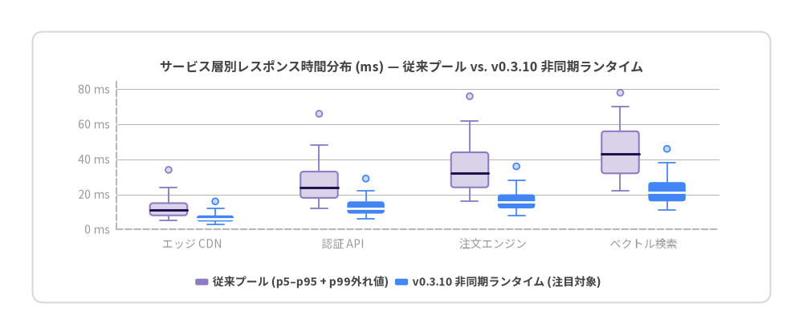
Source Code
from drawlib.canvas import save, setup
from drawlib.charts.box import BoxChart, BoxStats
from drawlib.shapes import rectangle
from drawlib.styles import Colors, Styles
setup(width=148, height=62)
rectangle(
(74.0, 31.0),
width=136.0,
height=50.0,
style=Styles.White.patch(shape_r=2.0, shape_line_color=Colors.Gray3),
)
box = BoxChart(
axis_line_style=Styles.MutedDashed,
categories=["エッジ CDN", "認証 API", "注文エンジン", "ベクトル検索"],
width=124.0,
height=38.0,
box_width_ratio=0.62,
box_r=0.6,
show_outliers=True,
axis_text_style=Styles.Muted.patch(text_size=10.0),
grid_style=Styles.MutedThin,
title="サービス層別レスポンス時間分布 (ms) — 従来プール vs. v0.3.10 非同期ランタイム",
title_style=Styles.DarkBold.patch(text_size=11.5),
)
box.add_series(
"従来プール (p5–p95 + p99外れ値)",
[
BoxStats(min=5.0, q1=8.0, median=11.0, q3=15.0, max=24.0, outliers=[34.0]),
BoxStats(min=12.0, q1=18.0, median=24.0, q3=33.0, max=48.0, outliers=[66.0]),
BoxStats(min=16.0, q1=24.0, median=32.0, q3=44.0, max=62.0, outliers=[76.0]),
BoxStats(min=22.0, q1=32.0, median=43.0, q3=56.0, max=70.0, outliers=[78.0]),
],
style=Styles.SecondaryNeutral,
)
box.add_series(
"v0.3.10 非同期ランタイム (注目対象)",
[
BoxStats(min=3.0, q1=4.5, median=6.0, q3=8.0, max=12.0, outliers=[16.0]),
BoxStats(min=6.0, q1=9.0, median=12.0, q3=16.0, max=22.0, outliers=[29.0]),
BoxStats(min=8.0, q1=12.0, median=15.5, q3=20.0, max=28.0, outliers=[36.0]),
BoxStats(min=11.0, q1=16.0, median=21.0, q3=27.0, max=38.0, outliers=[46.0]),
],
style=Styles.PrimaryFlat,
)
box.configure_y_axis(
min_value=0.0,
max_value=85.0,
tick_step=20.0,
format="{:.0f}",
unit="ms",
)
box.draw(xy=(12.0, 14.0))
box.draw_legend(
xy=(36.0, 9.8),
text_style=Styles.DarkBold.patch(text_size=10.0),
orientation="horizontal",
item_gap=6.0,
)
save()
試行回数 N = 8..25 程度の実測ベンチマークでは、生の list[float] とともに show_box=True, show_points=True, jitter=0.42 を指定すれば決定論的シードによるストリップ点群を重ね描きできます。また、LineChart や BarChart の draw_ratio（0.0〜1.0）を制御すれば、drawlib.anim による段階的アニメーションも簡単に構築できます。
from drawlib.canvas import save, setup
from drawlib.charts.line import LineChart
from drawlib.styles import Styles
setup(width=110, height=56)
trend = LineChart(
axis_line_style=Styles.MutedDashed,
categories=["T1", "T2", "T3", "T4", "T5"],
width=90.0,
height=38.0,
smooth=True,
axis_text_style=Styles.Muted.patch(text_size=10.0),
grid_style=Styles.MutedThin,
title="カナリアロールアウト処理性能推移 (60% 描画フレーム)",
title_style=Styles.DarkBold.patch(text_size=11.5),
)
trend.add_series("従来版", [40, 42, 41, 43, 42], style=Styles.SecondaryNeutral, line_style="dashed")
# T1..T5 の全体軸スケールを固定したまま、左から60%地点まで曲線をスイープ描画
focal = trend.add_series("v0.3.10 カナリア", [42, 58, 74, 89, 96], style=Styles.PrimaryFlat, draw_ratio=0.6)
trend.configure_y_axis(min_value=0, max_value=100, tick_step=25, unit="k rps")
trend.draw(xy=(10.0, 10.0))
save()
各チャートの軸設定・凡例・カラーバー・コンストラクタ引数の詳細は、uv run drawlib rules show lib-charts-overview（または lib-charts-bar、lib-charts-box、lib-charts-line、lib-charts-pie、lib-charts-gantt、lib-charts-heatmap）で確認できます。
9. クラウド・システムアーキテクチャ構成図
分散システムの設計図は、信頼境界・ネットワーク階層・サービス間の依存関係を正確に伝える必要があります。drawlib.diagrams.architecture は、階層型の境界コンテナ NodeGroup・33種のクラウド／技術アイコン列挙型（GcpIcon、AwsIcon、AzureIcon、PhosphorIcon など）・境界認識エッジルーティング・交差のない junction() バス分岐を純粋な Python コードとして統合します。
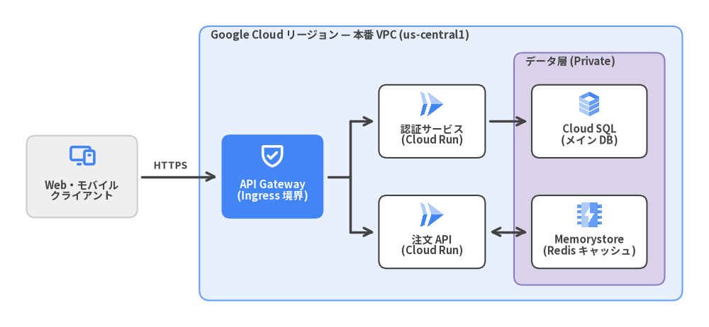
Source Code
from drawlib.canvas import save, setup
from drawlib.diagrams.architecture import (
ArchitectureDiagram,
GcpIcon,
Node,
NodeGroup,
PhosphorIcon,
)
from drawlib.styles import Styles
setup(width=160, height=74)
d = ArchitectureDiagram(
node_style=Styles.PrimaryBold,
node_text_style=Styles.DarkBold.patch(text_size=10.5),
edge_style=Styles.DarkBold,
edge_text_style=Styles.DarkBold.patch(text_size=10.0),
node_card_style=Styles.White,
)
# 外部アクターは必ずクラウドリージョン／VPC 境界の「外側」に配置する
client = d.add(
Node(
"Web・モバイル\nクライアント",
width=25.0,
height=18.5,
icon=PhosphorIcon.DEVICES,
icon_size=6.0,
card_style=Styles.Neutral.patch(shape_r=2.0),
),
xy=(14.5, 30.0),
)
# クラウドリージョン／VPC 境界（図全体座標系で左下 (41, 2)）
vpc = d.add(
NodeGroup(
title="Google Cloud リージョン — 本番 VPC (us-central1)",
width=109.0,
height=62.0,
style=Styles.PrimaryNeutral.patch(shape_r=2.4),
text_style=Styles.DarkBold.patch(text_size=11.0, halign="left"),
),
xy=(41.0, 2.0),
)
# 注目の入口ノード API Gateway（vpc 左下を原点とするローカル中心座標）
gateway = vpc.add(
Node(
"API Gateway\n(Ingress 境界)",
width=23.0,
height=19.0,
icon=PhosphorIcon.SHIELD_CHECK,
icon_size=6.0,
style=Styles.WhiteBold,
text_style=Styles.WhiteBold.patch(text_size=10.5),
card_style=Styles.PrimaryFlat.patch(shape_r=2.0),
),
xy=(16.5, 28.0),
)
# VPC 内のアプリケーション層（White カード + 公式 GcpIcon）
auth_svc = vpc.add(
Node(
"認証サービス\n(Cloud Run)",
width=24.0,
height=16.5,
icon=GcpIcon.CLOUD_RUN,
icon_size=6.2,
card_style=Styles.White.patch(shape_r=1.8),
),
xy=(52.5, 40.5),
)
order_svc = vpc.add(
Node(
"注文 API\n(Cloud Run)",
width=24.0,
height=16.5,
icon=GcpIcon.CLOUD_RUN,
icon_size=6.2,
card_style=Styles.White.patch(shape_r=1.8),
),
xy=(52.5, 15.5),
)
# ネストされたデータ層 NodeGroup（vpc 内のローカル左下座標）
data_tier = vpc.add(
NodeGroup(
title="データ層 (Private)",
width=34.0,
height=52.5,
style=Styles.SecondaryNeutral.patch(shape_r=2.0),
text_style=Styles.DarkBold.patch(text_size=10.5, halign="left"),
),
xy=(71.0, 3.5),
)
sql_db = data_tier.add(
Node(
"Cloud SQL\n(メイン DB)",
width=26.0,
height=16.5,
icon=GcpIcon.CLOUD_SQL,
icon_size=6.2,
card_style=Styles.White.patch(shape_r=1.8),
),
xy=(17.0, 37.0),
)
cache_db = data_tier.add(
Node(
"Memorystore\n(Redis キャッシュ)",
width=26.0,
height=16.5,
icon=GcpIcon.MEMORYSTORE,
icon_size=6.2,
card_style=Styles.White.patch(shape_r=1.8),
),
xy=(17.0, 12.0),
)
# 外部 HTTPS 接続 + Junction による整然としたバス分岐
d.connect(
client,
gateway,
label="HTTPS",
routing="direct",
padding=1.0,
text_style=Styles.DarkBold.patch(text_size=10.0, xy_shift=(-2.0, 2.6)),
)
j_mid = d.junction((75.0, 30.0))
j_top = d.junction((75.0, 42.5))
j_bot = d.junction((75.0, 17.5))
d.connect(gateway, j_mid, arrow="-", routing="direct", padding=(1.0, 0.0))
d.connect(j_mid, j_top, arrow="-", routing="direct")
d.connect(j_mid, j_bot, arrow="-", routing="direct")
d.connect(j_top, auth_svc, arrow="->", routing="direct", padding=(0.0, 1.0))
d.connect(j_bot, order_svc, arrow="->", routing="direct", padding=(0.0, 1.0))
d.connect(auth_svc, sql_db, arrow="->", routing="direct", padding=1.0)
d.connect(order_svc, cache_db, arrow="<->", routing="direct", padding=1.0)
d.draw(xy=(4.0, 4.0))
save()
9.1 コンテナ既定スタイル・Node・ローカル／グローバル座標系
ArchitectureDiagram は図全体のルートコンテナであり、3段階のスタイル継承（個別要素の上書き -> 図全体の既定値 -> 組み込み初期値）を提供します。コンストラクタの4つの必須キーワード引数（node_style、node_text_style、edge_style、edge_text_style）とオプションの node_card_style を定義しておけば、多数のマイクロサービス間で文字サイズや線幅を統一できます。
d.add(..., xy=...) と group.add(..., xy=...) では、対象の型と親コンテナによって xy の意味（中心か左下か・グローバルかローカルか）が明確に定められています。
| 要素登録メソッド | xy の基準点（アンカー） |
座標空間の原点 | 図全体のグローバル座標への換算式 |
|---|---|---|---|
d.add(Node(...), xy=(cx, cy)) |
中央 Center (cx, cy) |
図全体のグローバル座標 | (cx, cy) |
d.add(NodeGroup(...), xy=(x0, y0)) |
左下 Bottom-Left (x0, y0) |
図全体のグローバル座標 | 左下が (x0, y0) |
group.add(Node(...), xy=(lx, ly)) |
中央 Center (lx, ly) |
group 左下を (0, 0) とする ローカル座標 |
(x0 + lx, y0 + ly) |
group.add(NodeGroup(...), xy=(lx0, ly0)) |
左下 Bottom-Left (lx0, ly0) |
group 左下を (0, 0) とする ローカル座標 |
左下が (x0 + lx0, y0 + ly0) |
d.junction((jx, jy)) |
正確な1点 (jx, jy) |
図全体のグローバル座標 | (jx, jy) |
9.1.1 公式クラウドアイコンとカード背景コントラストの設計原則
- マルチカラー公式クラウド・技術アイコン（
GcpIcon、AwsIcon、AzureIcon、DataIcon、CnativeIconなど）:512x512のマルチカラー PNG アイコンとして描画されるため、Styles.Whiteや淡いStyles.Neutralカード（card_style=Styles.White.patch(shape_r=1.8)）の上に配置するとブランドカラーが鮮明に際立ちます。 - 注目の主役ノード（
Styles.PrimaryFlat/Styles.AccentFlat）: 高彩度のベタ塗りカードは図内で1〜2個の最重要ノード（API Gateway やイベントルーターなど）に限定し、単色ベクターのPhosphorIconにstyle=Styles.WhiteBoldとtext_style=Styles.WhiteBoldを組み合わせて高い視認性を確保します。
9.2 NodeGroup による境界設計と外部アクター配置ルール
NodeGroup はクラウドリージョン・VPC・アベイラビリティゾーン・Kubernetes クラスタ・サブネット・セキュリティゾーンといった階層的な境界を表現します。width=None, height=None のまま padding: float = 5.0 で子要素を自動包囲させることも、width と height を明示指定して複数ティアの枠サイズを美しく揃えることも可能です。
アーキテクチャ境界の鉄則 — 外部アクターは必ずクラウド
NodeGroupの外側に置く: エンドユーザー・ブラウザ・モバイル端末・外部 Webhook 送信元を、クラウドリージョンや VPC のNodeGroupの 内側 に配置してはいけません。外部アクターは必ずd.add(Node(...), xy=...)で外側のグローバル領域に配置し、CDN・ロードバランサ・API Gateway などの入口ノードを経由して境界線を跨がせます。
9.3 エッジルーティング・双方向矢印・junction() バス分岐
d.connect(start, end, ...)（および node.connect(...) / Edge(...)）は、Node・NodeGroup・Junction の外周境界で自動的にクリッピングされた接続線を描画します。
- 3種のルーティングモード（
routing）:"orthogonal"(既定): ティア間を直角の L 字・Z 字で結ぶマンハッタン配線。"direct": 水平・垂直に揃えたノード間やバス幹線を最短距離で結ぶ直線配線。"curved":.via((x, y))で弧の膨らみを制御できる滑らかな曲線配線（非同期イベントやレプリケーション経路に最適）。
- 境界ポート選択・余白
padding・双方向矢印: 接続端は相手ノード（または最初の.via((x, y))経由点）に最も近い辺を自動選択します。padding=1.0（または非対称タプルpadding=(1.0, 0.0)）で矢印先端の余白を整え、arrow="<->"で双方向キャッシュ参照を表現し、edge_text_styleのxy_shift=(dx, dy)でラベルと線の重なりを防ぎます。 - スパゲッティ配線を防ぐバス分岐（
d.junction(xy)、node.fork()、edge.add_point()）: 1つのゲートウェイから N 個の後続サービスへ斜めの線を何本も引くのではなく、arrow="-"の幹線を共有のd.junction((x, y))へ接続してから分岐させます（gateway.fork([svc1, svc2], at_x=...)による1行記述も可能です）。
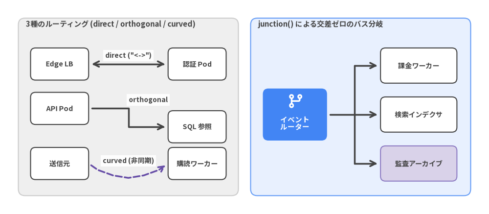
Source Code
from drawlib.canvas import save, setup
from drawlib.diagrams.architecture import (
ArchitectureDiagram,
Node,
NodeGroup,
PhosphorIcon,
)
from drawlib.styles import Styles
setup(width=160, height=70)
d = ArchitectureDiagram(
node_style=Styles.PrimaryBold,
node_text_style=Styles.DarkBold.patch(text_size=10.2),
edge_style=Styles.DarkBold,
edge_text_style=Styles.DarkBold.patch(text_size=10.0),
node_card_style=Styles.White,
)
# 左パネル：3種のエッジルーティング比較
left = d.add(
NodeGroup(
title="3種のルーティング (direct / orthogonal / curved)",
width=72.0,
height=58.0,
style=Styles.Neutral.patch(shape_r=2.2),
text_style=Styles.DarkBold.patch(text_size=10.8, halign="left"),
),
xy=(2.0, 2.0),
)
a1 = left.add(Node("Edge LB", width=19.0, height=10.5, card_style=Styles.White.patch(shape_r=1.6)), xy=(13.5, 43.0))
b1 = left.add(Node("認証 Pod", width=19.0, height=10.5, card_style=Styles.White.patch(shape_r=1.6)), xy=(58.5, 43.0))
d.connect(
a1,
b1,
label='direct ("<->")',
arrow="<->",
routing="direct",
padding=1.0,
text_style=Styles.DarkBold.patch(text_size=10.0, text_bg_fill_color=None, xy_shift=(0.0, 2.8)),
)
a2 = left.add(Node("API Pod", width=19.0, height=10.5, card_style=Styles.White.patch(shape_r=1.6)), xy=(13.5, 28.5))
b2 = left.add(Node("SQL 参照", width=19.0, height=10.5, card_style=Styles.White.patch(shape_r=1.6)), xy=(58.5, 22.5))
d.connect(
a2,
b2,
label="orthogonal",
arrow="->",
routing="orthogonal",
padding=1.0,
text_style=Styles.DarkBold.patch(text_size=10.0, text_bg_fill_color=None, xy_shift=(6.5, 5.8)),
)
a3 = left.add(Node("送信元", width=19.0, height=10.5, card_style=Styles.White.patch(shape_r=1.6)), xy=(13.5, 10.5))
b3 = left.add(Node("購読ワーカー", width=19.0, height=10.5, card_style=Styles.White.patch(shape_r=1.6)), xy=(58.5, 10.5))
e_curved = d.connect(
a3,
b3,
label="curved (非同期)",
arrow="->",
routing="curved",
style=Styles.SecondaryBold.patch(line_style="dashed"),
padding=1.0,
text_style=Styles.DarkBold.patch(text_size=10.0, text_bg_fill_color=None, xy_shift=(2.5, 5.2)),
)
e_curved.via((28.0, 10.4), (33.0, 8.6), (38.0, 7.8), (43.0, 8.6), (48.0, 10.4))
# 右パネル：Junction による1対3のバス分岐
right = d.add(
NodeGroup(
title="junction() による交差ゼロのバス分岐",
width=72.0,
height=58.0,
style=Styles.PrimaryNeutral.patch(shape_r=2.2),
text_style=Styles.DarkBold.patch(text_size=10.8, halign="left"),
),
xy=(78.0, 2.0),
)
router = right.add(
Node(
"イベント\nルーター",
width=21.0,
height=17.0,
icon=PhosphorIcon.GIT_BRANCH,
icon_size=5.6,
style=Styles.WhiteBold,
text_style=Styles.WhiteBold.patch(text_size=10.5),
card_style=Styles.PrimaryFlat.patch(shape_r=1.8),
),
xy=(14.5, 26.5),
)
w1 = right.add(
Node("課金ワーカー", width=25.0, height=11.5, card_style=Styles.White.patch(shape_r=1.6)),
xy=(55.0, 42.5),
)
w2 = right.add(
Node("検索インデクサ", width=25.0, height=11.5, card_style=Styles.White.patch(shape_r=1.6)),
xy=(55.0, 26.5),
)
w3 = right.add(
Node("監査アーカイブ", width=25.0, height=11.5, card_style=Styles.SecondaryNeutral.patch(shape_r=1.6)),
xy=(55.0, 10.5),
)
jb_mid = d.junction((112.0, 28.5))
jb_top = d.junction((112.0, 44.5))
jb_bot = d.junction((112.0, 12.5))
d.connect(router, jb_mid, arrow="-", routing="direct", padding=(1.0, 0.0))
d.connect(jb_mid, jb_top, arrow="-", routing="direct")
d.connect(jb_mid, jb_bot, arrow="-", routing="direct")
d.connect(jb_top, w1, arrow="->", routing="direct", padding=(0.0, 1.0))
d.connect(jb_mid, w2, arrow="->", routing="direct", padding=(0.0, 1.0))
d.connect(jb_bot, w3, arrow="->", routing="direct", padding=(0.0, 1.0))
d.draw(xy=(4.0, 4.0))
save()
定型的な1対Nの直交バス分岐や既存エッジ途中からの分岐（Dead Letter Queue への退避など）には、node.fork(targets, at_x=...) や edge.add_point((x, y)) を使うことで1メソッドで簡潔に記述できます。
from drawlib.canvas import save, setup
from drawlib.diagrams.architecture import ArchitectureDiagram, GcpIcon, Node, PhosphorIcon
from drawlib.styles import Styles
setup(width=124, height=54)
d = ArchitectureDiagram(
node_style=Styles.PrimaryBold,
node_text_style=Styles.DarkBold.patch(text_size=10.2),
edge_style=Styles.DarkBold,
edge_text_style=Styles.DarkBold.patch(text_size=10.0),
node_card_style=Styles.Neutral,
)
lb = d.add(
Node(
"Ingress LB",
width=24.0,
height=16.0,
icon=PhosphorIcon.SHIELD_CHECK,
icon_size=5.8,
style=Styles.WhiteBold,
text_style=Styles.WhiteBold.patch(text_size=10.5),
card_style=Styles.PrimaryFlat.patch(shape_r=1.8),
),
xy=(20.0, 25.0),
)
pod_a = d.add(Node("ワーカー A", width=24.0, height=15.0, icon=GcpIcon.CLOUD_RUN, icon_size=5.8), xy=(84.0, 36.0))
pod_b = d.add(Node("ワーカー B", width=24.0, height=15.0, icon=GcpIcon.CLOUD_RUN, icon_size=5.8), xy=(84.0, 14.0))
# x=52.0 に共有 Junction を自動生成し、上下2つの Pod へ整然と分岐配線
lb.fork([pod_a, pod_b], at_x=52.0, padding=1.2)
d.draw(xy=(6.0, 2.0))
save()
全33種のアイコン列挙型やウェイポイント制御の詳細は、uv run drawlib rules show lib-diagrams-architecture および uv run drawlib rules show lib-icons-overview で確認できます。
10. ソフトウェア設計図：シーケンス・フロー・状態遷移・クラス・ER図
第 9 章で扱ったクラウド構成図（ArchitectureDiagram）に加え、drawlib.diagrams にはソフトウェア詳細設計向けの 5 つの専用エンジン（SequenceDiagram・FlowDiagram・StateDiagram・ClassDiagram・ERDiagram）が用意されており、UML 2.x・ISO 5807（JIS X 0121）・Crow's Foot（IE 記法）に準拠した設計図を宣言的な Python コードから描画できます。
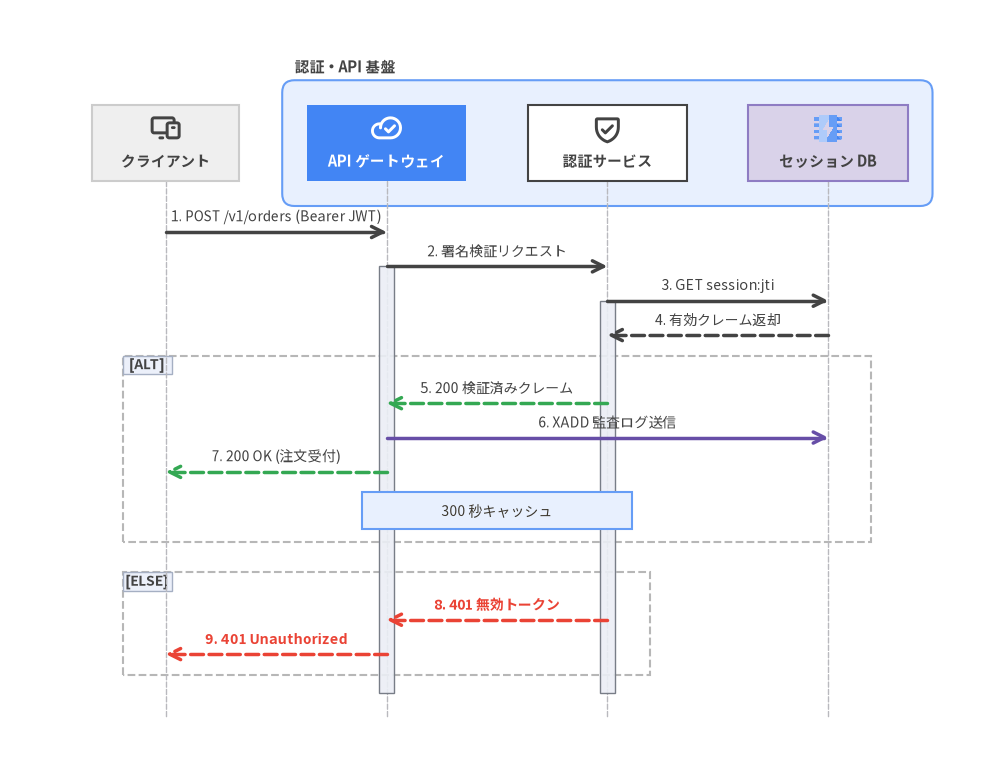
Source Code
import math
from drawlib.canvas import save, setup
from drawlib.diagrams.sequence import (
GcpIcon,
Participant,
ParticipantGroup,
PhosphorIcon,
SequenceDiagram,
)
from drawlib.styles import Styles
d = SequenceDiagram(
node_style=Styles.DarkBold,
node_text_style=Styles.DarkBold.patch(text_size=10.5),
edge_style=Styles.DarkBold,
edge_text_style=Styles.Dark.patch(text_size=10.0),
node_card_style=Styles.Neutral,
autonumber=True,
col_width=36.0,
step_y=5.6,
margin=4.0,
)
client = d.add(
Participant(
"クライアント",
width=24.0,
height=12.5,
icon=PhosphorIcon.DEVICES,
icon_size=5.0,
card_style=Styles.Neutral,
)
)
platform = d.add(
ParticipantGroup(
title="認証・API 基盤",
padding=4.0,
style=Styles.PrimaryNeutral.patch(shape_r=2.0),
text_style=Styles.DarkBold.patch(text_size=10.5, halign="left", valign="bottom"),
)
)
gateway = platform.add(
Participant(
"API ゲートウェイ",
width=26.0,
height=12.5,
icon=PhosphorIcon.CLOUD_CHECK,
icon_size=5.0,
style=Styles.WhiteBold,
text_style=Styles.WhiteBold.patch(text_size=10.5),
card_style=Styles.PrimaryFlat,
)
)
auth = platform.add(
Participant(
"認証サービス",
width=26.0,
height=12.5,
icon=PhosphorIcon.SHIELD_CHECK,
icon_size=5.0,
card_style=Styles.White,
)
)
store = platform.add(
Participant(
"セッション DB",
width=26.0,
height=12.5,
icon=GcpIcon.MEMORYSTORE,
icon_size=5.0,
card_style=Styles.SecondaryNeutral,
)
)
client.request(gateway, "POST /v1/orders (Bearer JWT)")
gateway.activate()
gateway.request(auth, "署名検証リクエスト")
auth.activate()
auth.request(store, "GET session:jti")
store.reply(auth, "有効クレーム返却")
with d.alt("") as alt_blk:
alt_blk.style = Styles.MutedDashed
alt_blk.text_style = Styles.DarkBold.patch(text_size=10.0)
auth.reply(gateway, "200 検証済みクレーム", style=Styles.SuccessBold)
gateway.request(store, "XADD 監査ログ送信", is_async=True, style=Styles.SecondaryBold)
gateway.reply(client, "200 OK (注文受付)", style=Styles.SuccessBold)
d.note("300 秒キャッシュ", over=[gateway, auth], style=Styles.PrimaryNeutral.patch(text_size=10.0))
d.space(2.0)
with d.else_("") as else_blk:
else_blk.style = Styles.MutedDashed
else_blk.text_style = Styles.DarkBold.patch(text_size=10.0)
auth.reply(
gateway,
"401 無効トークン",
style=Styles.DangerBold,
text_style=Styles.DangerBold.patch(text_size=10.0),
)
gateway.reply(
client,
"401 Unauthorized",
style=Styles.DangerBold,
text_style=Styles.DangerBold.patch(text_size=10.0),
)
auth.deactivate()
gateway.deactivate()
w, h = d.get_size()
setup(width=math.ceil(w) + 8, height=math.ceil(h) + 8)
d.draw(xy=(4.0, 4.0))
save()
10.1 5 つのソフトウェア設計図エンジンの概要
drawlib.diagrams の各エンジンは共通のビルダーライフサイクルを備えています。コンストラクタで基本スタイルを定義し、.add() で要素を登録して関係線を接続し、必要に応じて .get_size() で外寸を取得したうえで .draw(xy=(x0, y0))（既定は左下アンカー）でキャンバスへ描画します。
| モジュール | 主クラス | 主な構成要素 | 座標指定方式 | 主な用途 |
|---|---|---|---|---|
drawlib.diagrams.sequence |
SequenceDiagram |
Participant, ParticipantGroup, Message, Note, Block |
col_width（X）と step_y（Y）で自動進行 |
RPC/REST 通信手順、OAuth 認可、非同期イベント連鎖 |
drawlib.diagrams.flow |
FlowDiagram |
Start, End, Process, Decision, Data, Lane, Junction |
共通／スイムレーン空間上の中心 xy=(cx, cy) |
CI/CD ゲート判定、業務フロー、部門横断スイムレーン |
drawlib.diagrams.state |
StateDiagram |
State, InitialState, FinalState, ChoiceState, ForkJoinState |
中心 xy=(cx, cy) と曲線／直交遷移パス |
プロトコル状態機械、ワーカー寿命管理、並行状態図 |
drawlib.diagrams.class_diagram |
ClassDiagram |
ClassNode, AttributeInfo, MethodInfo, ClassRelationship |
高さ自動計算の 3 区画ボックス＋中心 xy=(cx, cy) |
OOP ドメインモデル、インターフェース実装、継承構造 |
drawlib.diagrams.er |
ERDiagram |
Entity, ColumnInfo, Relationship |
中心 xy=(cx, cy) と行単位 start_column / end_column |
リレーショナル DB 設計、PK/FK 制約、Crow's Foot 図 |
10.2 SequenceDiagram による時系列 API シーケンス
SequenceDiagram（from drawlib.diagrams.sequence import SequenceDiagram, Participant, ParticipantGroup）は、時系列プロトコルにおける縦方向の座標計算を完全に自動化します。
- 参加者・グループ境界・アイコン:
d.add(Participant(...))で左から右へライフラインを自動配置し、ParticipantGroup(title=..., padding=4.0)でバックエンド基盤を枠線で囲めます。33 種のアイコン列挙型（PhosphorIcon,GcpIcon,AwsIcon,AzureIconなど）も同モジュールから直接インポート可能です。 - 同期・非同期・応答メッセージ:
a.request(b, "ラベル")で実線の同期呼び出し、is_async=Trueで開矢印の非同期通知、b.reply(a, "ラベル")で破線の応答矢印、a.request(a, "検証")で自己呼び出しを描画します。autonumber=Trueを指定すると全メッセージに連番（1.,2., ...）が自動付与されます。 - 実行区間（Activation）とノート:
p.activate()とp.deactivate()でライフライン上のアクティブな処理区間を明示でき、p.note("注記", pos="right")や複数ライフラインを跨ぐd.note("注記", over=[p1, p2])で補足説明を配置できます。 - 複合フラグメント（
alt,else_,loop,opt,par）: Python のwith文（with d.alt("条件"):/with d.else_("代替"):、with d.loop("30秒周期"):、with d.opt("2FA有効"):、with d.par("並列配信"):）で UML 2.0 のフレーム構造を直感的に記述できます。 - 余白ゼロのキャンバス自動採寸: メッセージ定義後に
w, h = d.get_size()を取得し、整数サイズsetup(width=math.ceil(w) + 8, height=math.ceil(h) + 8)とd.draw(xy=(4.0, 4.0))を組み合わせることで、右半分や下半分が不自然に空くことのない引き締まった図面になります。
10.3 業務フローと状態遷移：FlowDiagram と StateDiagram
処理分岐や部門間の連携には FlowDiagram、イベント駆動のライフサイクル管理には StateDiagram を使用します。
FlowDiagram（drawlib.diagrams.flow）:- ISO 5807 / JIS X 0121 標準記号:
Start・End（端子ピル）、Process（処理矩形）、Decision（条件分岐ひし形）、Data（入出力平行四辺形）、および合流点を作るJunction（flow.junction(xy)やnode.fork([...])）を提供します。 - スイムレーン（
flow.add_lane）: 縦列（lane_orientation="vertical"）または横行（"horizontal"）のレーンを追加できます。全レーンが単一のグローバル座標系を共有するため、異なるレーン間で同じy座標を指定するだけで水平位置が正確に揃います。 - 高コントラスト配色の鉄則: 通常ステップは
Styles.NeutralやStyles.PrimaryNeutralにStyles.DarkBold文字を合わせます。最重要ステップにStyles.PrimaryFlatやStyles.AccentFlatの濃色塗りを適用する際は、必ずtext_style=Styles.WhiteBoldを指定してください（濃紺のPrimaryFlat背景に青系のPrimaryBold文字を載せると視認性が損なわれます）。
- ISO 5807 / JIS X 0121 標準記号:
StateDiagram（drawlib.diagrams.state）:- 状態クラスと擬似状態クラス:
State(name, entry=..., do=..., exit=...)（カスタム動作行を追加する.add_action(kind, action)/StateAction対応）に加え、InitialState()（開始黒丸）、FinalState()（終了二重丸）、ChoiceState()（動的ガード分岐ひし形）、ForkJoinState(orientation="horizontal" | "vertical")（並行同期バー）を使用します。 - UML 遷移ラベルと曲線ルーティング（
sd.connect）:event="...", guard="...", action="..."を渡すと"event [guard] / action"形式へ自動整形されます。双方向遷移にはrouting="curved"とbend=0.25、自己遷移にはsd.connect(s, s, side="top")を用います。
- 状態クラスと擬似状態クラス:
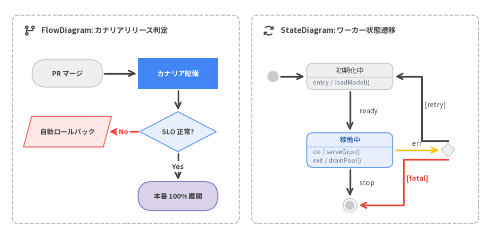
Source Code
from drawlib.canvas import save, setup
from drawlib.diagrams.flow import Data, Decision, End, FlowDiagram, Process, Start
from drawlib.diagrams.state import ChoiceState, FinalState, InitialState, State, StateDiagram
from drawlib.icons import phosphor
from drawlib.shapes import rectangle
from drawlib.styles import Styles
from drawlib.text import text
setup(width=160, height=78)
# 左パネル: FlowDiagram
rectangle((41, 39), width=74, height=68, style=Styles.MutedDashed.patch(shape_r=2.2))
phosphor.git_branch((9.5, 68.0), width=4.2, style=Styles.DarkBold)
text(
(13.5, 68.0),
"FlowDiagram: カナリアリリース判定",
style=Styles.DarkBold.patch(text_size=11.0, halign="left"),
)
flow = FlowDiagram(
node_style=Styles.Neutral,
edge_style=Styles.DarkBold,
edge_text_style=Styles.DarkBold.patch(text_size=10.0),
)
f_start = flow.add(
Start("PR マージ", width=23, height=9.0, style=Styles.Neutral, text_style=Styles.DarkBold.patch(text_size=10.0)),
xy=(22, 54),
)
f_canary = flow.add(
Process(
"カナリア配備",
width=26,
height=10.0,
style=Styles.PrimaryFlat,
text_style=Styles.WhiteBold.patch(text_size=10.2),
),
xy=(58, 54),
)
f_check = flow.add(
Decision(
"SLO 正常?",
width=25,
height=13.0,
style=Styles.PrimaryNeutral,
text_style=Styles.DarkBold.patch(text_size=10.0),
),
xy=(58, 35),
)
f_alert = flow.add(
Data(
"自動ロールバック",
width=26,
height=10.0,
style=Styles.DangerNeutral,
text_style=Styles.DarkBold.patch(text_size=10.0),
),
xy=(22, 35),
)
f_prod = flow.add(
End(
"本番 100% 展開",
width=26,
height=9.5,
style=Styles.SecondaryNeutral,
text_style=Styles.DarkBold.patch(text_size=10.0),
),
xy=(58, 14),
)
f_start.connect(f_canary, padding=0.6)
f_canary.connect(f_check, start_side="bottom", end_side="top", padding=0.6)
f_check.connect(
f_alert,
label="No",
start_side="left",
end_side="right",
style=Styles.DangerBold,
text_style=Styles.DangerBold.patch(text_size=10.0),
padding=0.6,
)
f_check.connect(f_prod, label="Yes", start_side="bottom", end_side="top", padding=0.6)
flow.draw()
# 右パネル: StateDiagram
rectangle((119, 39), width=74, height=68, style=Styles.MutedDashed.patch(shape_r=2.2))
phosphor.arrows_clockwise((87.5, 68.0), width=4.2, style=Styles.DarkBold)
text(
(91.5, 68.0),
"StateDiagram: ワーカー状態遷移",
style=Styles.DarkBold.patch(text_size=11.0, halign="left"),
)
sd = StateDiagram(
node_style=Styles.Neutral.patch(text_size=10.0),
edge_style=Styles.DarkBold,
edge_text_style=Styles.Dark.patch(text_size=10.0),
)
s_init = sd.add(InitialState(), xy=(89, 53))
s_warm = sd.add(
State("初期化中", entry="loadModel()", width=28, style=Styles.Neutral.patch(text_size=10.0)),
xy=(114, 53),
)
s_active = sd.add(
State(
"稼働中",
do="serveGrpc()",
exit="drainPool()",
width=28,
style=Styles.PrimaryNeutral.patch(text_size=10.0),
),
xy=(114, 29),
)
s_choice = sd.add(ChoiceState(), xy=(146, 29))
s_final = sd.add(FinalState(), xy=(114, 11))
sd.connect(s_init, s_warm, start_side="right", end_side="left", routing="direct", padding=0.8)
sd.connect(
s_warm,
s_active,
label=" ready",
start_side="bottom",
end_side="top",
routing="direct",
text_style=Styles.Dark.patch(text_size=10.0, halign="left"),
padding=0.8,
)
sd.connect(
s_active,
s_choice,
event="err",
start_side="right",
end_side="left",
routing="direct",
style=Styles.WarningBold,
padding=0.8,
)
sd.connect(
s_choice,
s_warm,
label=" [retry]",
start_side="top",
end_side="right",
routing="orthogonal",
text_style=Styles.Dark.patch(text_size=10.0, halign="left"),
padding=0.8,
)
sd.connect(
s_choice,
s_final,
label=" [fatal]",
start_side="bottom",
end_side="right",
routing="orthogonal",
style=Styles.DangerBold,
text_style=Styles.DangerBold.patch(text_size=10.0, halign="left"),
padding=0.8,
)
sd.connect(
s_active,
s_final,
label=" stop",
start_side="bottom",
end_side="top",
routing="direct",
text_style=Styles.Dark.patch(text_size=10.0, halign="left"),
padding=0.8,
)
sd.draw()
save()
10.4 ClassDiagram によるオブジェクト指向クラス設計
ClassDiagram（drawlib.diagrams.class_diagram）は、ステレオタイプ（stereotype="interface" や is_abstract=True）・属性区画・メソッド区画から成る UML 2.0 の 3 区画クラスボックス（ClassNode）を行数に応じた自動高さで描画します。
- メソッドチェーンによるメンバ定義:
.add_attribute(name, type, visibility="-", default_value=..., is_static=...)と.add_method(name, params, return_type, visibility="+", is_abstract=...)を連鎖させ、可視性記号（"+"public、"-"private、"#"protected、"~"package）を付与できます。 - 6 種の標準 UML 関係線:
cd.connect(source, target, relationship_type=...)で"inheritance"（継承：実線＋白抜き三角）、"realization"（実装：破線＋白抜き三角）、"composition"（コンポジション：黒塗りひし形）、"aggregation"（集約：白抜きひし形）、"dependency"（依存：破線＋開矢印）、"association"（関連：実線）を描き分け、start_multiplicity・end_multiplicity・end_roleで多重度やロール名を添えられます。
from drawlib.canvas import save, setup
from drawlib.diagrams.class_diagram import ClassDiagram, ClassNode
from drawlib.fonts import FontRoboto, FontSourceCode
from drawlib.styles import Styles
setup(width=140, height=64)
cd = ClassDiagram(
node_style=Styles.Neutral.patch(text_font=FontSourceCode.ROBOTO_MONO, text_size=10.0),
header_style=Styles.PrimaryNeutral.patch(text_font=FontRoboto.ROBOTO_BOLD, text_size=10.8),
edge_style=Styles.DarkBold,
edge_text_style=Styles.Dark.patch(text_size=10.0),
)
repo = cd.add(
ClassNode("PaymentGateway", stereotype="interface", width=44, header_style=Styles.SecondaryNeutral)
.add_method("authorize", "amount: Decimal", "AuthReceipt"),
xy=(32, 42),
)
stripe_gw = cd.add(
ClassNode("StripeGateway", width=44)
.add_attribute("api_client", "HttpClient", visibility="-")
.add_method("authorize", "amount: Decimal", "AuthReceipt"),
xy=(32, 16),
)
invoice = cd.add(
ClassNode(
"Invoice",
width=40,
header_style=Styles.PrimaryFlat.patch(
text_color=Styles.WhiteBold.text_color,
text_font=FontRoboto.ROBOTO_BOLD,
text_size=10.8,
),
)
.add_attribute("id", "UUID", visibility="+")
.add_attribute("status", "InvoiceState", visibility="#")
.add_method("capture", "gw: PaymentGateway", "bool"),
xy=(106, 29),
)
cd.connect(stripe_gw, repo, "realization", start_side="top", end_side="bottom")
cd.connect(invoice, repo, "dependency", label="<<uses>>", start_side="left", end_side="right")
cd.draw(xy=(4.0, 4.0))
save("class_model.png")
10.5 ERDiagram によるリレーショナルデータベース設計
ERDiagram（drawlib.diagrams.er）は Information Engineering（Crow's Foot / 鳥の足記法）による ER 図エンジンであり、各テーブル（Entity）のカラムを「PK / FK バッジ列」「カラム名列」「SQL 型＋(NN) 非 NULL 制約列」の 3 サブカラムに自動整列します。
- エンティティ定義（
Entity）:Entity("table_name", width=38)に対して.add_column(name, type, pk=False, fk=False, nullable=True)をチェーンしてスキーマを宣言します。 - Crow's Foot 多重度とカラム行アンカー接続:
erd.connect(parent, child, cardinality="1:*", start_column="id", end_column="user_id")でテーブル間を接続します（"1:1","1:0..1","0..1:1","1:*","1:1..*","0..1:*","*:*"に対応）。start_columnとend_columnにカラム名を渡すと、外部キー線が該当カラム行の正確な高さ（Y 座標）へスナップします。
from drawlib.canvas import save, setup
from drawlib.diagrams.er import Entity, ERDiagram
from drawlib.fonts import FontRoboto, FontSourceCode
from drawlib.styles import Styles
setup(width=136, height=52)
erd = ERDiagram(
node_style=Styles.Neutral.patch(text_font=FontSourceCode.ROBOTO_MONO, text_size=10.0),
header_style=Styles.PrimaryNeutral.patch(text_font=FontRoboto.ROBOTO_BOLD, text_size=10.8),
edge_style=Styles.DarkBold,
edge_text_style=Styles.Dark.patch(text_size=10.0),
)
tenants = erd.add(
Entity("tenants", width=40)
.add_column("id", "UUID", pk=True, nullable=False)
.add_column("slug", "VARCHAR(64)", nullable=False)
.add_column("created_at", "TIMESTAMPTZ", nullable=False),
xy=(30, 26),
)
api_keys = erd.add(
Entity(
"api_keys",
width=42,
header_style=Styles.PrimaryFlat.patch(
text_color=Styles.WhiteBold.text_color,
text_font=FontRoboto.ROBOTO_BOLD,
text_size=10.8,
),
)
.add_column("id", "UUID", pk=True, nullable=False)
.add_column("tenant_id", "UUID", fk=True, nullable=False)
.add_column("key_hash", "CHAR(64)", nullable=False)
.add_column("revoked_at", "TIMESTAMPTZ", nullable=True),
xy=(102, 26),
)
tenants.connect(
api_keys,
cardinality="1:*",
start_column="id",
end_column="tenant_id",
start_side="right",
end_side="left",
)
erd.draw(xy=(4.0, 4.0))
save("er_schema.png")
11. 自動グラフレイアウトソルバー（drawlib.graph）
ノード数が増えるにつれて (x, y) 座標を手作業で管理するのは煩雑になりますが、ブラックボックス型の自動描画ツールではアイコンやフォント、デザインシステム（Styles）の細かな制御が失われます。drawlib.graph は純粋かつ決定論的な座標計算ソルバーとしてこの課題を解決します。ノード・クラスタ・エッジの接続関係だけを宣言して layout = g.get_layout(...) で座標を算出し、Drawlib の任意の描画コンポーネントへ渡すことで「自動配置」と「完全な表現力」を両立します。
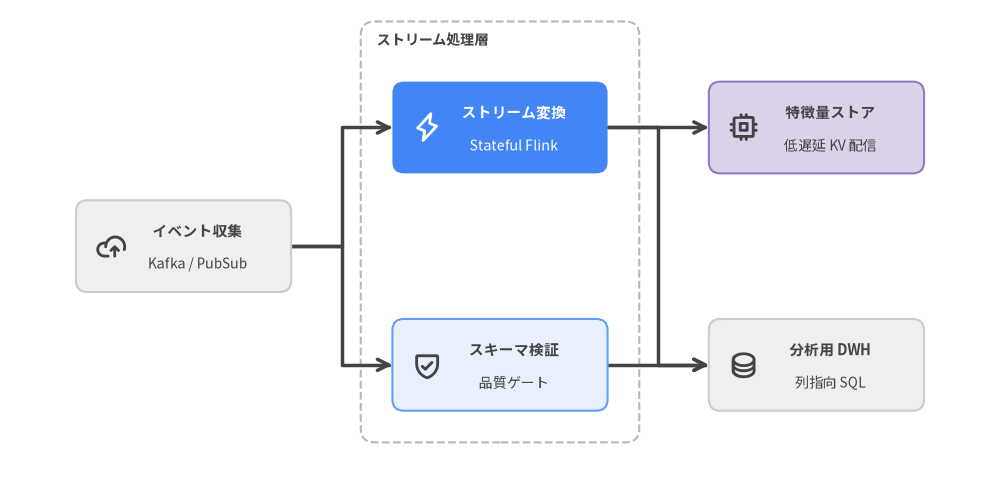
Source Code
from drawlib.canvas import save, setup
from drawlib.graph import LayerGraph
from drawlib.icons import phosphor
from drawlib.lines import lines
from drawlib.shapes import rectangle
from drawlib.styles import Styles
from drawlib.text import text
setup(width=158, height=78)
# ステップ 1: DAG トポロジーを宣言し決定論的な座標を算出
g = LayerGraph(direction="LR", default_node_width=34.0, default_node_height=14.5)
g.node("ingest", layer=0)
g.tier("processing", ["transform", "validate"], layer=1)
g.cluster("etl_stage", ["transform", "validate"], padding=5.0, header_height=4.5)
g.tier("serving", ["feature", "warehouse"], layer=2)
g.edge("ingest", "transform")
g.edge("ingest", "validate")
g.edge("transform", "feature")
g.edge("transform", "warehouse")
g.edge("validate", "warehouse")
layout = g.get_layout(margin=13.0)
# ステップ 2: 算出されたクラスタ境界・直交エッジ・ノードカードを描画
stage = layout["etl_stage"]
rectangle(stage.xy, width=stage.width, height=stage.height, style=Styles.MutedDashed.patch(shape_r=2.2))
text(
(stage.left + 2.5, stage.top - 2.8),
"ストリーム処理層",
style=Styles.DarkBold.patch(halign="left", text_size=10.2),
)
for edge in layout.edges:
lines(edge.points, arrow_head="->", style=Styles.DarkBold)
cards = [
("ingest", "イベント収集", "Kafka / PubSub", Styles.Neutral, Styles.DarkBold, Styles.Dark, phosphor.cloud_arrow_up),
("transform", "ストリーム変換", "Stateful Flink", Styles.PrimaryFlat, Styles.WhiteBold, Styles.White, phosphor.lightning),
("validate", "スキーマ検証", "品質ゲート", Styles.PrimaryNeutral, Styles.DarkBold, Styles.Dark, phosphor.shield_check),
("feature", "特徴量ストア", "低遅延 KV 配信", Styles.SecondaryNeutral, Styles.DarkBold, Styles.Dark, phosphor.cpu),
("warehouse", "分析用 DWH", "列指向 SQL", Styles.Neutral, Styles.DarkBold, Styles.Dark, phosphor.database),
]
for nid, title, sub, card_st, title_st, sub_st, icon_fn in cards:
n = layout[nid]
rectangle(n.xy, width=n.width, height=n.height, style=card_st.patch(shape_r=1.8))
icon_fn((n.x - 11.5, n.y), width=4.8, style=title_st)
text((n.x + 2.2, n.y + 2.4), title, style=title_st.patch(text_size=10.5))
text((n.x + 2.2, n.y - 2.8), sub, style=sub_st.patch(text_size=10.0))
save()
11.1 2 段階レイアウト設計と座標取得（get_layout）
drawlib.graph はそれ自体には .draw() メソッドや色・フォント属性を持たず、「幾何計算」と「視覚レンダリング」を明確な 2 段階に分離します。
- トポロジー宣言と座標解決（
layout = g.get_layout(...)）: ノード（g.node("id", width=..., height=...)）、有向エッジ（g.edge("src", "dst")）、およびグループ境界（g.cluster("id", nodes=[...], padding=..., header_height=...)）を登録し、g.get_layout(width=..., height=..., margin=10.0)を呼び出してGraphLayoutオブジェクト（layout["id"]で辞書参照可能）を取得します。 - 自由なビジュアル描画: 解決済みの座標を
ArchitectureDiagram・FlowDiagram・SmartArts・基本図形（shapes/icons/lines）へ渡して描画します。- 中心座標（
.xyと.local_xy）:NodeLayoutとClusterLayoutはグローバル中心.xy（(cx, cy)）を公開しており、rectangle()・circle()・FlowDiagram・トップレベルのArchitectureDiagramノードへそのまま渡せます。また親クラスタ左下基準の相対中心.local_xyはNodeGroup内の子ノード配置に対応します。 - 左下コーナー座標（
.bottom_leftと.local_bottom_left）: 左下アンカーを採用するトップレベルNodeGroup(..., xy=cl.bottom_left)、入れ子のparent_grp.add(NodeGroup(...), xy=cl.local_bottom_left)、SmartArts、Chartsへ直接渡せます。 - エッジ経路ポリライン（
edge.points,edge.src_port,edge.dst_port,edge.mid_xy）:layout.edgesの各EdgeLayoutはノード境界にスナップ済みのポート座標と直交ウェイポイント列を保持し、lines(edge.points, arrow_head="->")で即座に結線できます。 - 座標の出力固定と微調整（
print(layout)&layout.offset()）: 自動配置をベースに手動調整コードへ移行したい場合は、print(layout)（str(layout)）を実行すると全クラスタ・ノードの.xy/.bottom_left・エッジ経路が一覧出力され、明示的な Python 作図コードの雛形として転記できます。またlayout.offset("node_id", dx=0.0, dy=-5.0)を使えば、接続エッジのポート座標を自動追従させたまま特定ノードだけを平行移動できます。
- 中心座標（
11.2 5 種類のグラフレイアウトソルバーの使い分け
drawlib.graph には BaseGraph を継承した 5 つの専用ソルバーが用意されており、システムの構造特性に応じて最適なアルゴリズムを選択できます。
| ソルバークラス | レイアウトアルゴリズム | 主な構築ヘルパー | 最適なアーキテクチャ用途 |
|---|---|---|---|
ArchitectureGraph |
2 階層マクロ／ミクロ箱詰め＋5 方位コンパス配置 | g.group(), g.cluster(..., parent=..., pos="left"|"center"|..., order=...) |
マルチゾーン VPC、入れ子サブネット、クラウド構成図（ArchitectureDiagram 連携） |
LayerGraph |
Sugiyama 階層型 DAG（閉路除去・最長経路ランク・交差最小化） | g.tier(name, nodes, layer=...), g.cluster(), direction="LR"|"TB" |
ETL／データ系譜パイプライン、CI/CD ステージ、依存関係 DAG |
TreeGraph |
Reingold-Tilford / Buchheim 対称コンパクト木配置 | g.child(parent, child_id), root=..., direction="TB"|"LR" |
組織図、構文木（AST）、障害木、厳密な単一親ツリー |
RadialGraph |
同心円 BFS リング＋部分木重み付き角度配分 | g.spoke(parent, spoke_id, ring=...), hub=..., layout.ring_radii |
イベントメッシュ、Pub/Sub ハブ＆スポーク、API エコシステム図 |
GridGraph |
2 次元 (row, col) マトリクス配置＋チャネル回廊配線 |
g.cell(id, row=..., col=...), g.cluster_row(), g.cluster_column(), edge_routing="smart" |
サービスカタログ、状態マトリクス、均等グリッド構成図 |
11.3 階層ツリー（TreeGraph）と放射状トポロジー（RadialGraph）
直線的なパイプライン以外の階層構造やブローカー中心のネットワークでは、TreeGraph と RadialGraph が三角関数や部分木幅のバランス計算を自動化します。
TreeGraph: 単一親・非巡回の木構造制約を厳密に検証し（ダイヤモンド型 DAG が誤って渡された場合はValueErrorで通知）、親ノードを子ノード群の中央に美しく揃えて直交ステップ線（edge_routing="orthogonal"）または直線（"straight"）を生成します。RadialGraph: 中心ノードhubをring=0に据え、接続スポークを同心円リング（ring=1, 2, ...）へ均等配分します。算出された各リングの半径はlayout.ring_radii: dict[int, float]に格納されるため、破線の軌道ガイド円（circle(hub.xy, radius=r, style=Styles.MutedDashed)）を寸分の狂いなく重ねられます。
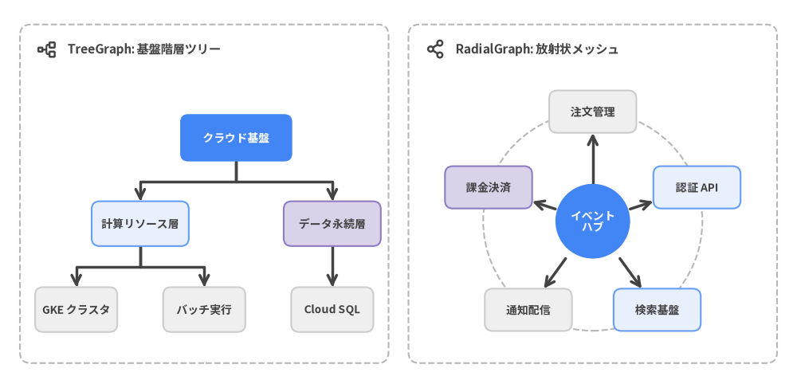
Source Code
from drawlib.canvas import save, setup
from drawlib.graph import RadialGraph, TreeGraph
from drawlib.icons import phosphor
from drawlib.lines import line, lines
from drawlib.shapes import circle, rectangle
from drawlib.styles import Styles
from drawlib.text import text
setup(width=160, height=78)
# 左パネル: TreeGraph（階層タクソノミー）
rectangle((41, 39), width=74, height=68, style=Styles.MutedDashed.patch(shape_r=2.2))
phosphor.tree_structure((9.5, 68.0), width=4.2, style=Styles.DarkBold)
text(
(13.5, 68.0),
"TreeGraph: 基盤階層ツリー",
style=Styles.DarkBold.patch(text_size=11.0, halign="left"),
)
tg = TreeGraph(root="root", direction="TB", sibling_sep=3.2, default_node_width=16.5, default_node_height=9.0)
tg.node("root", width=22.5, height=9.5)
tg.child("root", "compute", width=19.5, height=9.0)
tg.child("root", "data", width=19.5, height=9.0)
tg.child("compute", "k8s", width=16.5, height=9.0)
tg.child("compute", "jobs", width=16.5, height=9.0)
tg.child("data", "sql", width=16.5, height=9.0)
t_layout = tg.get_layout(width=60.0, height=52.0, margin=4.0)
ox1, oy1 = 11.0, 7.0
for e in t_layout.edges:
pts = [(px + ox1, py + oy1) for px, py in e.points]
lines(pts, arrow_head="->", style=Styles.DarkBold)
tree_nodes = [
("root", "クラウド基盤", Styles.PrimaryFlat, Styles.WhiteBold),
("compute", "計算リソース層", Styles.PrimaryNeutral, Styles.DarkBold),
("data", "データ永続層", Styles.SecondaryNeutral, Styles.DarkBold),
("k8s", "GKE クラスタ", Styles.Neutral, Styles.DarkBold),
("jobs", "バッチ実行", Styles.Neutral, Styles.DarkBold),
("sql", "Cloud SQL", Styles.Neutral, Styles.DarkBold),
]
for nid, label, st, txt_st in tree_nodes:
n = t_layout[nid]
rectangle(
(n.x + ox1, n.y + oy1),
width=n.width,
height=n.height,
style=st.patch(shape_r=1.6),
text=label,
text_style=txt_st.patch(text_size=10.0),
)
# 右パネル: RadialGraph（ハブ＆スポーク）
rectangle((119, 39), width=74, height=68, style=Styles.MutedDashed.patch(shape_r=2.2))
phosphor.share_network((87.5, 68.0), width=4.2, style=Styles.DarkBold)
text(
(91.5, 68.0),
"RadialGraph: 放射状メッシュ",
style=Styles.DarkBold.patch(text_size=11.0, halign="left"),
)
rg = RadialGraph(
hub="hub",
center=(35.0, 26.5),
radius_step=22.0,
start_angle=18.0,
default_node_width=17.5,
default_node_height=8.5,
)
rg.node("hub", width=15.0, height=15.0)
for sid in ["auth", "orders", "billing", "notify", "search"]:
rg.spoke("hub", sid)
r_layout = rg.get_layout(width=70.0, height=54.0, margin=4.0)
ox2, oy2 = 84.0, 7.0
hub_n = r_layout["hub"]
hub_xy = (hub_n.x + ox2, hub_n.y + oy2)
for r in r_layout.ring_radii.values():
circle(hub_xy, radius=r, style=Styles.MutedDashed)
for e in r_layout.edges:
sp = (e.src_port[0] + ox2, e.src_port[1] + oy2)
dp = (e.dst_port[0] + ox2, e.dst_port[1] + oy2)
line(sp, dp, arrow_head="->", style=Styles.DarkBold)
circle(
hub_xy,
radius=hub_n.width / 2,
style=Styles.PrimaryFlat,
text="イベント\nハブ",
text_style=Styles.WhiteBold.patch(text_size=10.0),
)
spokes = [
("auth", "認証 API", Styles.PrimaryNeutral),
("orders", "注文管理", Styles.Neutral),
("billing", "課金決済", Styles.SecondaryNeutral),
("notify", "通知配信", Styles.Neutral),
("search", "検索基盤", Styles.PrimaryNeutral),
]
for sid, label, st in spokes:
n = r_layout[sid]
rectangle(
(n.x + ox2, n.y + oy2),
width=n.width,
height=n.height,
style=st.patch(shape_r=1.6),
text=label,
text_style=Styles.DarkBold.patch(text_size=10.0),
)
save()
11.4 クラスタ境界（ArchitectureGraph）とマトリクス配置（GridGraph）
複数ゾーンに跨がるクラウド境界図や整然としたマトリクス構成図では、ArchitectureGraph と GridGraph がノード座標と同時にコンテナの外枠サイズも自動計算します。
ArchitectureGraphとArchitectureDiagramの連携: マクロ領域をpos="left" | "center" | "right" | "top" | "bottom"で方位指定し、VPC 内のサブネット順序をparent="vpc", order=1, 2で整列します。描画時はトップレベルNodeGroupに.bottom_left、入れ子NodeGroupに.local_bottom_left、内部Nodeに.local_xyを渡し、両ステップで同じpaddingと(width, height)を揃えます。GridGraphのスマート回廊ルーティング:g.cell("id", row=0, col=1)でセル番地を指定し、g.cluster_row(0, "fe_tier")やg.cluster_column(col, id)で行・列単位のグループ枠を生成できます。既定のedge_routing="smart"により、離れたセル間の矢印も他ノードを横切らず行間・列間の回廊を通ってクリーンに配線されます。
from drawlib.canvas import save, setup
from drawlib.diagrams.architecture import ArchitectureDiagram, GcpIcon, Node, NodeGroup, PhosphorIcon
from drawlib.graph import ArchitectureGraph
from drawlib.styles import Styles
setup(width=168, height=78)
# ステップ 1: ArchitectureGraph で入れ子 VPC とサブネット座標を解決
g = ArchitectureGraph(direction="LR", container_sep=14.0, default_node_width=24.0, default_node_height=14.0)
g.cluster("edge", ["client"], pos="left", padding=5.0)
g.group("vpc", pos="center", padding=5.0)
g.cluster("app_tier", ["api", "worker"], parent="vpc", order=1, padding=5.0)
g.cluster("data_tier", ["db"], parent="vpc", order=2, padding=5.0)
g.edge("client", "api")
g.edge("api", "worker")
g.edge("worker", "db")
layout = g.get_layout(margin=8.0)
# ステップ 2: .bottom_left / .local_bottom_left / .local_xy を用いて描画
d = ArchitectureDiagram(
node_style=Styles.DarkBold,
node_text_style=Styles.DarkBold.patch(text_size=10.5),
edge_style=Styles.DarkBold,
edge_text_style=Styles.Dark.patch(text_size=10.0),
node_card_style=Styles.Neutral,
)
edge_grp = d.add(NodeGroup(title="External", padding=5.0, style=Styles.MutedDashed), xy=layout["edge"].bottom_left)
vpc_grp = d.add(NodeGroup(title="Production VPC", padding=5.0, style=Styles.MutedDashed), xy=layout["vpc"].bottom_left)
app_grp = vpc_grp.add(NodeGroup(title="Compute", padding=5.0, style=Styles.PrimaryNeutral), xy=layout["app_tier"].local_bottom_left)
data_grp = vpc_grp.add(NodeGroup(title="Storage", padding=5.0, style=Styles.SecondaryNeutral), xy=layout["data_tier"].local_bottom_left)
client = edge_grp.add(Node("Client", width=24, height=14, icon=PhosphorIcon.DEVICES), xy=layout["client"].local_xy)
api = app_grp.add(
Node(
"API Gateway",
width=24,
height=14,
icon=GcpIcon.CLOUD_API_GATEWAY,
style=Styles.WhiteBold,
text_style=Styles.WhiteBold.patch(text_size=10.5),
card_style=Styles.PrimaryFlat,
),
xy=layout["api"].local_xy,
)
worker = app_grp.add(Node("Worker", width=24, height=14, icon=GcpIcon.CLOUD_RUN), xy=layout["worker"].local_xy)
db = data_grp.add(Node("Cloud SQL", width=24, height=14, icon=GcpIcon.CLOUD_SQL), xy=layout["db"].local_xy)
d.connect(client, api, label="HTTPS")
d.connect(api, worker)
d.connect(worker, db)
d.draw()
save("arch_graph_vpc.png")
12. マルチフレームアニメーションと 16:9 スライド作成
静的な構成図がシステムの断面を切り取るのに対し、時系列アニメーションとワイドスクリーン発表資料は「処理の流れ」と「ストーリー」を動的に伝えます。Drawlib は drawlib.anim により APNG（.png）・Animated WebP（.webp）・ディザノイズのない Animated GIF（.gif） を純粋な Python コードから直接出力でき、さらに drawlib.slide により Markdown 原稿から 16:9 Web スライド・ベクター PDF・編集可能な PowerPoint（.pptx） を一括生成します。
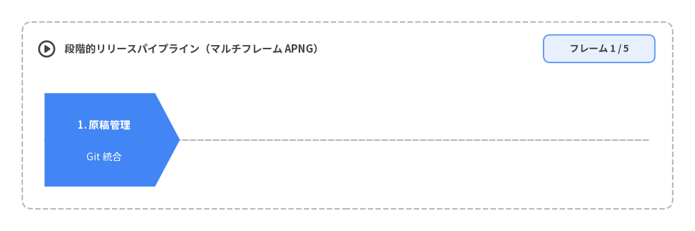
Source Code
from drawlib.anim import Animation
from drawlib.canvas import save, setup
from drawlib.icons import phosphor
from drawlib.lines import line
from drawlib.shapes import rectangle
from drawlib.smartarts import ChevronProcess
from drawlib.styles import Styles
from drawlib.text import text
setup(width=156, height=52)
anim = Animation(fps=1.5, loop=0)
stages = [
("1. 原稿管理", "Git 統合"),
("2. 構文検証", "静的チェック"),
("3. 図面描画", "グリッド検証"),
("4. 文書変換", "HTML / PDF"),
("5. 公開配信", "Web ポータル"),
]
for step in range(len(stages)):
is_last = step == len(stages) - 1
with anim.frame(duration=2.5 if is_last else 0.75):
rectangle((78, 26), width=146, height=42, style=Styles.MutedDashed.patch(shape_r=2.2))
phosphor.play_circle((10.5, 41.0), width=4.4, style=Styles.DarkBold)
text(
(14.5, 41.0),
"段階的リリースパイプライン（マルチフレーム APNG）",
style=Styles.DarkBold.patch(text_size=10.8, halign="left"),
)
rectangle(
(134.5, 41.0),
width=25.0,
height=6.2,
style=Styles.PrimaryNeutral.patch(shape_r=1.5),
text=f"フレーム {step + 1} / {len(stages)}",
text_style=Styles.DarkBold.patch(text_size=10.0),
)
line((10, 20.5), (146, 20.5), style=Styles.MutedDashed)
proc = ChevronProcess(
style=Styles.Neutral,
text_style=Styles.DarkBold.patch(text_size=10.5),
description_style=Styles.Dark.patch(text_size=10.0),
corner_angle=62.0,
spacing=1.6,
flat_left_end=True,
)
for i, (title, desc) in enumerate(stages):
is_active = i == step
c_style = Styles.PrimaryFlat if is_active else (Styles.PrimaryNeutral if i < step else Styles.Neutral)
t_style = Styles.WhiteBold.patch(text_size=10.5) if is_active else Styles.DarkBold.patch(text_size=10.5)
d_style = Styles.White.patch(text_size=10.0) if is_active else Styles.Dark.patch(text_size=10.0)
proc.add(
title,
description=desc,
style=c_style,
text_style=t_style,
description_style=d_style,
show=(i <= step),
)
proc.draw(xy=(10.0, 10.0), width=136.0, height=21.0)
save()
12.1 drawlib.anim によるマルチフレームアニメーション
キャンバスライフサイクルと Animation API
drawlib.anim から Animation をインポートし、フレームループの前に 1 回だけ setup(width=..., height=...) を呼び出したうえで、各フレームの描画処理を with anim.frame(duration=..., clear=True): コンテキスト内に記述します。
- 正確なコンストラクタ引数:
anim = Animation(fps=10.0, loop=0)（fpsの別名としてframe_rate=10.0も指定可能。loop=0は無限ループ再生）。 Animationにfile=引数は存在しない:Animationは初期化時にアクティブなキャンバスへ自動登録されるため、file=...引数は取りません。単体 Python スクリプトではsave("out.png")・save("out.webp")・save("out.gif")に出力パスを渡し、Markdown の```drawlibブロックではフェンス属性にfile=name.png（または.webp/.gif）を指定して末尾でsave()を呼びます。- フレーム毎クリア（
clear=True）と最終フレーム保持: 既定のwith anim.frame(duration=None, clear=True):はフレーム開始時にキャンバスをクリアするため、移動やハイライト色の切り替えが残像なく行えます（要素を単純追記する場合のみclear=Falseも選択可能）。最終フレームにはduration=2.0〜3.0秒の静止時間を設けると全体像を落ち着いて読み取れます。
| 出力形式 | 拡張子 | エンコード特性・画質 | 主な活用先 |
|---|---|---|---|
| APNG | .png / .apng |
可逆 24bit RGB + 8bit 透過。ブラウザで滑らかに再生され、PDF 等では自動的に鮮明な静止画として表示 | HTML ドキュメント（site / doc）、スライド、印刷用 PDF |
| Animated WebP | .webp |
可逆 24bit RGB + 8bit 透過のまま APNG 比で約 50% 軽量（minimize_size=True） |
大規模 Web ドキュメントサイト、モバイル Web アプリ |
| Animated GIF | .gif |
v0.3.10 のディザなし 256 色グローバル Median Cut 量子化（Image.Dither.NONE）により粒状ノイズ皆無 |
GitHub README、Slack、Notion、Confluence、X/Twitter |
プログレッシブ描画の定石（show=False・draw_ratio・補間関数）
Drawlib の全高レベルモジュールは、フレーム間でレイアウトがガタつかないアニメーション機構を備えています。
- 枠幅を固定した段階表示（
show=False）:SmartArts（ChevronProcess,Table,GridLayout,Cycle）のshow=FalseやDiagrams（FlowDiagram,ArchitectureDiagram,SequenceDiagram）のnode.show = Falseを使うと、非表示要素や接続エッジを隠しつつ配置スロットや列幅を 100% 固定したままステップ表示できます。 - チャートの滑らかな伸長（
draw_ratio）:LineChart・BarChart・AreaChart・PieChart・GanttChartの各データ系列はs.draw_ratio（0.0〜1.0）とs.draw_direction（"bottom_to_top"/"left_to_right"）を備え、軸目盛りを固定したままグラフを成長させられます。 - 座標・カラー補間とイージング:
drawlib.math.get_intermediate_points()/get_intermediate_path_points()によるパケット移動（$t^2(3 - 2t)$ などのイージング比率併用）や、drawlib.styles.get_intermediate_colors(c1, c2, num=..., include_ends=True)による塗りのフェード遷移が標準関数だけで完結します。
from drawlib.anim import Animation
from drawlib.canvas import save, setup
from drawlib.charts.bar import BarChart
from drawlib.styles import Styles
setup(width=110, height=64)
anim = Animation(fps=10.0, loop=0)
chart = BarChart(
categories=["Q1", "Q2", "Q3", "Q4"],
axis_line_style=Styles.MutedDashed,
axis_text_style=Styles.Dark.patch(text_size=10.0),
grid_style=Styles.MutedThin,
width=86,
height=44,
title="Quarterly API Throughput (kRPS)",
title_style=Styles.DarkBold.patch(text_size=12.5),
)
chart.configure_y_axis(min_value=0, max_value=120)
series = chart.add_series("Throughput", [42, 68, 94, 112], style=Styles.PrimaryFlat)
steps = 6
for i in range(1, steps + 1):
t = i / steps
eased = t * t * (3.0 - 2.0 * t) # Smoothstep イージング (0 -> 1)
series.draw_ratio = eased
with anim.frame(duration=2.2 if i == steps else 0.12):
chart.draw(xy=(12, 8))
save("throughput_growth.gif")
12.2 16:9 プレゼンテーションスライドと PowerPoint 出力（drawlib.slide）
uv run drawlib init project slide pitch -l en,ja -s google でスライドプロジェクトを初期化すると、pitch_src/<lang>/*.md の連番 Markdown ファイル群から 1920×1080（16:9）のマルチターゲット発表資料が生成されます。
- 2 層分離オーサリング（
::: blockと::: note）:::: block xy=(x, y) width=W height=H: 左上(0, 0)基準の1920×1080ピクセル座標でカード・2 カラム構成・---区切り線・埋め込み```drawlib図面を配置します（図面側はsetup(width=W/10, height=H/10)で縦横比を一致させます）。::: note: 詳細な口頭スクリプトや技術背景を聴衆向け画面から分離し、同期型**発表者ビュー（?presenter=1、P/Sキー）**および PowerPoint（.pptx）の発表者ノート欄へ自動格納します。
- ランタイムスライド番号とプログレッシブビルド（
drawlib.slide）:from drawlib.slide import current_slide, draw_page_number, draw_section_headerにより、コンパイル中のスライド番号current_slide.index・総枚数current_slide.total・整形文字列current_slide.text（"4 / 12"）を参照でき、ページ番号バッジや複数スライドに跨がる段階ビルド、4 種類の章扉（variant="split" | "centered" | "banner" | "minimal"）を簡潔に実装できます。- スライド内のアニメーション図面には
anim_trigger=click anim_loop=once anim_pause=(1, 3)を指定でき、クリックやAキーで任意のフレーム毎に一時停止・再開できます。
::: block xy=(1700, 1010) width=140 height=30
```drawlib file=page.svg
from drawlib.slide import draw_page_number
draw_page_number()
```
:::
::: block xy=(80, 40) width=1760 height=60
# ゼロトラスト API ゲートウェイ展開計画
:::
::: block xy=(80, 140) width=720 height=820
## 主要マイルストーン
- **エッジ mTLS**: クライアント証明書による相互認証
- **JWT キャッシュ**: Redis によるミリ秒未満の検証
- **カナリア判定**: SLO 違反時の自動ロールバック
---
*現在の発表位置: スライド 3*
:::
::: block xy=(840, 140) width=1000 height=820
```drawlib file=gateway_stage_ja.svg
from drawlib.canvas import clear, save, setup
from drawlib.shapes import rectangle
from drawlib.slide import current_slide
from drawlib.styles import Styles
clear()
setup(width=100, height=82)
rectangle(
(50, 41),
width=76,
height=34,
style=Styles.PrimaryFlat.patch(shape_r=2.5),
text=f"ゲートウェイ構成 ({current_slide.text})",
text_style=Styles.WhiteBold.patch(text_size=14.5),
)
save()
```
:::
::: note
左カラムの 3 つの要点を順に説明したあと、右図で `current_slide` が HTML・PDF・`.pptx` ビルド時に自動でページ番号を解決する仕組みを補足します。
:::
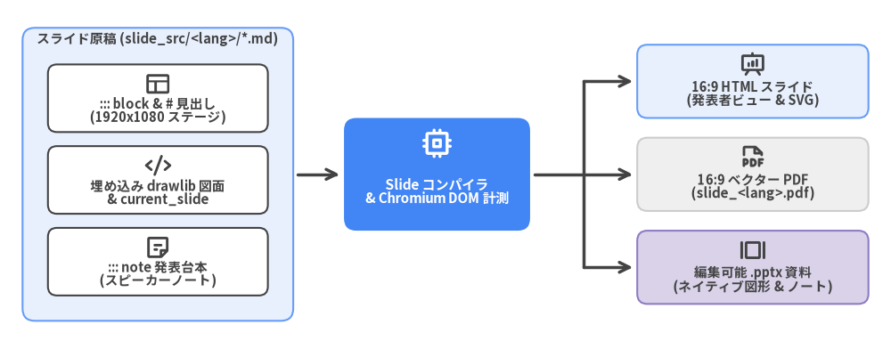
Source Code
from drawlib.canvas import save, setup
from drawlib.diagrams.architecture import ArchitectureDiagram, Node, NodeGroup, PhosphorIcon
from drawlib.styles import Styles
setup(width=158, height=62)
d = ArchitectureDiagram(
node_style=Styles.DarkBold,
node_text_style=Styles.DarkBold.patch(text_size=10.5),
edge_style=Styles.DarkBold,
edge_text_style=Styles.DarkBold.patch(text_size=10.0),
node_card_style=Styles.Neutral,
)
src = d.add(
NodeGroup(
title="スライド原稿 (slide_src/<lang>/*.md)",
width=48.0,
height=52.0,
style=Styles.PrimaryNeutral.patch(shape_r=2.2),
text_style=Styles.DarkBold.patch(text_size=10.5, halign="left"),
),
xy=(2.0, 3.0),
)
b_stage = src.add(
Node(
"::: block & # 見出し\n(1920x1080 ステージ)",
width=39.0,
height=12.0,
icon=PhosphorIcon.LAYOUT,
icon_size=4.8,
card_style=Styles.White.patch(shape_r=1.6),
),
xy=(24.0, 39.5),
)
b_code = src.add(
Node(
"埋め込み drawlib 図面\n& current_slide",
width=39.0,
height=12.0,
icon=PhosphorIcon.CODE,
icon_size=4.8,
card_style=Styles.White.patch(shape_r=1.6),
),
xy=(24.0, 25.0),
)
b_note = src.add(
Node(
"::: note 発表台本\n(スピーカーノート)",
width=39.0,
height=12.0,
icon=PhosphorIcon.NOTE,
icon_size=4.8,
card_style=Styles.White.patch(shape_r=1.6),
),
xy=(24.0, 10.5),
)
compiler = d.add(
Node(
"Slide コンパイラ\n& Chromium DOM 計測",
width=33.0,
height=20.0,
icon=PhosphorIcon.CPU,
icon_size=5.6,
style=Styles.WhiteBold,
text_style=Styles.WhiteBold.patch(text_size=10.8),
card_style=Styles.PrimaryFlat.patch(shape_r=2.2),
),
xy=(75.5, 29.0),
)
out_html = d.add(
Node(
"16:9 HTML スライド\n(発表者ビュー & SVG)",
width=41.0,
height=13.0,
icon=PhosphorIcon.PRESENTATION_CHART,
icon_size=4.8,
card_style=Styles.PrimaryNeutral.patch(shape_r=1.8),
),
xy=(131.5, 45.5),
)
out_pdf = d.add(
Node(
"16:9 ベクター PDF\n(slide_<lang>.pdf)",
width=41.0,
height=13.0,
icon=PhosphorIcon.FILE_PDF,
icon_size=4.8,
card_style=Styles.Neutral.patch(shape_r=1.8),
),
xy=(131.5, 29.0),
)
out_pptx = d.add(
Node(
"編集可能 .pptx 資料\n(ネイティブ図形 & ノート)",
width=41.0,
height=13.0,
icon=PhosphorIcon.SLIDESHOW,
icon_size=4.8,
card_style=Styles.SecondaryNeutral.patch(shape_r=1.8),
),
xy=(131.5, 12.5),
)
d.connect(src, compiler, routing="direct", padding=0.8)
j_mid = d.junction((101.5, 29.0))
j_top = d.junction((101.5, 45.5))
j_bot = d.junction((101.5, 12.5))
d.connect(compiler, j_mid, arrow="-", routing="direct", padding=(0.8, 0.0))
d.connect(j_mid, j_top, arrow="-", routing="direct")
d.connect(j_mid, j_bot, arrow="-", routing="direct")
d.connect(j_top, out_html, arrow="->", routing="direct", padding=(0.0, 0.8))
d.connect(j_mid, out_pdf, arrow="->", routing="direct", padding=(0.0, 0.8))
d.connect(j_bot, out_pptx, arrow="->", routing="direct", padding=(0.0, 0.8))
d.draw(xy=(2.0, 2.0))
save()
プロジェクト作成と HTML・PDF・編集可能 PowerPoint（.pptx）のビルド
生成された slide プロジェクトには、Web スライド・ベクター PDF に加えてネイティブ Microsoft PowerPoint 出力用のスクリプト（build_pptx.sh）が標準同梱されています。drawlib build pptx は ::: block カード・テキスト枠・箇条書き・表・::: note 発表者ノートを編集可能な 960×540 pt の PowerPoint オブジェクトへ変換し、図面を 240 DPI の高精細画像として配置します。
# 1. 日英 2 言語対応の 16:9 スライドプロジェクトを初期化
uv run drawlib init project slide pitch -l en,ja -s google
# 2. インタラクティブ 16:9 HTML スライド + ベクター PDF + 画像アセットを一括ビルド
./pitch_src/build.sh
# 3. 編集可能な PowerPoint ファイル（pitch_en.pptx / pitch_ja.pptx）を出力
./pitch_src/build_pptx.sh
# 同等の CLI コマンド:
uv run drawlib build pptx pitch_src/ -o pitch.pptx -s pitch_src/styles.py -u pitch_src/utils.py
13. Documentation as Code と 5つのプロジェクト種別
単体のアーキテクチャ図をコードで描けるだけでは、実務のドキュメント運用課題の半分しか解決できません。実際の開発組織では、設計図は複数章からなる技術設計書・検索可能な API ポータル・RFC 白書・経営層向けスライドの内部に組み込まれ、多言語や多様な配布形式の間で常に整合性を保つ必要があります。
Drawlib は Illustration as Code をさらに発展させた Illustrated Documentation as Code を実現します。純粋 Python による作図コードと Markdown 原稿を単一の Git リポジトリで一元管理し、静的 HTML サイト・A4 ベクター PDF・編集可能な Microsoft Word（.docx）仕様書・16:9 HTML/PDF スライド・ネイティブ PowerPoint（.pptx）・アニメーション画像群へと決定論的に一括コンパイルします。
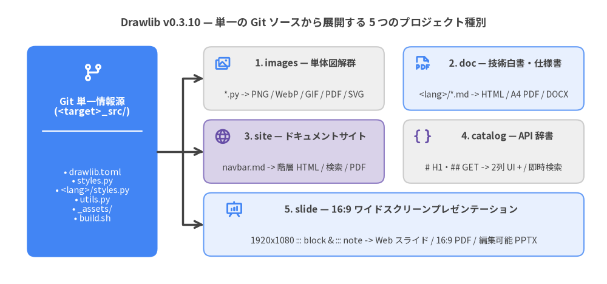
Source Code
from drawlib.canvas import save, setup
from drawlib.icons import phosphor
from drawlib.lines import line, lines
from drawlib.shapes import rectangle
from drawlib.styles import Styles
from drawlib.text import text
setup(width=158, height=74)
text(
(79.0, 68.2),
"Drawlib v0.3.10 — 単一の Git ソースから展開する 5 つのプロジェクト種別",
style=Styles.DarkBold.patch(text_size=12.8),
)
# 左側の焦点ハブ（PrimaryFlat は 1 箇所のみ）
rectangle((24.0, 34.5), width=34.0, height=55.0, style=Styles.PrimaryFlat.patch(shape_r=2.2))
phosphor.git_branch((24.0, 55.0), width=5.6, style=Styles.WhiteBold)
text((24.0, 46.2), "Git 単一情報源\n(<target>_src/)", style=Styles.WhiteBold.patch(text_size=11.5))
line((11.0, 39.8), (37.0, 39.8), style=Styles.White)
text(
(24.0, 23.2),
"• drawlib.toml\n• styles.py\n• <lang>/styles.py\n• utils.py\n• _assets/\n• build.sh",
style=Styles.White.patch(text_size=10.2),
)
# 右側 3 段への直交バス接続
line((41.0, 34.5), (47.5, 34.5), style=Styles.DarkBold)
lines([(47.5, 34.5), (47.5, 53.5), (53.0, 53.5)], arrow_head="->", style=Styles.DarkBold)
line((47.5, 34.5), (53.0, 34.5), arrow_head="->", style=Styles.DarkBold)
lines([(47.5, 34.5), (47.5, 15.5), (53.0, 15.5)], arrow_head="->", style=Styles.DarkBold)
# 1段目: images & doc（ニュートラル基調カード）
rectangle((76.5, 53.5), width=47.0, height=16.5, style=Styles.Neutral.patch(shape_r=2.0))
phosphor.images((58.0, 57.5), width=4.6, style=Styles.PrimaryBold)
text((79.5, 57.5), "1. images — 単体図解群", style=Styles.DarkBold.patch(text_size=11.0))
text((76.5, 49.3), "*.py -> PNG / WebP / GIF / PDF / SVG", style=Styles.Dark.patch(text_size=10.0))
rectangle((128.5, 53.5), width=47.0, height=16.5, style=Styles.PrimaryNeutral.patch(shape_r=2.0))
phosphor.file_pdf((110.0, 57.5), width=4.6, style=Styles.PrimaryBold)
text((131.5, 57.5), "2. doc — 技術白書・仕様書", style=Styles.DarkBold.patch(text_size=11.0))
text((128.5, 49.3), "<lang>/*.md -> HTML / A4 PDF / DOCX", style=Styles.Dark.patch(text_size=10.0))
# 2段目: site & catalog
rectangle((76.5, 34.5), width=47.0, height=16.5, style=Styles.SecondaryNeutral.patch(shape_r=2.0))
phosphor.globe((58.0, 38.5), width=4.6, style=Styles.SecondaryBold)
text((79.5, 38.5), "3. site — ドキュメントサイト", style=Styles.DarkBold.patch(text_size=11.0))
text((76.5, 30.3), "navbar.md -> 階層 HTML / 検索 / PDF", style=Styles.Dark.patch(text_size=10.0))
rectangle((128.5, 34.5), width=47.0, height=16.5, style=Styles.Neutral.patch(shape_r=2.0))
phosphor.brackets_curly((110.0, 38.5), width=4.6, style=Styles.SecondaryBold)
text((132.0, 38.5), "4. catalog — API 辞書", style=Styles.DarkBold.patch(text_size=11.0))
text((128.5, 30.3), "# H1・## GET -> 2列 UI + / 即時検索", style=Styles.Dark.patch(text_size=10.0))
# 3段目: slide（ワイドカード）
rectangle((102.5, 15.5), width=99.0, height=16.5, style=Styles.PrimaryNeutral.patch(shape_r=2.0))
phosphor.presentation_chart((61.0, 19.5), width=4.8, style=Styles.PrimaryBold)
text((104.5, 19.5), "5. slide — 16:9 ワイドスクリーンプレゼンテーション", style=Styles.DarkBold.patch(text_size=11.2))
text(
(102.5, 11.3),
"1920x1080 ::: block & ::: note -> Web スライド / 16:9 PDF / 編集可能 PPTX",
style=Styles.Dark.patch(text_size=10.2),
)
save()
13.1 プロジェクトファースト原則（drawlib init project）
1 枚のシステム構成図を描く場合でも、複数章の技術マニュアルを構築する場合でも、Drawlib では必ず**プロジェクトファースト原則（Project-First Rule）**に従います。空のディレクトリに裸の .py スクリプトを直接置いたり手作業でフォルダを作ったりせず、まず drawlib init project で <target>_src/ プロジェクトを自動生成します。
最初にプロジェクトの骨格を生成することで、以下の 5 つのエンジニアリング基盤が即座に整います。
- 統一マニフェスト（
drawlib.toml）: プロジェクト種別（images/doc/site/catalog/slide）・ビジュアルテーマ（default/google/monochrome）・多言語[i18n]設定・[seo]メタデータを 1 ファイルで宣言的に管理します。 - テーマと CJK フォントの一元管理（
styles.py&<lang>/styles.py）:-l jaや-l en,jaを指定するだけで、FontJapaneseなどの日本語フォント設定と配色トークンが自動構成され、各図でフォント指定を繰り返す必要がなくなります。 - DRY な再利用マクロ（
utils.py）:utils.pyに定義した関数や定数はすべての図からfrom drawlib.utils import <helper>で呼び出せ、数十ページにわたるカード形状や接続線のスタイルを完全に統一できます。 - ポータブルな静的アセット管理（
_assets/）:_assets/favicon.pngが初期配置され、社内ロゴやカスタム.ttfフォントを相対パスで安全に参照・SHA-256 キャッシュ追跡できます。 - 再現可能なワンコマンドビルド（
build.sh&build_*.sh）: 編集対象の信頼できる唯一の情報源（<target>_src/）と、読み取り専用の生成物ディレクトリを厳格に分離したビルドスクリプト群が自動生成されます。
5 つのプロジェクト種別はいずれも drawlib init project <type> [target] -l <langs> -s <style> で初期化できます（初期化後はサンプル用の sample*.py を削除または置き換えて運用します）。
# 利用可能な 5 つのスターターテンプレート一覧を確認
uv run drawlib init project list
# 1. 単体 Python 図解・アニメーション管理プロジェクト (images_src/)
uv run drawlib init project images diagrams -l ja -s google
# 2. 日英バイリンガルの技術白書・仕様書 -> HTML + A4 PDF + MS Word (.docx)
uv run drawlib init project doc whitepaper -l en,ja -s google
# 3. サイドバー付きマルチページ・ドキュメントポータル (docs_src/)
uv run drawlib init project site docs -l en,ja -s default
# 4. 検索可能な API / CLI / スキーマリファレンス辞書 (catalog_src/)
uv run drawlib init project catalog api_ref -l en,ja -s google
# 5. 日英バイリンガル 16:9 プレゼンスライド -> HTML + PDF + PowerPoint (.pptx)
uv run drawlib init project slide pitch -l en,ja -s google
13.2 Markdown 埋め込み作図ブロックと 720pt タイポグラフィ整合
doc・site・catalog・slide プロジェクトの Markdown 原稿（<target>_src/<lang>/**/*.md）では、drawlib コードフェンスを使って Python 作図コードを本文中に直接埋め込みます。ビルド時に各ブロックは独立したキャンバス状態で実行され、.drawlib/cache.db にキャッシュされた上でレスポンシブな図表要素へと変換されます。
```drawlib align=center code=fold file=gateway_flow_ja.png caption="図 13.3: リージョナル API ゲートウェイの基本構成"
from drawlib.canvas import save, setup
from drawlib.lines import line
from drawlib.shapes import rectangle
from drawlib.styles import Styles
setup(width=136, height=44)
rectangle((28, 22), width=32, height=18, style=Styles.Neutral, text="クライアント")
rectangle(
(68, 22),
width=32,
height=18,
style=Styles.PrimaryFlat,
text="API ゲートウェイ",
text_style=Styles.WhiteBold,
)
rectangle((108, 22), width=32, height=18, style=Styles.SecondaryNeutral, text="認証サービス")
line((44, 22), (52, 22), arrow_head="->", style=Styles.DarkBold)
line((84, 22), (92, 22), arrow_head="->", style=Styles.DarkBold)
save()
```
埋め込み drawlib フェンスでは、以下の 4 つのヘッダ属性で出力ファイル名・配置・コード表示モードを制御します。
| フェンス属性 | 指定可能な値 | 推奨される使い分け |
|---|---|---|
file= |
<stem>.png / .webp / .svg |
必須。 出力画像名を明示します（言語共通図は file=arch.png、日本語ローカライズ図は file=arch_ja.png）。drawlib show <md> <file> での個別検証にも使われます。 |
caption= |
"図 X.Y: ..." |
文書では必須。 HTML/PDF では <figcaption>、Word（.docx）では図キャプション段落として出力されます。 |
align= |
center | left | right |
本文カラム内での水平配置を指定します（標準は align=center）。 |
code= |
hide | fold | show |
code=hide（既定）は図のみを表示する白書・仕様書向け、code=fold は図の直下に折りたたみ <details> でコードを格納（5〜15行目の Top Hero 図で必須）、code=show はコードと図を両方展開する入門解説向けです。 |
ピクセル幅指定（width=...px）を省略すべき数学的理由（720pt 法則）
Drawlib の描画エンジンは、setup(width=W, height=H) の論理幅 W が 100 でも 160 でも、画像全体の物理幅を常に 10 inch = 720 pt に正規化して出力します。この画像が HTML 本文カラム（幅 $W_{\text{HTML}}$、通常 880px〜960px）に表示されるとき、図中の text_size（単位 pt）は以下の画面ピクセルサイズで描画されます。
$$\text{画面上の描画文字サイズ (px)} = \text{text_size} \times \frac{W_{\text{HTML}}}{720}$$
- ピクセル幅上限を省略した場合（カラム幅
100%≒900px）:text_size=11.0は11.0 × 900 / 720 = 13.75pxとなり、16pxの HTML 本文や A4 PDF の本文フォントと美しく調和します。 - 狭いピクセル幅を指定した場合（
width=500px/600px— 禁止）: 画像が500pxに縮小されるとtext_size=11.0がわずか7.6pxに潰れ、単体 PNG では読めた文字が Web や PDF 上で判読不能になります。フェンスにはピクセル幅を指定せず、常にtext_size >= 10.0を維持してください。
13.3 5つのプロジェクト種別の徹底比較
Drawlib v0.3.10 は用途に応じた 5 つのプロジェクト種別を備えています。Markdown ベースの 4 種別（doc・site・catalog・slide）はすべて共通の <target>_src/<lang>/ ディレクトリ構造を採用しているため、git mv でファイルを移動することなく後からいつでも対応言語を追加できます。
| 種別 | ソース構成 | ナビゲーション・構造 | 生成される成果物 | 主なエンジニアリング用途 |
|---|---|---|---|---|
images |
images_src/*.py |
単体／階層 Python スクリプト・AST 重複出力検査 | .png（APNG 含む）・.webp・.gif・.pdf・.svg |
構成図アセット集、README 図版、CI チャート生成、プロトコル解説アニメーション |
doc |
doc_src/<lang>/*.md (00_cover.md, 01_*...) |
ファイル名順の章結合＋--generate-index 目次自動挿入（navbar.md 不要） |
単一ページ HTML 本・A4 ベクター PDF・編集可能 Word .docx・GitHub MD |
技術 RFC、アーキテクチャ白書、オンボーディング教本、印刷用設計書、Word レビュー文書 |
site |
docs_src/<lang>/**/*.md + <lang>/navbar.md |
navbar.md による階層サイドバー・ダークモード・検索 |
マルチページ HTML ポータル・個別 PDF・GitHub MD・llms.txt |
プロダクト公式ドキュメント、開発者ポータル、複数チームの設計 Wiki |
catalog |
catalog_src/<lang>/*.md (自動インデックス) |
# H1 カテゴリ＆## H2 項目の固定 2 ペイン UI＋/ 即時ライブ検索 |
2 カラム検索対応 HTML 辞書・GitHub MD・llms.txt |
REST/gRPC API 辞書、CLI オプション辞典、イベント／メトリクス一覧、DB スキーマ定義書 |
slide |
slide_src/<lang>/*.md (01_title.md...) |
1920×1080 ::: block ステージ＋::: note 台本＋発表者ビュー |
16:9 対話型 HTML スライド・16:9 ベクター PDF・編集可能 .pptx |
技術カンファレンス登壇資料、アーキテクチャ審査会、スプリントデモ、顧客提案スライド |
実務で使い分ける際の各アーキタイプの特徴は以下の通りです。
images（単体図解・アニメーション集）:save()を呼ぶ各*.pyスクリプトから<script_stem>.png（Animation()使用時は.webp/.gif等も対応）を一括生成します。実行前に Python のastモジュールで全スクリプトを静的解析し、出力ファイル名の衝突があれば実行前に即座にエラー停止します。1 スクリプト内で複数画像を出力する場合は、次のsetup()の前に必ずclear()を呼びます。doc（章立て技術白書・A4 PDF・Word.docx）: 番号付き章ファイル（00_cover.md,01_overview.md, ...）を辞書順に結合し、改ページ（--page-break）と多言語対応の自動目次（--generate-index）を00_cover.mdの直後に挿入します。標準の./doc_src/build.sh（HTML+ A4PDF）に加え、./doc_src/build_docx.sh（drawlib build docx）を実行すればネイティブ編集可能な Word 文書（.docx）を出力できます。site（マルチページ・ドキュメントポータル）:<lang>/navbar.mdの定義に従い、階層化された Markdown 群をライト／ダークモード切り替え・多言語スイッチャー・シンタックスハイライト付きの Web ポータルへ変換します（内部.mdリンクは自動で.htmlに書き換えられます）。catalog（検索可能な API・スキーマリファレンス辞書）: 手動のnavbar.md管理を不要にした1 Markdown = 1 HTML ページ構成です。各ファイルの# H1が左サイドバーのアコーディオン項目、すべての## H2がスクロール連動#slugリンクとなり、/キーによる即時インクリメンタルフィルタと意味別カラーバッジ（HTTP メソッド## `GET` /v1/users/<id>、コード要素## `def` setup()、基盤要素## `service` auth-api・## `table` accounts・## `cmd` drawlib buildなど）を自動レンダリングします。slide（16:9ワイドスクリーンスライド & 編集可能.pptx）: 聴衆が見るスライド面（1920×1080ピクセル座標の::: block xy=(x, y) width=W height=H）と発表者用の読み上げ台本（::: note）を明確に分離します。デュアルウィンドウ発表者ビュー付き HTML や16:9ベクター PDF に加え、./slide_src/build_pptx.sh（drawlib build pptx）で Chromium DOM を計測し、編集可能なネイティブ PowerPoint 図形・テキスト・表・スピーカーノート・240 DPI図版を生成します。
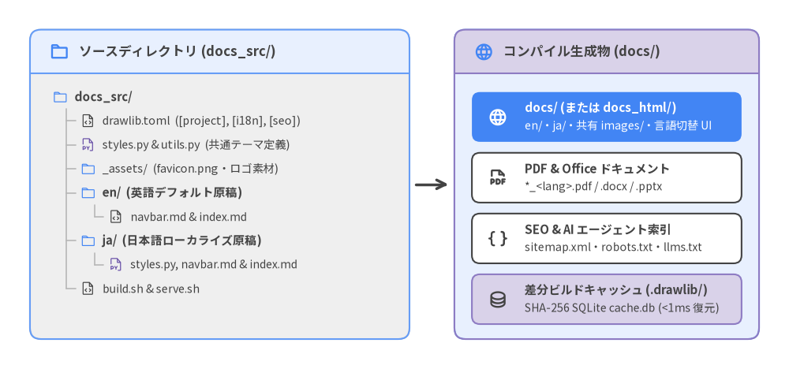
Source Code
from drawlib.canvas import save, setup
from drawlib.icons import phosphor
from drawlib.lines import line
from drawlib.smartarts import CardList, Panel, TreeNode
from drawlib.styles import Colors, Styles
setup(width=158, height=74)
# 左パネル: 信頼できる唯一の情報源 (docs_src/)
src_panel = Panel(
"ソースディレクトリ (docs_src/)",
style=Styles.Neutral.patch(shape_r=2.2),
header_style=Styles.PrimaryNeutral,
text_style=Styles.DarkBold.patch(text_size=12.0),
icon=phosphor.folder,
icon_style=Styles.PrimaryBold,
header_height=8.8,
)
src_panel.draw((6.0, 6.0), width=76.0, height=62.0)
TreeNode.register_drawing_item(
name="dir_item",
location="before",
padding_width=4.4,
function=phosphor.folder,
style=Styles.Primary.patch(icon_color=Colors.Primary),
args={"width": 3.0},
)
TreeNode.register_drawing_item(
name="py_item",
location="before",
padding_width=4.4,
function=phosphor.file_py,
style=Styles.Secondary.patch(icon_color=Colors.Secondary),
args={"width": 3.0},
)
TreeNode.register_drawing_item(
name="cfg_item",
location="before",
padding_width=4.4,
function=phosphor.file_code,
style=Styles.Dark.patch(icon_color=Colors.Dark),
args={"width": 3.0},
)
root = TreeNode(
"docs_src/",
text_style=Styles.DarkBold.patch(text_size=10.5),
line_style=Styles.MutedBold.patch(line_width=1.2),
line_horizontal_margin=2.8,
line_horizontal_length=2.8,
line_vertical_margin=4.8,
children=[
TreeNode("drawlib.toml ([project], [i18n], [seo])", text_style=Styles.Dark.patch(text_size=10.2)).set_drawing_item("cfg_item"),
TreeNode("styles.py & utils.py (共通テーマ定義)", text_style=Styles.Dark.patch(text_size=10.2)).set_drawing_item("py_item"),
TreeNode("_assets/ (favicon.png・ロゴ素材)", text_style=Styles.Dark.patch(text_size=10.2)).set_drawing_item("dir_item"),
TreeNode(
"en/ (英語デフォルト原稿)",
children=[
TreeNode("navbar.md & index.md", text_style=Styles.Dark.patch(text_size=10.0)).set_drawing_item("cfg_item"),
],
).set_drawing_item("dir_item"),
TreeNode(
"ja/ (日本語ローカライズ原稿)",
children=[
TreeNode("styles.py, navbar.md & index.md", text_style=Styles.Dark.patch(text_size=10.0)).set_drawing_item("py_item"),
],
).set_drawing_item("dir_item"),
TreeNode("build.sh & serve.sh", text_style=Styles.Dark.patch(text_size=10.2)).set_drawing_item("cfg_item"),
],
).set_drawing_item("dir_item")
root.draw(xy=(10.5, 54.5))
# コンパイラ接続矢印
line((83.2, 37.0), (89.8, 37.0), arrow_head="->", style=Styles.DarkBold)
# 右パネル: コンパイル生成物 (docs/)
out_panel = Panel(
"コンパイル生成物 (docs/)",
style=Styles.PrimaryNeutral.patch(shape_r=2.2),
header_style=Styles.SecondaryNeutral,
text_style=Styles.DarkBold.patch(text_size=12.0),
icon=phosphor.globe,
icon_style=Styles.PrimaryBold,
header_height=8.8,
)
out_panel.draw((91.0, 6.0), width=61.0, height=62.0)
outputs = CardList(
style=Styles.White.patch(shape_r=1.6),
text_style=Styles.DarkBold.patch(text_size=10.8),
description_style=Styles.Dark.patch(text_size=10.0),
badge_shape="none",
icon_style=Styles.DarkBold,
spacing=2.2,
)
outputs.add(
"docs/ (または docs_html/)",
"en/・ja/・共有 images/・言語切替 UI",
icon=phosphor.globe,
style=Styles.PrimaryFlat.patch(shape_r=1.6),
text_style=Styles.WhiteBold.patch(text_size=10.8),
description_style=Styles.White.patch(text_size=10.0),
icon_style=Styles.WhiteBold,
)
outputs.add(
"PDF & Office ドキュメント",
"*_<lang>.pdf / .docx / .pptx",
icon=phosphor.file_pdf,
)
outputs.add(
"SEO & AI エージェント索引",
"sitemap.xml・robots.txt・llms.txt",
icon=phosphor.brackets_curly,
)
outputs.add(
"差分ビルドキャッシュ (.drawlib/)",
"SHA-256 SQLite cache.db (<1ms 復元)",
icon=phosphor.database,
style=Styles.SecondaryNeutral.patch(shape_r=1.6),
)
outputs.draw((94.5, 9.0), width=54.0, height=46.5)
save()
13.4 drawlib.toml の設計：[project]・[i18n]・[seo]
Markdown ベースのすべてのプロジェクト（doc・site・catalog・slide）は、<target>_src/drawlib.toml によって宣言的に制御されます。メタデータや出力ポリシーを drawlib.toml に集約することで、シェルスクリプトや CI 設定でのオプション指定漏れを防げます。
[project]
name = "platform_docs"
type = "site" # "images" | "doc" | "site" | "catalog" | "slide"
title = "Cloud Platform Architecture"
description = "Unified architecture portal and API guide."
style = "google" # "default" | "google" | "monochrome"
[i18n]
default_lang = "en"
langs = ["en", "ja"] # doc/site/catalog/slide では単一言語でも必須
[i18n.labels]
en = "English"
ja = "日本語"
[i18n.descriptions]
en = "Cloud Platform architecture documentation and operational runbooks."
ja = "クラウドプラットフォームのアーキテクチャ設計書および運用ガイド。"
[seo]
site_url = "https://docs.example.com"
og_image = "_assets/ogp.png"
twitter_card = "summary_large_image"
sitemap = true
robots = true
llms_txt = true
多言語スケルトン整合検査（[i18n]）と AI 検索最適化（[seo]）
langs に複数言語（["en", "ja"] など）を設定すると、Drawlib はビルド開始時に**4 段階の機械的パリティ検査（構造整合チェック）**を自動実行し、翻訳漏れや構造崩れを本番デプロイ前に検出します。
- 1. ファイル構成と
navbar.mdの完全一致: すべての<lang>/フォルダが同一の相対.mdファイル集合を持ち、siteプロジェクトではnavbar.mdのセクション数とリンク先ターゲットが一致していることを検証します。 - 2. Markdown 構造スケルトン一致: 各ページの
#/##/###見出し階層（H1〜H3）・本文スロット（MarkdownText）・通常のコードブロック言語（CodeBlock）・drawlibブロック属性（align,code,captionの有無）の順序がdefault_langと一致することを検証します。連続する段落・箇条書き・表は単一のMarkdownTextトークンに畳み込まれるため、日本語として自然な段落分割や言い回しを自由に記述できます。 - 3. 共通図版とローカライズ図版の自動判別:
ja/側で同一ファイル名（file=arch.png）を使った場合は Python コードの完全一致が検証され、全言語で 1 回だけ描画して共有されます。図中テキストを日本語化する場合はja/styles.py（FontJapanese）と組み合わせ、file=arch_ja.pngのように言語サフィックス付きファイル名を指定します。 - 4. SEO タグと
llms.txtの自動出力（[seo]）:[seo]を設定すると、各 HTML の<head>に<link rel="canonical">・多言語hreflang・Open Graph（og:*）・Twitter Card タグが自動挿入されるほか、ルート直下にsitemap.xml・robots.txt・および AI エージェント向けのドキュメント索引規格であるllms.txt（llmstxt.org準拠）が自動生成されます。
14. CLI ツールチェインと自律型 AI エージェント協業
Drawlib は、人間のエンジニアだけでなくマルチモーダル AI コーディングエージェントとの協業を前提にゼロから設計されています。すべての図版・技術文書・スライドが決定論的な CLI（drawlib）を通じてヘッドレスにビルドできるため、AI エージェントが当て推量で座標を書いたり GUI 操作で詰まったりすることはありません。
AI エージェントは必要に応じて内蔵リファレンス（drawlib rules show）を参照し、プロジェクトを初期化（drawlib init）し、座標グリッド付きで単体プレビューを出力（drawlib show -g）して視覚的に自己検証し、文字重なりを 1 回で補正した上でリンク切れ検査（drawlib serve --check）までを自律的に完結させます。
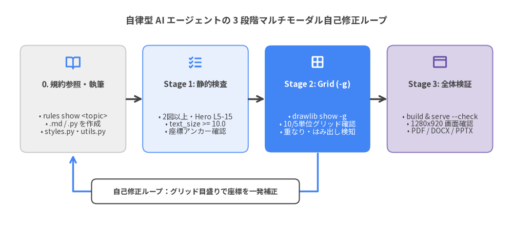
Source Code
from drawlib.canvas import save, setup
from drawlib.icons import phosphor
from drawlib.lines import line, lines
from drawlib.shapes import rectangle
from drawlib.styles import Styles
from drawlib.text import text
setup(width=158, height=70)
text(
(79.0, 63.8),
"自律型 AI エージェントの 3 段階マルチモーダル自己修正ループ",
style=Styles.DarkBold.patch(text_size=12.8),
)
# Step 0: ルール参照 & コード執筆（Neutral）
rectangle((22.5, 39.5), width=32.5, height=33.0, style=Styles.Neutral.patch(shape_r=2.0))
phosphor.book_open((22.5, 50.8), width=5.0, style=Styles.PrimaryBold)
text((22.5, 44.0), "0. 規約参照・執筆", style=Styles.DarkBold.patch(text_size=11.0))
text(
(22.5, 31.8),
"• rules show <topic>\n• .md / .py を作成\n• styles.py・utils.py",
style=Styles.Dark.patch(text_size=10.0),
)
# Stage 1: 静的・アンカー検査（PrimaryNeutral）
rectangle((60.2, 39.5), width=32.5, height=33.0, style=Styles.PrimaryNeutral.patch(shape_r=2.0))
phosphor.list_checks((60.2, 50.8), width=5.0, style=Styles.PrimaryBold)
text((60.2, 44.0), "Stage 1: 静的検査", style=Styles.DarkBold.patch(text_size=11.0))
text(
(60.2, 31.8),
"• 2図以上・Hero L5-15\n• text_size >= 10.0\n• 座標アンカー確認",
style=Styles.Dark.patch(text_size=10.0),
)
# Stage 2: グリッド視覚検証（焦点 PrimaryFlat）
rectangle((97.8, 39.5), width=32.5, height=33.0, style=Styles.PrimaryFlat.patch(shape_r=2.0))
phosphor.grid_four((97.8, 50.8), width=5.0, style=Styles.WhiteBold)
text((97.8, 44.0), "Stage 2: Grid (-g)", style=Styles.WhiteBold.patch(text_size=11.0))
text(
(97.8, 31.8),
"• drawlib show -g\n• 10/5単位グリッド確認\n• 重なり・はみ出し検知",
style=Styles.White.patch(text_size=10.0),
)
# Stage 3: マクロページ検証（SecondaryNeutral）
rectangle((135.5, 39.5), width=32.5, height=33.0, style=Styles.SecondaryNeutral.patch(shape_r=2.0))
phosphor.browser((135.5, 50.8), width=5.0, style=Styles.SecondaryBold)
text((135.5, 44.0), "Stage 3: 全体検証", style=Styles.DarkBold.patch(text_size=11.0))
text(
(135.5, 31.8),
"• build & serve --check\n• 1280x920 画面確認\n• PDF / DOCX / PPTX",
style=Styles.Dark.patch(text_size=10.0),
)
# 前進パイプライン矢印
line((38.8, 39.5), (43.9, 39.5), arrow_head="->", style=Styles.DarkBold)
line((76.5, 39.5), (81.5, 39.5), arrow_head="->", style=Styles.DarkBold)
line((114.1, 39.5), (119.2, 39.5), arrow_head="->", style=Styles.DarkBold)
# Stage 2 から Step 0 への自己修正フィードバック経路
lines([(97.8, 22.8), (97.8, 11.0), (22.5, 11.0), (22.5, 22.2)], arrow_head="->", style=Styles.PrimaryBold)
rectangle((60.2, 11.0), width=64.0, height=7.6, style=Styles.White.patch(shape_r=1.5))
text(
(60.2, 11.0),
"自己修正ループ：グリッド目盛りで座標を一発補正",
style=Styles.DarkBold.patch(text_size=10.2),
)
save()
14.1 プロジェクトと AI ルールの初期化（drawlib init）
drawlib init コマンド群は、プロジェクト骨格の生成（drawlib init project）と、AI コーディングエージェント向けルールファイルの自動配置（drawlib init agent）の 2 つの役割を担います。
drawlib init agent を実行すると、Drawlib の設計規約・720pt タイポグラフィ計算式・座標アンカー規則・3 段階自己検証プロトコルが各 AI ツール固有のルール形式で書き出されます。Drawlib v0.3.10 は以下の 9 つのエージェントターゲットを標準サポートしており、さらに共通規格である AGENTS.md を介して Kiro や OpenCode などの AGENTS.md 準拠エージェントともそのまま連携できます。
| CLI ターゲット | 対応 AI アシスタント | 生成されるワークスペースパス | ルール形式・読み込み挙動 |
|---|---|---|---|
antigravity |
Google Antigravity | .agents/rules/drawlib.md |
YAML フロントマター（trigger: model_decision または always_on） |
gemini |
Gemini CLI | GEMINI.md |
HTML コメントマーカーによる非破壊マージ（--global で ~/.gemini/GEMINI.md） |
claude |
Claude Code | .claude/rules/drawlib.md |
ルートの CLAUDE.md と競合しないモジュラールールファイル |
cursor |
Cursor | .cursor/rules/drawlib.mdc |
MDC フロントマター（description, alwaysApply） |
codex |
OpenAI Codex / AGENTS.md |
AGENTS.md |
HTML マーカーによる非破壊追記（Codex・Kiro 等の AGENTS.md 対応ツール共通） |
copilot |
GitHub Copilot | .github/instructions/drawlib.instructions.md |
YAML フロントマター（applyTo: "**/*_src/**, **/*.md, **/*.py"） |
windsurf |
Windsurf | .windsurf/rules/drawlib.md |
YAML トリガー付き Cascade ワークスペースルール |
cline |
Cline | .clinerules/drawlib.md |
.clinerules/ 配下で個別に ON/OFF 可能なルールファイル |
roo |
Roo Code | .roo/rules/drawlib.md |
ワークスペースまたは --global 対応のモジュラールール |
--detect フラグを渡せばリポジトリ内の既存エージェント設定フォルダを自動検出して最適なルールを生成でき、既定の -m auto モードにより作図・ドキュメント関連タスク時のみオンデマンドで読み込まれるためコンテキストトークンを無駄に消費しません。
# 対応する AI エージェント一覧と出力先パスを表示
uv run drawlib init agent list
# リポジトリ内で使用中の AI エージェントを自動検出してルールを生成
uv run drawlib init agent --detect
# 特定の AI エージェント向けにルールを一括生成（'all' でモジュラー 7 種を一括生成）
uv run drawlib init agent antigravity claude cursor copilot
# ドキュメント専用リポジトリ向けに常時読み込みモード（always）で生成
uv run drawlib init agent antigravity --mode always
# ユーザーホーム配下（~/.claude/rules/ 等）へグローバルルールとして導入
uv run drawlib init agent claude --global
14.2 マルチ形式ビルド・SHA-256 キャッシュ・検証サーバー
プロジェクト初期化後の日常開発・高速プレビュー・マルチ形式出版・CI 品質検査は、以下の 5 つの主要 CLI コマンドグループで完結します。
| コマンド群 | 主なサブコマンド・オプション | 主な役割 |
|---|---|---|
drawlib build |
html, pdf, docx, slide, pptx, markdown, image（-s, -u, --no-cache） |
<target>_src/ から HTML サイト／白書／スライド・ベクター PDF・編集可能な .docx／.pptx・GitHub Markdown・PNG/WebP/GIF 画像を一括コンパイルします。 |
drawlib show |
<file> [target] -s styles.py -u utils.py -g -o preview.png |
単一の .py または Markdown 内の名前付きブロック（file=arch.png）だけを 10/5 単位グリッド（-g）付きで高速ヘッドレス出力します。 |
drawlib serve |
<html_dir> [-p 8000] [--no-browser] [--check] |
依存ゼロのローカル確認用 HTTP サーバーを起動します。--check を付けると <a href> リンク切れと <img src> 欠損を検査して終了コードを返します。 |
drawlib cache |
list, clear --images, clear --all, download --all, download --browser |
.drawlib/cache.db の画像キャッシュ管理に加え、フォント・34 種アイコン・地図データ・Playwright ヘッドレス Chromium の事前取得を行います。 |
drawlib rules |
list, show <topic> [--raw | --rebuild], build --all, clear |
人間と LLM の双方がターミナル上で即座に参照できる自己文書化マニュアル（overview, cli, style-guide, review-guide, lib-*）を提供します。 |
.drawlib/cache.db の仕組み：SHA-256 コンテンツアドレス型キャッシュ
本文の誤字を 1 文字直すたびに 50 枚の Python 図版を再描画していては執筆サイクルが滞ります。Drawlib は各 drawlib ブロックや .py スクリプトを実行する前に、以下の 4 要素から決定論的な SHA-256 ハッシュキーを算出します。
- ブロックまたは
.pyスクリプトの正確な Python 作図コード。 styles.py（-s）およびutils.py（-u）のファイル内容全体。- コード内の文字列リテラルで参照されたローカル静的ファイル（
"_assets/logo.png"など）。 - 出力画像フォーマット（
png/webp/svg）・相対パス・総スライド数。
.drawlib/cache.db 内に一致するハッシュが存在すれば、Matplotlib を一切起動せず 1 ミリ秒未満でキャッシュ済みバイナリを復元します。キャッシュ DB は自動で .drawlib/.gitignore（*）を生成し、drawlib や matplotlib のバージョン更新時の自動無効化と 1 GiB 超過時の古いエントリ 50% 自動削除（LRU）も備えています。styles.py / utils.py 以外の外部自作モジュールを import して編集した場合は、--no-cache または drawlib cache clear --images で再描画を強制できます。
# 1. Markdown 内の特定図版だけを 10/5 単位の座標グリッド (-g) 付きで高速出力
uv run drawlib show doc_src/en/01_overview.md system_arch.png \
-s doc_src/styles.py -u doc_src/utils.py -g --no-cache -o .drawlib/scratch/arch_grid.png
# 2. マルチ形式ビルド（HTML・目次付き A4 PDF・Word .docx・16:9 スライド・PowerPoint .pptx）
uv run drawlib build html docs_src/ -o docs_html/ -s docs_src/styles.py -u docs_src/utils.py
uv run drawlib build pdf doc_src/ -o manual.pdf --page-break --generate-index -s doc_src/styles.py
uv run drawlib build docx doc_src/ -o manual.docx --page-break --generate-index --dpi 200
uv run drawlib build slide slide_src/ -o slide_html/ -s slide_src/styles.py
uv run drawlib build pptx slide_src/ -o slide.pptx --dpi 240 -s slide_src/styles.py
uv run drawlib build markdown docs_src/ -o docs_markdown/
uv run drawlib build image images_src/ -o images/ -f webp
# 3. CI 用アセット事前取得・画像キャッシュ削除・リンク切れ検査・オンデマンド規約参照
uv run drawlib cache download --all
uv run drawlib cache clear --images
uv run drawlib serve docs_html/ --check
uv run drawlib rules list
uv run drawlib rules show lib-smartarts-overview --raw
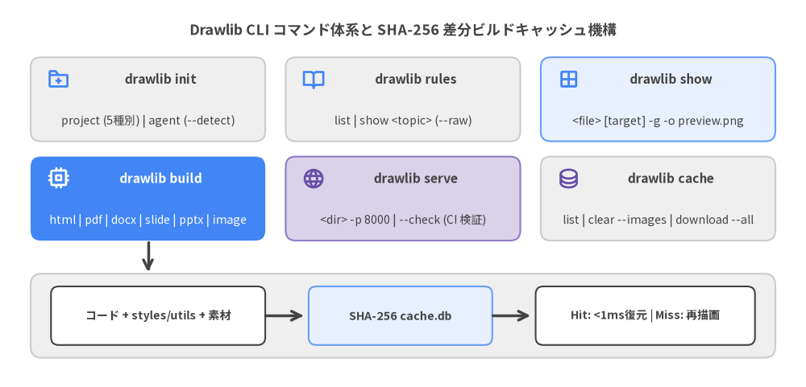
Source Code
from drawlib.canvas import save, setup
from drawlib.icons import phosphor
from drawlib.lines import line
from drawlib.shapes import rectangle
from drawlib.styles import Styles
from drawlib.text import text
setup(width=158, height=76)
text(
(79.0, 70.2),
"Drawlib CLI コマンド体系と SHA-256 差分ビルドキャッシュ機構",
style=Styles.DarkBold.patch(text_size=12.8),
)
# 上段: init / rules / show（ニュートラル基調カード 3 枚）
rectangle((29.0, 56.5), width=46.0, height=16.5, style=Styles.Neutral.patch(shape_r=2.0))
phosphor.folder_plus((11.5, 60.5), width=4.6, style=Styles.PrimaryBold)
text((31.5, 60.5), "drawlib init", style=Styles.DarkBold.patch(text_size=11.2))
text((29.0, 52.2), "project (5種別) | agent (--detect)", style=Styles.Dark.patch(text_size=10.0))
rectangle((79.0, 56.5), width=46.0, height=16.5, style=Styles.Neutral.patch(shape_r=2.0))
phosphor.book_open((61.5, 60.5), width=4.6, style=Styles.PrimaryBold)
text((81.5, 60.5), "drawlib rules", style=Styles.DarkBold.patch(text_size=11.2))
text((79.0, 52.2), "list | show <topic> (--raw)", style=Styles.Dark.patch(text_size=10.0))
rectangle((129.0, 56.5), width=46.0, height=16.5, style=Styles.PrimaryNeutral.patch(shape_r=2.0))
phosphor.grid_four((111.5, 60.5), width=4.6, style=Styles.PrimaryBold)
text((131.5, 60.5), "drawlib show", style=Styles.DarkBold.patch(text_size=11.2))
text((129.0, 52.2), "<file> [target] -g -o preview.png", style=Styles.Dark.patch(text_size=10.0))
# 中段: build（焦点 PrimaryFlat） / serve / cache
rectangle((29.0, 37.0), width=46.0, height=16.5, style=Styles.PrimaryFlat.patch(shape_r=2.0))
phosphor.cpu((11.5, 41.0), width=4.6, style=Styles.WhiteBold)
text((31.5, 41.0), "drawlib build", style=Styles.WhiteBold.patch(text_size=11.2))
text((29.0, 32.7), "html | pdf | docx | slide | pptx | image", style=Styles.White.patch(text_size=10.0))
rectangle((79.0, 37.0), width=46.0, height=16.5, style=Styles.SecondaryNeutral.patch(shape_r=2.0))
phosphor.globe((61.5, 41.0), width=4.6, style=Styles.SecondaryBold)
text((81.5, 41.0), "drawlib serve", style=Styles.DarkBold.patch(text_size=11.2))
text((79.0, 32.7), "<dir> -p 8000 | --check (CI 検証)", style=Styles.Dark.patch(text_size=10.0))
rectangle((129.0, 37.0), width=46.0, height=16.5, style=Styles.Neutral.patch(shape_r=2.0))
phosphor.database((111.5, 41.0), width=4.6, style=Styles.SecondaryBold)
text((131.5, 41.0), "drawlib cache", style=Styles.DarkBold.patch(text_size=11.2))
text((129.0, 32.7), "list | clear --images | download --all", style=Styles.Dark.patch(text_size=10.0))
# 下段: .drawlib/cache.db SHA-256 キャッシュパイプライン
rectangle((79.0, 14.0), width=146.0, height=16.5, style=Styles.Neutral.patch(shape_r=2.2))
rectangle((31.0, 14.0), width=42.0, height=11.5, style=Styles.White.patch(shape_r=1.5))
text((31.0, 14.0), "コード + styles/utils + 素材", style=Styles.DarkBold.patch(text_size=10.0))
line((52.0, 14.0), (59.5, 14.0), arrow_head="->", style=Styles.DarkBold)
rectangle((78.5, 14.0), width=36.0, height=11.5, style=Styles.PrimaryNeutral.patch(shape_r=1.5))
text((78.5, 14.0), "SHA-256 cache.db", style=Styles.DarkBold.patch(text_size=10.2))
line((96.5, 14.0), (104.0, 14.0), arrow_head="->", style=Styles.DarkBold)
rectangle((126.5, 14.0), width=43.0, height=11.5, style=Styles.White.patch(shape_r=1.5))
text((126.5, 14.0), "Hit: <1ms復元 | Miss: 再描画", style=Styles.DarkBold.patch(text_size=10.0))
# build からキャッシュ機構外枠への接続
line((29.0, 28.5), (29.0, 22.6), arrow_head="->", style=Styles.DarkBold)
save()
14.3 徹底解説：AI エージェントの 3 段階自律検証ループ
単体 PNG 画像を 1 回眺めるだけでは、出版品質は保証できません。キャンバス内部での微妙なラベル重なり（ミクロ幾何の欠陥）と、HTML カラムや 16:9 スライドに埋め込んだ際の文字縮小・ファーストビュー崩れ（マクロページの欠陥）は性質が異なるためです。AI エージェントは以下の 3 段階検証を順に実行することで両方の欠陥を自律的に解消します。
- Stage 1 — 静的コード・座標アンカー事前検査:
- 各ドキュメントページに
2個以上のdrawlib図版が含まれ、5〜15 行目にcode=foldの Top Hero 図が配置されていることを確認します。 - フェンスへの狭いピクセル幅指定（
width=500px/600px）がないこと、text_size >= 10.0であること、相対パスのみが使われていること、および各コンポーネントの座標アンカー仕様（Center/Bottom-Left/Top-Left）の計算が正しいことを確認します。
- 各ドキュメントページに
- Stage 2 — 座標グリッドによるミクロ幾何レビュー（
drawlib show -g）:- 作成・変更した各図版を
-g付きで個別出力（uv run drawlib show <file> <target.png> -s styles.py -u utils.py -g -o .drawlib/scratch/<unique>_grid.png）し、マルチモーダル視覚ツールで確認します。 -gオーバーレイには数値ラベル付きの 10 単位主グリッド線と 5 単位補助破線が描画されるため、テキストの枠線はみ出し・矢印との干渉・外周マージン不足（< 4〜6単位）・虹色過多（ニュートラル比率< 50%）を見つけた際、正確な修正先座標を 1 回で読み取って修正できます。
- 作成・変更した各図版を
- Stage 3 — マクロページ・最終成果物レビュー:
./<target>_src/build.shでビルド後、uv run drawlib serve <target>_html/ --checkでリンク切れと画像欠損がゼロであることを検証し、1280×920デスクトップ画面のヘッドレス Chromium スクリーンショット（および生成されたPDF/DOCX/PPTX）を視覚確認します。- スクロールなしで Top Hero 図がファーストビューに収まり、図中テキストが周囲の
16pxHTML 本文（1920×1080スライドでは26px本文）と同等の視認性を持っていることを確認し、最後に.drawlib/scratch/を削除します。
14.4 並列サブエージェント委譲による大規模ドキュメント構築
全 16 章の技術書（doc）や数十ページのポータル（site / catalog）、20 枚超のスライド（slide）を単一エージェントのコンテキスト内で直列に執筆・画像確認すると、高解像度プレビュー画像でコンテキストウィンドウが圧迫されます。Drawlib のファイル分割構造は、3 フェーズの親オーケストレータ・並列サブエージェント委譲パターンにそのまま適合します。
- Phase 1 — 親エージェントによる共通基盤の確立: 親エージェントが先に
drawlib init projectを実行し、drawlib.toml・styles.py（およびja/styles.py）・utils.py・_assets/・<lang>/navbar.mdや章ファイル名一覧を確定させます。 - Phase 2 — サブエージェントによる排他的ファイル執筆（
--no-cache）: 各サブエージェントは互いに重複しない.md/.pyファイル群だけを担当し（共通設定ファイルは読み取り専用）、固有のスクラッチ出力名（drawlib show ... -g --no-cache -o .drawlib/scratch/<worker>_<stem>.png）を使って Stage 1・Stage 2 の視覚検証を独立コンテキスト内で完了させます。.drawlib/cache.dbの SQLite 書き込み競合を防ぐため、サブエージェント内では./build.shを実行しません。 - Phase 3 — 親エージェントによる統合ビルドとリンク検査: 全サブエージェントの完了後、親エージェントが
./<target>_src/build.shを 1 回実行し、drawlib serve --checkと Stage 3 ブラウザ／PDF 検証を行って.drawlib/scratch/をクリーンアップします。
15. ビジュアル設計原則と本番チェックリスト
優れた技術アーキテクチャ図は、派手な色を塗り重ねるのではなく、数学的に計算された文字サイズ・落ち着いたニュートラル配色・正確な座標アンカー・再利用可能なコンポーネントマクロによって、3 秒以内にシステムの全体構造を読み手に伝達します。
最終章となる本章では、エンジニアと AI コーディングエージェントが図版・技術白書・ドキュメントサイト・API 辞書・16:9 スライドを本番公開する前に確認すべき「設計原則と最終チェックリスト」を 1 ページのリファレンスに集約します。
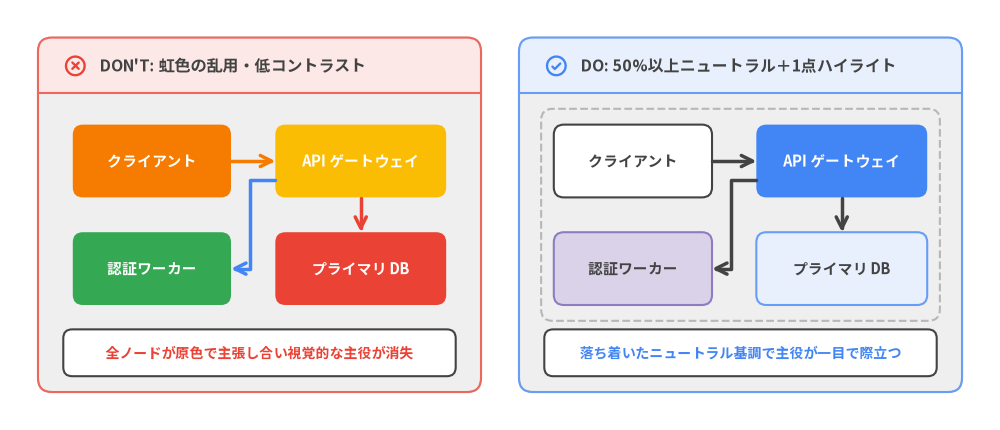
Source Code
from drawlib.canvas import save, setup
from drawlib.icons import phosphor
from drawlib.lines import line, lines
from drawlib.shapes import rectangle
from drawlib.smartarts import Panel
from drawlib.styles import Styles
from drawlib.text import text
setup(width=158, height=68)
# 左パネル: DON'T（原色の乱用と低コントラスト）
dont_panel = Panel(
"DON'T: 虹色の乱用・低コントラスト",
style=Styles.Neutral.patch(shape_r=2.2),
header_style=Styles.DangerNeutral,
text_style=Styles.DarkBold.patch(text_size=11.4),
icon=phosphor.x_circle,
icon_style=Styles.DangerBold,
header_height=8.8,
)
dont_panel.draw((6.0, 6.0), width=70.0, height=56.0)
rectangle(
(24.0, 42.5),
width=25.0,
height=11.5,
style=Styles.AccentFlat.patch(shape_r=1.6),
text="クライアント",
text_style=Styles.WhiteBold.patch(text_size=10.5),
)
rectangle(
(57.0, 42.5),
width=27.0,
height=11.5,
style=Styles.WarningFlat.patch(shape_r=1.6),
text="API ゲートウェイ",
text_style=Styles.WhiteBold.patch(text_size=10.5),
)
rectangle(
(24.0, 25.5),
width=25.0,
height=11.5,
style=Styles.SuccessFlat.patch(shape_r=1.6),
text="認証ワーカー",
text_style=Styles.WhiteBold.patch(text_size=10.5),
)
rectangle(
(57.0, 25.5),
width=27.0,
height=11.5,
style=Styles.DangerFlat.patch(shape_r=1.6),
text="プライマリ DB",
text_style=Styles.WhiteBold.patch(text_size=10.5),
)
line((36.5, 42.5), (43.5, 42.5), arrow_head="->", style=Styles.AccentBold)
line((57.0, 36.7), (57.0, 31.3), arrow_head="->", style=Styles.DangerBold)
lines([(43.5, 39.5), (39.5, 39.5), (39.5, 25.5), (36.5, 25.5)], arrow_head="->", style=Styles.PrimaryBold)
rectangle((41.0, 12.2), width=62.0, height=7.4, style=Styles.White.patch(shape_r=1.4))
text(
(41.0, 12.2),
"全ノードが原色で主張し合い視覚的な主役が消失",
style=Styles.DangerBold.patch(text_size=10.0),
)
# 右パネル: DO（50%以上のニュートラル基調＋焦点ハイライト 1 箇所）
do_panel = Panel(
"DO: 50%以上ニュートラル＋1点ハイライト",
style=Styles.Neutral.patch(shape_r=2.2),
header_style=Styles.PrimaryNeutral,
text_style=Styles.DarkBold.patch(text_size=11.4),
icon=phosphor.check_circle,
icon_style=Styles.PrimaryBold,
header_height=8.8,
)
do_panel.draw((82.0, 6.0), width=70.0, height=56.0)
rectangle((117.0, 34.0), width=63.0, height=33.5, style=Styles.MutedDashed.patch(shape_r=1.8))
rectangle(
(100.0, 42.5),
width=25.0,
height=11.5,
style=Styles.White.patch(shape_r=1.6),
text="クライアント",
text_style=Styles.DarkBold.patch(text_size=10.5),
)
rectangle(
(133.0, 42.5),
width=27.0,
height=11.5,
style=Styles.PrimaryFlat.patch(shape_r=1.6),
text="API ゲートウェイ",
text_style=Styles.WhiteBold.patch(text_size=10.5),
)
rectangle(
(100.0, 25.5),
width=25.0,
height=11.5,
style=Styles.SecondaryNeutral.patch(shape_r=1.6),
text="認証ワーカー",
text_style=Styles.DarkBold.patch(text_size=10.5),
)
rectangle(
(133.0, 25.5),
width=27.0,
height=11.5,
style=Styles.PrimaryNeutral.patch(shape_r=1.6),
text="プライマリ DB",
text_style=Styles.DarkBold.patch(text_size=10.5),
)
line((112.5, 42.5), (119.5, 42.5), arrow_head="->", style=Styles.DarkBold)
line((133.0, 36.7), (133.0, 31.3), arrow_head="->", style=Styles.DarkBold)
lines([(119.5, 39.5), (115.5, 39.5), (115.5, 25.5), (112.5, 25.5)], arrow_head="->", style=Styles.DarkBold)
rectangle((117.0, 12.2), width=62.0, height=7.4, style=Styles.White.patch(shape_r=1.4))
text(
(117.0, 12.2),
"落ち着いたニュートラル基調で主役が一目で際立つ",
style=Styles.PrimaryBold.patch(text_size=10.0),
)
save()
15.1 720pt タイポグラフィスケールと横幅設計
Drawlib は setup(width=W, height=H) の論理幅にかかわらずキャンバス横幅を 10 inch = 720 pt に固定して描画するため、HTML や PDF 上での実表示フォントサイズは text_size × 表示カラム幅 / 720 で決まります。Markdown フェンスに width=500px や 600px のような狭いピクセル上限を書くと画像全体が縮小され、16px の本文に対して図中文字だけが極端に小さくなります。ドキュメントフェンスではピクセル幅指定を必ず省略し、以下のスケール表に従ってください。
| テキスト階層 | 推奨 text_size |
推奨 Styles トークン |
~900px カラムでの実描画サイズ |
|---|---|---|---|
| キャンバスタイトル | 14.0 – 16.0 |
Styles.DarkBold.patch(text_size=14.5) |
~17.5px – 20.0px（明快な図タイトル） |
| セクション・枠見出し | 12.0 – 13.5 |
Styles.DarkBold.patch(text_size=12.5) |
~15.0px – 16.9px（小見出しと同等） |
| ノード・カード本文 | 10.5 – 12.0 |
Styles.DarkBold（淡色上）／Styles.WhiteBold（*Flat 上） |
~13.1px – 15.0px（16px 本文と調和） |
| 接続線・軸ラベル | 10.0 |
Styles.Dark または Styles.Muted |
~12.5px（プロトコル・単位表記） |
| 絶対下限（目盛り・コード） | 9.5（9.5 未満禁止） |
Styles.Dark / SourceCode |
~11.9px（判読可能な最小限界値） |
16:9 スライド（
1920×1080ステージ）での補正ルール: スライドの本文フォントは26pxと Web 文書（16px）より大きく設計されています。左右 2 カラム分割の::: block（width=960..1040）に図を配置する場合は、ノード／軸ラベルのtext_sizeを13.5 – 15.5（タイトルは16.0 – 18.5）へ引き上げ、同時にボックス幅を25%〜40%広げて本文との文字サイズ比を揃えてください。
15.2 50%+ ニュートラル基調とコントラスト規律
プロフェッショナルな設計図は、すべての箱をカラフルに塗るのではなく、彩度を抑えた背景の中に主役だけを際立たせます。
- 図形・カードの
50%以上をニュートラルに保つ: 一般のマイクロサービス・ワーカー・コンテナはStyles.Neutral・Styles.PrimaryNeutral・Styles.SecondaryNeutral・Styles.Whiteを基調とし、VPC やクラスタ境界にはStyles.MutedDashedを使います。 - 高彩度の
*Flat塗りは1〜2箇所の焦点に限定:Styles.PrimaryFlatやStyles.AccentFlatはその図で最も注目させたい中核コンポーネントだけに絞り、視線の入り口を明確にします。 - 明度コントラストの厳格なペアリング:
- 濃いベタ塗り（
Styles.PrimaryFlat,Styles.AccentFlat,Styles.DangerFlat）の上には必ずStyles.WhiteBold（見出し）およびStyles.White（補足・アイコン）を組み合わせます。 - 淡色・ニュートラル塗り（
Styles.Neutral,Styles.PrimaryNeutral,Styles.SecondaryNeutral,Styles.White）の上には必ずStyles.DarkBoldおよびStyles.Darkを使います（白カード上の本文を青や紫にしない）。
- 濃いベタ塗り（
- 接続線は既定でニュートラル（
Styles.DarkBold）: 通常の処理フロー矢印にはStyles.DarkBold（またはStyles.Dark）を使い、Styles.DangerBold（異常系・ロールバック）・Styles.SuccessBold（正常コミット）・Styles.PrimaryBold（最重要クリティカルパス）は意味のある強調にのみ限定します。 - PascalCase でのトークン読み込み: 常に
from drawlib.styles import Colors, Stylesと大文字始まりでインポートします（小文字のstyles/colorsはモジュール名と衝突しstyles.pyの設定を無効化するため禁止）。
15.3 座標アンカー完全早見表（Center・Bottom-Left・Top-Left）
Drawlib のキャンバス座標系は常に左下 (0, 0) 原点（右が +X、上が +Y）ですが、各コンポーネントに渡す xy 引数が「中央・左下・左上」のどれを指すかはモジュール群ごとに明確に定まっています。以下の対応表を押さえることで、「半分だけ右や上へズレる」配置バグを 100% 防げます。
| アンカー種別 | 対象モジュール・クラス群 | xy の解釈 |
占有領域（X / Y スパン） |
|---|---|---|---|
中央 Center (cx, cy) |
shapes.*（rectangle, circle, cylinder 等）text.text(), icons.*（phosphor, gcp, aws, azure 等）images.image()smartarts.Cycle, smartarts.MindMapNodediagrams.* の Node(..., xy=(cx, cy)) |
要素の幾何学的中心 | x: [cx - w/2, cx + w/2]y: [cy - h/2, cy + h/2] |
左下 Bottom-Left (x0, y0) |
charts.*（全 10 種の定量チャート）diagrams.* の d.draw(xy=(x0, y0)) & NodeGroup(..., xy=(x0, y0))大半の smartarts.*（BoxList, CardList, ChevronProcess, GridLayout, Pyramid, KpiCards, Roadmap, Panel, GeoMap, *Calendar） |
領域の左下隅（右・上へ伸長）。幅 W のキャンバス中央配置は x0 = (W - width) / 2 |
x: [x0, x0 + width]y: [y0, y0 + height] |
左上 Top-Left (x0, y_top) |
smartarts.Tablesmartarts.TreeNodesmartarts.BulletPointssmartarts.SourceCode |
領域の左上隅（行やツリー枝が y = 0 に向かって下方向へ伸長） |
x: [x0, x0 + width]y: [y_top - height, y_top] |
両方保持（get_layout()） |
graph.*（ArchitectureGraph, LayerGraph, TreeGraph, RadialGraph, GridGraph） |
自動計算されたレイアウト結果が中心と左下の両プロパティを提供 | .xy / .local_xy（中央）.bottom_left / .local_bottom_left（左下） |
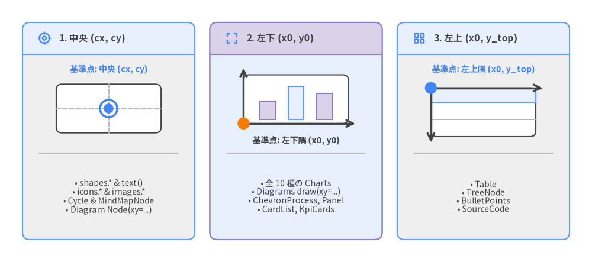
Source Code
from drawlib.canvas import save, setup
from drawlib.icons import phosphor
from drawlib.lines import line
from drawlib.shapes import circle, rectangle
from drawlib.smartarts import Panel
from drawlib.styles import Styles
from drawlib.text import text
setup(width=158, height=70)
# カード 1: 中央アンカー Center (cx, cy)
p1 = Panel(
"1. 中央 (cx, cy)",
style=Styles.Neutral.patch(shape_r=2.0),
header_style=Styles.PrimaryNeutral,
text_style=Styles.DarkBold.patch(text_size=11.2),
icon=phosphor.crosshair,
icon_style=Styles.PrimaryBold,
header_height=8.5,
)
p1.draw((6.0, 6.0), width=46.0, height=58.0)
text((29.0, 51.5), "基準点: 中央 (cx, cy)", style=Styles.PrimaryBold.patch(text_size=10.2))
rectangle((29.0, 41.0), width=28.0, height=13.0, style=Styles.White.patch(shape_r=1.5))
line((15.0, 41.0), (43.0, 41.0), style=Styles.MutedDashed)
line((29.0, 34.5), (29.0, 47.5), style=Styles.MutedDashed)
circle((29.0, 41.0), radius=2.3, style=Styles.PrimaryOutlineBold)
circle((29.0, 41.0), radius=1.3, style=Styles.PrimaryFlat)
line((10.5, 29.0), (47.5, 29.0), style=Styles.Muted)
text(
(29.0, 17.5),
"• shapes.* & text()\n• icons.* & images.*\n• Cycle & MindMapNode\n• Diagram Node(xy=...)",
style=Styles.Dark.patch(text_size=10.0),
)
# カード 2: 左下アンカー Bottom-Left (x0, y0)
p2 = Panel(
"2. 左下 (x0, y0)",
style=Styles.PrimaryNeutral.patch(shape_r=2.0),
header_style=Styles.SecondaryNeutral,
text_style=Styles.DarkBold.patch(text_size=11.2),
icon=phosphor.corners_out,
icon_style=Styles.PrimaryBold,
header_height=8.5,
)
p2.draw((56.0, 6.0), width=46.0, height=58.0)
rectangle((79.0, 43.5), width=28.0, height=13.0, style=Styles.White.patch(shape_r=1.5))
rectangle((71.5, 40.5), width=4.2, height=5.0, style=Styles.SecondaryNeutral)
rectangle((79.0, 42.5), width=4.2, height=9.0, style=Styles.PrimaryNeutral)
rectangle((86.5, 41.5), width=4.2, height=7.0, style=Styles.SecondaryNeutral)
line((65.0, 37.0), (94.8, 37.0), arrow_head="->", style=Styles.DarkBold)
line((65.0, 37.0), (65.0, 51.8), arrow_head="->", style=Styles.DarkBold)
circle((65.0, 37.0), radius=1.6, style=Styles.AccentFlat)
text((79.0, 32.5), "基準点: 左下隅 (x0, y0)", style=Styles.DarkBold.patch(text_size=10.2))
line((60.5, 29.0), (97.5, 29.0), style=Styles.Muted)
text(
(79.0, 17.5),
"• 全 10 種の Charts\n• Diagrams draw(xy=...)\n• ChevronProcess, Panel\n• CardList, KpiCards",
style=Styles.Dark.patch(text_size=10.0),
)
# カード 3: 左上アンカー Top-Left (x0, y_top)
p3 = Panel(
"3. 左上 (x0, y_top)",
style=Styles.Neutral.patch(shape_r=2.0),
header_style=Styles.PrimaryNeutral,
text_style=Styles.DarkBold.patch(text_size=11.2),
icon=phosphor.squares_four,
icon_style=Styles.PrimaryBold,
header_height=8.5,
)
p3.draw((106.0, 6.0), width=46.0, height=58.0)
text((129.0, 51.5), "基準点: 左上隅 (x0, y_top)", style=Styles.PrimaryBold.patch(text_size=10.2))
rectangle((129.0, 40.0), width=28.0, height=13.0, style=Styles.White.patch(shape_r=1.5))
rectangle((129.0, 44.5), width=28.0, height=4.0, style=Styles.PrimaryNeutral)
line((115.0, 38.0), (143.0, 38.0), style=Styles.Muted)
line((115.0, 46.5), (144.8, 46.5), arrow_head="->", style=Styles.DarkBold)
line((115.0, 46.5), (115.0, 32.0), arrow_head="->", style=Styles.DarkBold)
circle((115.0, 46.5), radius=1.6, style=Styles.PrimaryFlat)
line((110.5, 29.0), (147.5, 29.0), style=Styles.Muted)
text(
(129.0, 17.5),
"• Table\n• TreeNode\n• BulletPoints\n• SourceCode",
style=Styles.Dark.patch(text_size=10.0),
)
save()
15.4 再利用マクロと多言語テーマ設計（utils.py & styles.py）
プロジェクト内の図版が 5 枚を超えた段階で、カード寸法やサブタイトル位置・日本語フォント指定を各 Markdown ブロックへコピー＆ペーストし始めると保守性が急速に低下します。以下の 2 ファイルへ責務を分離して DRY（Don't Repeat Yourself） を徹底してください。
styles.pyと<lang>/styles.py（テーマ・言語別フォントの上書き）: ルートのstyles.pyでColors = GoogleColors()とStyles = GoogleStyles()を定義し、日本語図版向けのフォント設定（Styles = GoogleStyles().patch_font(regular=FontJapanese.SANSSERIF_REGULAR, bold=FontJapanese.SANSSERIF_BOLD)）はja/styles.pyに分離します。styles.pyは.drawlib/cache.dbのハッシュ対象に含まれるため、配色変更時は関連図版が自動で再描画されます。utils.py（チーム共通の描画マクロ関数）:service_card()やラベル付きconnect()のような定型パーツをutils.pyに定義し、各章からfrom drawlib.utils import connect, service_cardで呼び出します。
# 各章ブロックやスクリプト内 — utils.py と styles.py の共通マクロを再利用
from drawlib.canvas import save, setup
from drawlib.styles import Styles
from drawlib.utils import connect, service_card
setup(width=128, height=42)
# 共通マクロで焦点ノード 1 個＋ニュートラル補助ノードを簡潔に描画
service_card((26, 21), "Ingress Proxy", "Envoy :443", width=32, height=18, style=Styles.PrimaryFlat)
service_card((96, 21), "Billing API", "Python / gRPC", width=32, height=18, style=Styles.SecondaryNeutral)
connect((42, 21), (80, 21), label="mTLS gRPC", style=Styles.DarkBold)
save()
15.5 本番リリース前の最終チェックリスト
プルリクエストのマージや成果物の配布前に、以下の 5 項目を満たしているか最終確認を行ってください。
- [ ] 1. 相対リンクとアセットパスの衛生管理: 章間リンク（
02_architecture.md,../01_intro/index.md）や画像参照（Markdown 本文からは../_assets/logo.png、drawlibPython コード内からは"_assets/logo.png"）がすべてポータブルな相対パスで書かれていること。ローカル URI スキームや/abs/local/path・C:\local\pathのような環境依存の絶対パスが一切含まれていないこと（混入時はdrawlib buildがエラーで拒否します）。 - [ ] 2. キャンバス外周マージン（
4〜6単位以上）とグリッド確認（-g）: 変更したすべての図版をdrawlib show ... -g --no-cacheで出力して視覚確認し、上下左右の端から4〜6座標単位以上の余白があること・文字のはみ出しや重なりがゼロであること・text_size >= 10.0であることを確認済みであること。 - [ ] 3.
50%+ニュートラル配色と Top Hero 配置: ノードやカードの半数以上がニュートラル系（Neutral,PrimaryNeutral,SecondaryNeutral,White）で統一され、*Flat焦点ノードにはWhiteBoldが組み合わされていること。各ページの 5〜15 行目にcode=foldの Top Hero 図があり、ページあたり2図以上を含むこと。 - [ ] 4. 多言語（
i18n）スケルトン整合性: 多言語プロジェクト（langs = ["en", "ja"]等）では、全言語で相対ファイル構成・#/##/###見出し順序・コードブロック順序が完全一致し、翻訳図版に<stem>_<lang>.pngが付与されていること。 - [ ] 5. 自動リンク検査とマルチ形式出力の確認:
./<target>_src/build.shとuv run drawlib serve <target>_html/ --checkが終了コード0で通過し、1280×920ブラウザ表示でのファーストビューと文字サイズ整合、PDF/.docx/.pptxの改ページ品質を確認の上、一時ファイル（.drawlib/scratch/）を削除済みであること。